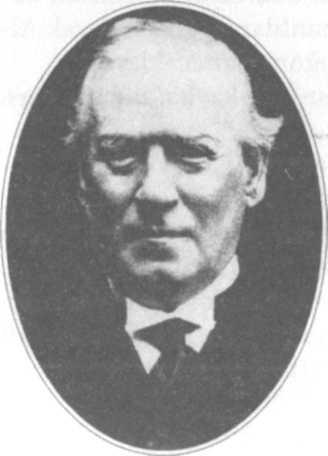
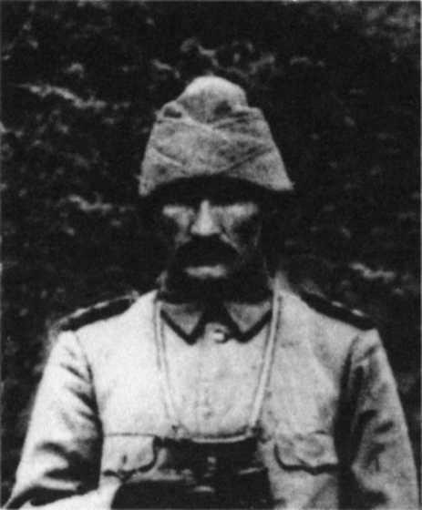
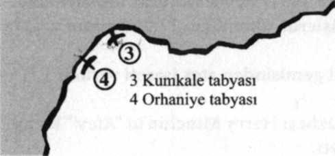
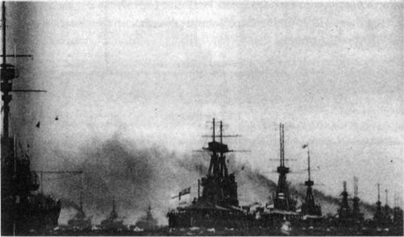

28 Ekim 1914-18 Şubat 1915
28 EKİM günü yolda geçmişti. 29 Ekim Perşembe günü beş grup da hedefine ulaştı. Türk denizciler ambarlarda topluca namaz kılıp helalleştiler.
Her grup hedefi olan limana hücuma geçti. Yavuz'un hedefi Sivastopol'dü.
Sivastopol'dan başka Odesa, Kerç, Yalta, Kefe ve Novorosiski üs ve limanları bombardıman edildi.
Toplam üç gambot, bir mayın gemisi, bir topçeker, 20 ticaret gemisini hatırdılar, 50'den fazla petrol ve buğday deposuyla bir telsiz istasyonunu tahrip ettiler, 3 subay, 72 eri esir aldılar.
Amiral Souchon olayı İstanbul'a şöyle bildirdi:
"Çatışmayı Rus filosu başlatmıştır."1
Birkaç kişi dışında herkes, Padişah, Sadrazam, Nazırlar, subaylar, aydınlar, yazarlar, tarihçiler, Osmanlılar ve genel olarak Almanlar uzun zaman gerçeğin böyle olduğunu sanacaklardı.
Sonuç fiyaskoydu. Rus donanması bir kayba uğramamış, Karadeniz'deki üstünlüğünü korumuştu.
Enver Paşa Rus ruleti oynamış ve kaybetmişti.
Devlet hazır olmadan savaşa girdiğiyle kalacaktır.
Haber İstanbul'u sarstı. Olayı bir Alman oldubittisi sanan bazı Nazırlar istifa etti. Sadrazam da istifa etmişti, Padişahın ricası üzerine istifasını geri aldı. Savaşı önlemek için çok çabaladı. Ama altı limanı birden bombalanan Rusya'yı yatıştırmak mümkün değildi. Rus Büyükelçisi İstanbul'u terk etti. Onu İngiliz ve Fransız Büyükelçileri izledi.
Rus ordusu bu olaya 1 Kasımda Doğu sınırını geçip saldırarak karşılık verdi. İngiltere de fırsatı kaçırmadı. Bir İngiliz savaş gemisi İzmir körfezine girerek iki gemiyi batırdı.
O kadar korkulan savaş başlamıştı. 4 uzun yıl sürecekti.
Gazeteler olayı büyük başlıklarla verdiler. En etkili başlığı İkdam gazetesi atmıştı: "Silah başına!"
Savaşı o güne kadar bir alaya bile komuta etmemiş bir Başkomutan (Enver Paşa) ile hiç savaş
görmemiş Prusyalı bir süvari tümeni komutanı (Liman Paşa) yönetecekti.
RUS ÇARI II. Nicola savaşın başlaması dolayısıyla bir bildiri yayımlayarak Çarlık Rusyasının değişmez amacını ilan etti:
"Bu savaşın ecdadımız tarafından bize vasiyet edilen tarihi emellerin gerçekleşmesine imkân vereceğine inanıyorum."
Başbakan Trepov, Rus Meclisinde yaptığı konuşma ile bu bildiriye açıklık getirecektir:
"İstanbul ve Çanakkale Boğazları ile İstanbul şehri, Rus milletinin yüzyıllar görmüş samimi amaçlarıdır. Bütün tarihi boyunca beslemiş olduğu bu emeller şimdi gerçekleşmek üzere. İngiltere ve Fransa ile yaptığımız anlaşma ile Boğazlar ve İstanbul üzerindeki hakkımız tanınmıştır. Rus milleti ne için kanını döktüğünü bilsin!"2
İstanbul'u işgal için Odesa'da bir kolordu oluşturmaya başlayacaklardı.
Enver ve Bronsard Paşalar ejderhayı azdırmışlardı.
İNGİLTERE Başbakanı Asquit savaşa giren Osmanlı Devletini çok sert bir üslupla suçladı:
"Osmanlı Devleti'ni çok ağır biçimde cezalandıracağız."
Birkaç gün önce Malta Tersanesi Komutanlığına atanan Amiral Limpus, bu sırada daha Londra'daydı. Donanma Bakanlığında göreviyle ilgili temaslar yapıyordu. Çanakkale

ingiltere Başbakanı Asquit
Boğazı girişindeki tabyaların ertesi gün bombardıman edileceğini öğrenince şaşırdı, bir İngilizin sinirlenebileceği kadar sinirlendi.
İki yıla yakın Türkiye'de kalmış, ayrılalı iki ay olmuştu. Çanakkale Boğazını iyi bilirdi. Savunma düzeni çok zayıftı. Tabyalardaki bütün toplar eski, çağı geçmiş toplardı. Bir gün Boğazı zorlamak gerekirse geçmek için güçlük çekilmeyecekti.
Ama böyle hesapsız bir hareket uyuyan Türkleri uyandırır, savunmayı güçlendirirlerdi. Bu tehlikeyi belirterek bombardımandan cayılması için ilgilileri uyardı:
"Bu çok yanlış olur. Yapmayınız!"
Donanma Bakanı Winston Churchill'in Çanakkale Boğazı'nın savunması hakkında bilgisi vardı.
Sanayisiz bir devletin gücü kadardı. Kuvvetlice bir filo bu savunmayı yıkıp Marmara'ya geçebilirdi.
Biraz güçlendirilmesi bir sorun yaratmazdı.
Verdiği emri geri almadı.
Bir İngiliz-Fransız filosu, ertesi gün Boğaz girişindeki dört tabyayı3 bombardıman ederek bir gövde gösterisinde bulunacak, böylece Türk savunmasını da yoklamış olacaktı.
3 KASIM 1914 Salı sabahı Seddülbahir tabyasındaki gözcü ufukta belirmeye başlayan savaş gemisini izliyordu. Saat 05.28'di.
Yaklaşık 3 aydır, sayıları gittikçe artan İngiliz ve Fransız savaş gemileri, Çanakkale Boğazı'nı sıkı denetim altında tutuyorlardı. Nöbette kalan gemiler Boğaza girişin uzağında aç köpekbalıkları gibi dolaşıp durmaktaydılar.
Sabah pusu ağır ağır açılıyordu. Gözcü ilk geminin arkasından bir başka geminin daha geldiğini fark etti. Sonra da öteki gemileri.
Ooof!
Hemen nöbetçi subayı uyandırdı. "Komutanım, gemiler!.."
Nöbetçi subay Müstahkem Mevki Komutanlığını arayarak durumu bildirdi. Beş dakika geçmeden tabyalar silah başı yaptı.
Önde birbirinin dümen suyunda ilerleyen dört büyük savaş gemisi vardı. Bunları irili ufaklı 14 savaş
gemisi izliyordu. Kıyılara 15 kilometre kala yavaşladılar. Öndeki 4 gemi, birbirinden ayrılarak atış
düzenine geçti. Ağır topların namlu-I lan hedeflere doğrultuldu.
Amiral Carden'in işaretiyle saat 07.00'de bombardımana başladılar.
Amiral Carden
Girişteki dört tabyada uzunca menzilli sadece 4 top vardı. İkisi Ertuğrulda'ydı, ikisi karşıda, Orhaniye'de. Bunların subay ve erleri topları başında kaldılar. Öteki subay ve erler, gerideki sığınaklara, kalın duvarlı cephaneliklere, derince siperlere sığındılar.
2 İngiliz gemisi, Gelibolu yarımadasının ucundaki Seddülbahir ve Ertuğrul tabyalarını, 2 Fransız gemisi ise Anadolu yakasındaki Kumkale ve Orhaniye tabyalarını bombardıman ediyordu.
Çanakkale Boğazı girişindeki dört tabya 60 Diriliş / Çanakkale 1915
Subaylar askerleri aylardan beri gece gündüz çalışarak böyle bir gün için hazırlamışlardı. Sevindiler.
Hiçbir asker korksa bile yerini bırakmamıştı. Verilen bilinçli eğitimin sonucuydu bu. Ama ciddi bir sorun vardı: En uzun menzilli toplarının bile atış mesafeleri yeterli değildi. Attıkları mermiler gemilerin yakınına bile erişemiyordu. Düşman da yakına sokulmuyordu.
"Lanet olsun!"
Bu savaş değil, tek yanlı bir atış tatbikatıydı sanki.
Bombardıman giderek yavaşladı. Bitiyordu herhalde. Bir serseri mermi Seddülbahir tabyasının gerisindeki merkez cephanesinin damına isabet etti. Cephaneliğin taş tavanı bir metre, tavanın üzerine yığılmış koruyucu killi toprak iki metre kalınlığındaydı. Bir merminin bu kalınlığı yarması mümkün değildi. Hain mermi toprağa saplanmadı, havalandırma deliğinden kaydı, cephanenin içine düşüp patladı. En sağlam bina diye bazı subaylar ve birçok er buraya sığınmıştı. Cephanelikte 11 ton kara barut ve 300 ağır top mermisi vardı.
Cephanelik içindekilerle birlikte havaya uçtu.
5 subay, 80 er şehit oldu. Çevredeki 23 er yaralandı. Yeni ordunun ilk şehit ve gazileriydi bunlar.33
Cephaneliğin yerinde kocaman bir çukur kalmıştı.
Amiral Carden'in emriyle filo ateşi kesti. Geride nöbetçi 2 savaş gemisi bırakıp uzaklaştılar.
Bu sırada bir İngiliz birliği Arapların coşkun gösterileri arasında Basra'ya çıkmaktaydı. Bir süre sonra birkaç vefalı kabile ve aydın dışında Arap yarımadasında Osmanlıya bağlı kimse kalmayacaktı.
İstanbul bu gidişin farkında bile değildi. Çok uzun yıllardan beri uyuyordu.
ÇANAKKALE BOĞAZI Müstahkem Mevki Komutanı Cevat Paşa (Çobanlı) gece Çanakkale'deki Çimenlik tabyasında bulunan karargâhında kalmıştı. Karadeniz olayından dolayı alarm halin-deydiler. Belki Boğaza girmeye çalışırlar diye yalnız giriş tabyalarını değil, Boğaz'daki bütün tabya ve bataryaları silah başı ettirdi.
Boğazı gözlemek için Çimenlik kalesinin burcuna çıktı. Buradan bütün Boğaz görünmekteydi.
Boğaz'ın en güzel zamanıydı.
Bu soluk kesici güzelliği girişteki tabyalardan yükselen kara dumanlar kirletiyor, patlayan mermilerin yırtıcı şaklamaları tepeden tepeye yansıyarak Çanakkale'ye kadar geliyordu.
Kurmay Başkanı Yarbay Selahattin Adil Bey de geldi. Bir süre acı içinde savaş denilen vahşetin sesini dinlediler, dumanını izlediler.
Yarbay Selahattin Adil Bey
Bu görevlere iki buçuk ay önce atanmışlardı. Savunma düzenini şaşılacak kadar dağınık ve yetersiz bulmuş, topların yeri ve sayısı hakkında doğru dürüst bilgi bile edinememişlerdi. Yetkiler Genelkurmay'daki birçok Alman arasında bölüşüldüğü için komuta birliği de kaybolmuştu.4
Bu kısacık süre içinde kimseyi huylandırmadan, yetki tartışmalarına yol açmadan, usul usul çok yol almışlardı. En önemlisi komuta birliği sağlanmış ve Almanların yaptığı hayalci savunma planı akla ve imkânlara uydurulmuştu.5
Birden gökyüzüne doğru, içinde kızıl şimşeklerin kaynaştığı kıvrım kıvrım bulutlar yükseldi, patlayışın korkunç sesi yayılıp Boğaz'ı kapladı.
Telefona sarıldılar. Cephaneliğin uçtuğunu öğrendiler. Cevat Paşa sapsarı kesildi, Yarbay "Hazırlıksız yakalanacağımızdan korkuyorum.." dedi, "..Mondros limanında biriken savaş gemilerinin hedefi Çanakkale'den başka neresi olabilir? Şu 13 eski bataryamızı da ne yapıp edip yeniden savunmaya katalım!"
"Başüstüne!"
Almanlar yerine yeniler gelmeden, küçük çaplı toplardan oluşan 13 adet bataryayı eski diye devre dışı bırakmışlardı.6 Yenilerin geleceği yoktu. Almanlar bir işi yapılamayacak kadar büyük tutuyor, sonra da sonunu getiremiyorlardı.
Tabyaları denetledikten ve yaralıları ziyaret ettikten sonra karargâha döndüler.
Yapacak çok iş vardı.
Amiral Limpus savunmanın ilkelliğini koruduğunu sanarak yanılıyordu ama bu kanlı gösterinin çalışmaları hızlandıracağını doğru kestirmişti.
Hatta çok hızlandıracaktı.
Hurdaya çıkarılmış toplar yeniden elden geçirilecek, çürümüş gemilerin silahları sökülecek, depolarda unutulmuş işe yarar ne kadar top varsa, eski püskü olmalarına bakılmaksızın hepsi Çanakkale'ye postalanacaktı.
Müzeye kaldırılmış havan topları bile yollanacaktı.
Yaşlı Mesudiye zırhlısı da sağlam toplarından yararlanılmak üzere Çanakkale'ye gönderildi.
Yüzyıllardır bir şeyleri birbirine ekleyip kenetleyerek, bulup buluşturarak, yapıp yakıştırarak yaşamışlardı. Keşke devlet zengin, toplum gelişmiş olsa, bu dilenci buluşlarına, bu fukara çözümlerine gerek kalmasaydı. Yurtlarını Kanuni döneminde olduğu gibi kendi işliklerinin ürünü toplarla, tüfeklerle, kendi tersanelerinde yapılmış gemilerle savunabilselerdi. Ah ne olurdu!
Neden böyle geri kalmış, yoksul olmuşlardı?
Nedeni ne dindi, ne de dindarlıktı. İlk aydınlanma Müslümanlığın ürünüydü. Başlıca neden dinin, dolayısıyla toplumun ve devletin, gitgide ham sofuluğun, bağnazlığın ve medrese tutuculuğunun etkisine girmiş olmasıydı. Allah'ın koyduğu kurallar ile yetinmeyip onlara yeni kurallar, yasaklar, sıkılıklar ekleyen bu anlayış öyle yaygın ve güçlüydü ki kimse karşı gelemiyordu.
Bunu söyleyebilecek, dini de, toplumu ve devleti de kurtaracak kahraman henüz yoktu. Kader o kahramanı tarih sahnesine çıkarmak için hazırlık yapıyordu.
SAYILARI gittikçe artan İngiliz ve Fransız savaş gemileri Limni adasının Mondros limanını üs olarak kullanmaya başladılar.7 Burası giderek bir baca ve direk ormanına döndü. Limanın girişi, olası bir Alman denizaltı hücumuna karşı çift kat çelik ağlarla kapatıldı. Işıldaklar bütün gece çevreyi tarıyordu.
Donanma Bakanı Winston Churchill bu gelişen filoya komutan olarak Amiral Carden'i getirdi.
Amiral bu görevi sevmiş, bugünkü ilk işi de heyecanla yönetmişti. Boğaz'ın girişindeki tabyaları 20
dakika bombardıman etmişler, 200 mermi savurmuşlardı. Mondros'a dönerken yolda görevin yapıldığını Londra'ya bildirdi.
Donanma Bakanı Churchill makamına geldiği zaman şifresi açılmış raporu masasının üzerinde buldu.
Carden'in hevesli olmasına sevindi.
Batı cephesinde sonuç almak çok zorlaşmıştı. Savaşı kısaltacak ve zafere götürecek en elverişli ve ses getirecek savaş sahnesinin Çanakkale olduğunu düşünüyordu. Düşünmüyor inanıyordu. Ama inancını paylaşmamıştı. Amiral bilgisine ve biraz da yaşına güvenerek -73 yaşındaydı- bu yararsız, gereksiz düşüncesinden dolayı Churchill'i azarlamış, o da susmuştu.
Deniz Kuvvetleri Komutanı Amiral Fisher
Churchill İngiliz hükümetinin en genç Bakanıydı. 40 yaşındaydı. Savaşı en etkili politik araç ve çözüm yolu olarak görüyor, savaştan dev bir oyun zevki alıyordu.
Bir puro yaktı.
Düşüncesinden vaz geçtiği için değil, daha iyi hazırlanmak, sonra da konuyu yeniden açarak istediği sonucu koparmak için susmuştu.
Masasının üzeri Bakanlığın arşivinde bulunan Çanakkale ile ilgili dosyalarla doluydu. Fırsat buldukça bunları inceliyordu.
Yeni bir dosyayı önüne çekti.
İKİ HAFTA önce Yarbay von Thauvenay Genelkurmay'da Harekât ve İstihbarat gibi iki çok önemli şubenin başına getirilmişti. Türkleri sürekli küçümseyen bir Alınandı.
Çanakkale ağzındaki tabyaların bombalandığı haberi Yarbay von Thauvenay'ı panikletti. "Eyvah!"
Düşman donanmasının fazla zorlanmadan Boğaz'ı geçeceğini, Marmara'ya girip İstanbul'u tehdit edebileceğini düşünüyordu. Çünkü Çanakkale'de bir tek yeni, büyük top olmadığını biliyordu.
Türklerin düşman donanmasının yoğun ateşine dayanabileceklerini de hiç sanmıyordu.
Bu nedenle Harbiye Nezareti ile Genelkurmay'ın, tehdit altında kalmamak için bir an önce İstanbul'un Anadolu yakasına taşınmasını önerdi. Oradan daha içerilere kaçırabilirdi.
Savaşa erken girilmiş olması Türk kurmaylarını çok üzmekteydi. Şimdi ordunun Alman çıkarları için kullanılmamasını sağlamaya çalışıyorlardı. Çok gergindiler. Ama Thauvenay'ın ortalığı telaşa vermesi, hele önerisi hepsini güldürdü.
"Kalınkafa'nın önerisini duydunuz mu?"
Adı aralarında 'Kalınkafa'ydı. Tam da adının adamıydı. Türk Başkomutanını iki haftadır bu
'Kalınkafa' bilgilendiriyordu.
Liman Paşanın tutumu ise hepsini çok düşündürdü.
Çünkü 1. Ordu Komutanı, Ordular Genel Müfettişi, Reform Kurulu Başkanı Mareşal Liman Paşa da Boğaz'ın aşılacağını düşünüyor olmalıydı ki İstanbul'un Marmara kıyılarına ve adalara İngiliz zırhlılarına karşı bataryalar yerleştirilmesini emretmişti.8
Bir yüksek komutan daha ilk girişimde böyle paniklerse gerçek savaş içinde kalınca ne yapacaktı acaba?
Ne yapacağı dört ay sonra görülecekti.
MECİDİYE tabyası Çanakkale'nin tam karşısında, Kilit-bahir'deki tabyalardan biriydi. Alçak bir tepenin üstündeydi. Az dersinde Hamidiye Tabyası; önünde, deniz düzeyinde Namazgah tabyası vardı.
Komutanı Yüzbaşı Hilmi Şanlıtop, işinin ustası, çalışkan, öğretmen ruhlu, yurtsever, sakin bir askerdi.
Balkan Savaşı'nı görmüş, kepazeliği yaşamıştı. İyi eğitilmemiş, disinlinsiz, bilinçsiz, bilgisiz askerin ne kadar kolay bozulduğuna, sürüye döndüğüne, utanılacak kadar bencilleştiğine tanık olmuştu.
Hurafeciliğin halkı ilkelleştirdiğini biliyordu. Bu nedenle askerlerini her fırsattan yararlanarak aydınlatıyor, eğitiyor, onları iyi, uyanık, yurtsever, bilinçli asker yapmaya çalışıyordu.
Bu sabah Müstahkem Mevki alarm verince mürettebat üç dakikada topbaşı yapmıştı. Kaç zamandır buna çalışıyorlardı. Ama bugüne kadar hiç öylesine hızlı olmayı başaramamışlardı.
Hilmi Bey hepsine teşekkür etti, yardımcısı Teğmen Fahriye de usulca, "Bugün akşam yemeğine irmik helvası ekleyelim.." dedi, "..hak etti çocuklar."
Cebinden para vererek gereken malzemeyi aldırmasını rica etti.
Türk ordusunda karavana çok sadeydi. Fazlasına devletin gücü yetmiyordu. Asker hiç şikâyetçi olmaz, bu kadar verebilen devletine dua ederek karnını doyururdu.
İrmik helvası büyük olaydı.
Akşam az etli bulgur pilavı vardı. Bir de helva olduğunu duyunca asker bayram etti. Bataryanın uğuru Deli Mustafa ile Deli İbrahim zıpzıp zıpladılar. Bunlar 40 yaşında iki iyi çocuktu.
"Hey hey heyyyy!"
Er Edremitli Seyid'in gözleri dört açıldı, "Anaav.." diye inledi minnetle, "..padişah sofrası da anca bu kadar olur!"
RUSYA'DAN sonra İngiltere, Fransa, Belçika da yazılı olarak Osmanlı Devleti'ne savaş ilan ettiler.
Bunları Sırbistan, Karadağ ve formalite olarak Japonya izleyecektir.9 Yunanistan, Bulgaristan ve Romanya taraf tutmak için savaşın gidişini izliyorlardı.
Başkomutanlık, imparatorluk limanlarında bulunan bütün düşman gemilerine, düşmanlara ait tüm işyerlerine, şirketlere, bankalara el konulmasını, düşman uyruklulardan 25-50 yaş ara-sındakilerin tutuklanmalarını emretti.
Rusya ve İngiltere çeşitli etnik gruplardan oluşan Osmanlı İmparatorluğunu sorunlara boğmak, parçalayıp çökertmek için çalışmaktaydılar.
Onlar da çalışmalara hız verdiler.
Rusya Osmanlı Ermenilerini uzun zamandır türlü vaadler ve silahla besliyordu. Savaş başlar başlamaz Rus Çarı bir bildiri ile Osmanlı sınırları içindeki Ermenileri isyan etmeye çağırdı.10 Ermenilerin bu uğursuz çağrıya uyarak yer yer isyan etmeleri, çeteler kurarak cephe gerisini savaş
alanına çevirmeleri, yüzbinlerce Türkün, Kürdün ve Ermeninin felaketine yol açacaktı.
Osmanlı Devletini parçalamak için İngiltere de kaç zamandır Arabistan'daki ayrılık hareketlerini körükleyip desteklemekteydi. İngiliz propaganda makinesi ince ince çalışıyor, İngiliz altınları sessizce el değiştiriyordu.
Araplar parça parça ayrışıp kopuyorlardı.
İngiliz Dışişleri Bakanlığının Cidde Konsolosuna yolladığı gizli bir yazı ele geçirildi. Osmanlı Padişah/Halifesine yalnız uyruk olarak değil, yeminle de bağlı olan Mekke Şerifi Hüseyin ile İngilizler arasında gizli yazışmalar yapılmakta olduğu anlaşıldı.11
Bu ön çalışmaların sonucu olarak Peygamber ailesinden Şerif Hüseyin ve oğulları bir zaman sonra ayaklanacaklar, büyük oğlu Faysal kurduğu bir Arap birliği ile Türk ordusuna karşı İngilizlerin yanında yer alacaktır.
Belleği sağlam Türkler bu olayları unutmayacaklardı.
3. Kolordu Komutanı Esat Paşa
3 KASIM bombardımanı Başkomutanın dikkatini kısa bir süre için de olsa Çanakkale'ye çekti. 3.
Kolordu Komutanlığı karargâhının Tekirdağ'dan Gelibolu'ya alınmasını emretti, sonra yine Doğu cephesi ve Süveyş seferiyle ilgili konulara döndü. Başkomutanlık hiçbir aşamasında büyük savaşı bir bütün olarak görmeyi başaramayacaktı.
Gelibolu, tarihi bir liman ve şehirdi. Balkan Savaşı sırasında da Gelibolu Kolordusunun Karargâhına ev sahipliği yapmıştı.
3. Kolordu Karargâhı gelince şehircik yeniden hareketlendi, çarşısına bir canlılık geldi. Kolordu bandosunun akşam üzerleri kale önünde verdiği konserler kaygılı halk için teselli oldu.
Kolordu Komutanı Esat Paşaydı. Yanya Savunması Komutanı olarak ün kazanmıştı. Ama bu acıklı bir ündü. Çünkü Yanya, sonunda teslim olmak zorunda kalmıştı. Nazik, bilgili, azimli bir komutandı.
İyi Almanca biliyordu. Yanya'da yaşanan gergin günler, bir süre Yunanlıların elinde tutsak kalmış
olmak Paşanın sinirlerini hayli yıpratmış, alıngan ve sabırsız yapmıştı. Sükûnete, düzene meraklıydı.
Tartışmaktan kaçınırdı.
Oysa beş ay sonra ancak demirden adamların dayanabileceği çok hırçın olayların içinde kalacaktı.
Emrinde iki tümen ve bazı küçük birlikler vardı.
Bu iki tümen (7. ve 9. Tümenler) baştan sona Çanakkale savaşlarına katılacaktır. Hele 9. Tümen, ilk günün inanılmaz olaylarını göğüsleyecekti.
3. Kolordu Komutanı Kurmay Başkanı Yarbay Fahrettin Altay
Bir tümen daha verilmesi gerekiyordu kolorduya. Bu üçüncü tümen belli değildi.
Bugüne kadar Çanakkale ve Gelibolu yarımadasının kara kuvvetleri tarafından savunusu için bir strateji saptanmış, bir görüş belirlenmiş değildi.12 Başkomutan ile Almanlar hayaller peşindeydiler.
Bu gecikmiş işi, kendi yetki alanın içinde, 3. Kolordu toparlayacaktı.
Kurmay Başkanı Yarbay Fahrettin Altay ve kurmay arkadaşları bir savunma planı hazırlamak için çalışmaya oturdular.
Önce araziyi iyi tanıyan 9. Tümenin komutanı Albay Halil Sami Bey'i ve alay komutanlarını dinlediler. Bu komutanlar Gelibolu yarımadası ile Çanakkale'nin Ege denizi kıyılarını avuçlarının içi gibi bilirlerdi. Uzun zamandır Çanakkale ve Gelibolu'daydılar.
EDİRNE Bulgarlara verildiği zaman bazı heyecanlı üniversite öğrencileri Harbiye Nezareti'ni basmış, asker olabilmek için olay çıkarmışlardı.
Orhan da bu çılgınlardan biriydi. Oysa Dilber'e âşıktı. Masala benzer, özel bir aşktı bu. Onu bırakıp da nereye gidecekti? Ama edebiyat fakültesini öyle bir coşku sarmıştı ki Orhan da kapılmış, gönüllü er olmuştu.
Edirne'yi geri alan birlikte bulunmuş, Meric'i geçmiş, makineli tüfek ateşiyle biçilmiş, ağır yaralı olarak günlerce çamur içinde, yağmur altında kalmış, ölümün kucağından geri alınarak Edirne hastanesine kaldırılmıştı.
Konuşabilmeyi başarınca künyesini söyledi.
Evine haber verdiler.
Annesiyle babası, askere aslan gibi yolladıkları oğullarını ilk gördükleri gün niye yüreklerine inmediğine şaşacaklardı. Bu 22 yaşında bir insan taslağı, bir yıkıntıydı. İki akciğeri de su toplamıştı (plörezi). Ateşi düşmüyor, ağrısı azalmıyor, zor nefes alıyordu. Kurşun yaraları iyileşiyordu ama bu hastalıktan kurtuluş çok zordu. Çünkü ilacı yoktu. Tek çare bol, iyi gıda almaktı. Ama yemek yiyemiyordu. Ne iştahı vardı, ne lokmaları çiğneyecek gücü.
İstanbul'daki Haydarpaşa Hastanesi'ne taşıdılar.
Birinci Bölüm / Rus Ruleti 35
Annesi her gün geliyor, doktorların öğüdüne uyarak, Orhan'a bir lokma bir şey yedirmek için çırpınıyordu. Peçeyle hizmet edilemiyordu ki. Peçeyi sıyırıp attı. Bir gazinin annesine kim ne diyebilirdi ki?
Orhan yeniden savaş çıktığını duyunca hiç tepki göstermedi. Umursamadı bile. Onun aklı Dilber'deydi. Dilber'in "abicim" diyen tül gibi sesi, top, tüfek, bomba seslerinden daha güçlüydü, hepsini bastırmaktaydı.
Cesaret edip de annesine bir türlü Dilber'i soramıyordu. "Evlendi gitti" diyecek diye ödü kopuyordu.
Kızcağız "abi" diye bayıldığı Orhan'ın kendisini sevdiğini bilmiyordu ki beklesin. Aynı çatı altında,
bir evin katlarını bölüşen iki komşu ailenin çocukları olarak ağabey ile küçük kız kardeş gibi büyümüşlerdi. Evin girişi, erkek misafir odası, mutfak, bahçe ortaktı. Birinci katta Dilberler kalıyordu. İkinci katta Orhanlar. Aralarında altı yaş fark vardı.
Kurşun yarasına, ciğer yangısına dayanıyordu ama Dilber'siz kalmaya katlanamazdı. Katlanabilecek kadar canı yoktu.
Annesi kendiliğinden söz açtı:
"Dilber de gelmek istiyor ama çocuk seni böyle görünce üzülür diye getirmiyorum. Biraz düzelmeni bekliyorum." Dilber daha evdeydi ha!
Bu bilgi yetti. İyileşme hevesi geldi. Zorlukla bir şeyler yemeye başladı. Başhekim Dr. Nuri Bey başını okşadı:
"Anneden daha iyi ilaç yoktur. Toparlanacaksın." Acısına rağmen gülesi geldi.
Besbelli ki bu tonton başhekimin aşktan haberi yoktu.
3. KOLORDU Komutanlığı kolordusunun savaş araçları ihtiyacını karşılamak için tamirhane ve dikimevleri kurarken, üzerinde çalıştığı ayrıntılı savunma planına da son biçimini verdi.
Plan, düşmanın Gelibolu ya da Çanakkale kıyılarına bir çıkarma yapması halinde uygulanacak savunma yöntemini ve düzenini belirliyordu. Türk subayları, arazinin özelliklerini, eldeki imkânları ve olası düşman hareketlerini uzun uzadıya inceleyip değerlendirerek, en uygun yolu saptamışlardı.
Plan birliklere gönderildi.
Plan iki tümen komutanına da güven verdi.
Düşman kıyıya çıkarken, yani en zayıf olduğu anda karşılanacaktı. Bunun için olası çıkarma yerlerinde güçlü birlikler bulundurulacak, hazırlık ve yerleşim bu esasa göre yapılacaktı: Birliğin üçte ikisi kıyıda olacaktı, üçte biri geride yedek. Dönemin yeni silahı olan ağır makineli tüfekler de kıyıda mevzilenecekti. Bunlar dakikada 500 mermi atan çok etkili silahlardı. Yazık ki orduda sayısı çok azdı.
Önemi kavranıp da getirtilene kadar savaş patlak vermişti.
7. Tümen hemen gereğini yapmaya koyuldu.
9. Tümen Komutanı Albay Halil Sami Bey de heyecanla Alay Komutanlarını çağırdı, planı açıkladı.
Emirlerini verdi. Özellikle atış talimlerinin çoğaltılmasını istedi.
"Cephaneye kıyın, atış çalışmalarını çoğaltın, asker iyice us-talaşsın."
Öbür iki alay komutanı gibi 27. Alay Komutanı Yarbay Şefik Aker de planı hemen üç taburuna yolladı. Ayrıca uygulamayla ilgili yazılı bir emir verdi. Emrin 2. maddesi şöyleydi:
"Esas, düşmanı etkili ateş altına alarak karaya çıkarmamak, çıkarsa çıktığı noktada tepelemektir.
Önlemler bu esasa göre alınacaktır. Müfrezeler, bölgelerini gerekirse tamamen mahvolunca-ya kadar savunacaklardır. Bir tek askerin emirsiz geriye çekilmesi ölüm cezasını gerektiren bir kaçış
sayılacaktır."
Çanakkale Askeri!
Liman Paşa'nın bu planı alt üst edeceği hiçbirinin aklına gelmiyordu.
27. ALAY 3. Tabur takım komutanlarından Asteğmen Mucip Kemalyeri'nin anı defterinden:
"Bugün Tabur Komutanımız Yüzbaşı Halis Bey bölük ve takım komutanlarını topladı, kolordunun hazırladığı savunma planını açıkladı. Alay Komutanımızın emrini okudu. Kendi de bazı öğütlerde bulundu. Hepimize sevgiyle bakarak, 'Size fazla bir şey söylemeye gerek yok.! dedi, '..Asker bugünkü ruhu korusun, yeter!'
O ruhu kazandırmak için çok çalışmıştık.
Köylü, askere düzgün yürümeyi, hele koşmayı bilmeden geliyor. Görünüşleri hiç güven vermiyor. Okuma yazma bilen yok. Şaşılacak kadar bilgisizler. Çünkü devlet bu talihsizleri ancak askere ihtiyacı olunca hatırlıyor.
Biz yalnız bedenlerini değil, ruhlarını ve beyinlerini de çalıştırdık. Kafaları hurafe doluydu. Dinimizin güzel kurallarını açıklayarak kafalarını hurafelerden temizledik.
Milletimizin büyüklüğünü, tarihimizin zenginliğini anlattık. Çoğu, vatan, Türkiye, millet, sancak, bağımsızlık gibi sözcükleri ilk kez duydu, ne olduklarını öğrendi. Günümüz kurallarına göre savaşmayı da öğrettik.
Anadolu çocuklarına karavana çok yarıyor.
O gösterişsiz, yoksul, hasta gibi duran köylüler doğruldular, dikildiler, kıvraklaştı-lar, hızlandılar. Demir gibi imanları ile yeni kazandıkları milli duygu kaynaştı, bilgiyle birleşti, yenilmez, yılmaz bir ruh yarattı. Şimdi askerin öyle babayiğit, öyle kendinden emin, öyle farklı bir duruşu var ki hepimiz iftihar ediyoruz. Tatbikatlarda bir tepeden öbür tepeye rüzgâr gibi koştuklarını görmek insanı heyecanlandırıyor.
Evelallah sömürgecileri yeneceğiz"
Asteğmen Mucip Kemalyeri
13 KASIM akşamı İttihat ve Terakki Partisi merkezinden esnaf birliklerine, dernek ve kulüplere kısa bir yazı ulaştırıldı. Ertesi gün Halife Sultan Reşat'ın cihat ilan edeceği, Fatih camisinde bulunulması bildiriliyordu.13
Ruslar ya da Bulgarlar İstanbul kapısına dayandıkları zaman bile cihat ilan edilmemişti. Türk askerinin savaşmak için cihat ilanına ihtiyacı yoktu.
Bu neydi?
Halk bilmeyecekti ama ilgililer biliyorlardı: Almanların zoruyla alınmış bir karardı bu. Almanlar Osmanlı Halifesi cihat ilan edince bütün İslam âlemi İngilizlere, Fransızlara ve Ruslara karşı ayaklanacak, yer yerinden oynayacak sanıyorlardı. Birçok Türk yetkili de bu ümidi paylaşmaktaydı.
İngiliz, Fransız ve Rusların da bu dinsel silahın kullanılması olasılığından ödleri patlamaktaydı.
Üçünün de egemenliği altında milyonlarca Müslüman vardı.
Halifenin etkisi ilk kez sınanacaktı.
Konu gazetelere de duyuruldu.
14 KASIM 1914 Cumartesi sabahı bütün gazetelerin birinci sayfasında iri, kalın harflerle şu iki kelime yer alıyordu:
"Cihad-ı Ekber"
Fatih Camisinde
cihad bildirisi okunuyor
Şehri bir heyecan dalgası kapladı. Olayı öğrenen, okuyan İstanbullular erken saatlerden başlayarak Fatih camisinin büyük avlusunu doldurmaya başladılar. Bir cihat nasıl ilan edilir, bugüne kadar hiçbiri görmüş, yaşamış, hatta duymuş değildi. Bu yepyeni bir olaydı.
Birtakım fesatçılar ile din cahilleri, cihat ilan edildiğine göre İstanbul'da ne kadar Hıristiyan, Yahudi, din düşmanı varsa hepsinin öldürülmesi gerektiğini yaymaya başladılar. Panikleyen bazı yabancılar elçiliklere, elçilik gemilerine, Hristiyanlar kiliselere sığındılar. En zararlı cahillik dinde cahillikti ve çok yaygındı, sömürülmeye, azdırılmaya açıktı. Bu çok tehlikeli gelişim büyük zorlukla yatıştırıldı.14
Avlu ve cami bayraklarla donatılmıştı. Caminin girişindeki merdivenin sahanlığına bir kürsü yerleştirilmiş, şallarla süslenmiş, yere halılar serilmişti. Halk akın akın geliyor, kalabalık gittikçe artıyordu. Gazeteler kalabalığın elli bin kişiyi geçtiğini tahmin edeceklerdi. Hepsi derin bir sessizlik içinde bekliyordu.
Caminin minarelerinden tekbir sesleri yükseldi. Kalabalık dalgalandı, kabardı, heyecanla tekbirlere katıldı. Bir yanardağ kükrüyor gibi oldu. Kimileri vecde gelip ağlamaya başladı.
Fetva Emini Nuri Efendi kürsüye geldi. Coşku içindeki kalabalık ağır ağır sustu. Nefes almaz oldu.
Fetva Emini gür sesiyle Halife Sultan Reşat'ın bütün Müslümanlara seslenen cihat bildirisini, sonra da beş parçadan oluşan cihat fetvasını okudu.
Fetvaya göre, tüm Müslümanlar Almanlar, Avusturyalılar ve Macarlar ile birlikte savaşacak, İngiltere ve dostlarına karşı ayaklanacaklardı. Alman, Avusturya ve Macar askerlerine karşı gelen Müslümanlar cehennem azabına uğrayacaklardı.
Bu Allah ve din uğruna bir savaş değil, en sefilinden bir dünyayı paylaşma kavgasıydı. Ama yükselen heyecan böyle şeyleri düşünmeye fırsat vermiyordu. Coşan, coşturulan halk, önde askeri bir bando, yollara döküldü. Harbiye Nezareti ile Alman ve Avusturya Elçilikleri önünde ateşli söylevler çekildi, dünyaya meydan okundu. Bu fetvaların İslamları ayaklandıracağını düşünenler zafer hülyalarına daldılar. Gösteriler gece yarısına kadar sürdü.
Dünya Müslümanlarının bu olaydan haberli olmaları için Almanların desteği ile ciddi bir hazırlık yapılmış, bildiri ve fetvalar birçok yerel dile çevrilmiş ve bastırılmıştı.
Dört bir yana yollandı.
GAZETELER ertesi gün bu olayı büyüttüler. Sayfalar iri başlıklar, bol fotoğraflar, alevli yazılarla doldu. Heyecan artarak sürüyordu. Sahibinin Rus uyruklu olduğu öğrenilen Tokatlıyan otelinin camları parçalandı. Yeşilköy'deki Rus anıtı yıkıldı.
Meşrutiyetin ilan edildiği coşku günlerine benziyordu. Bir yükselti bulan üzerine çıkıp konuşuyor, kimi sınırları Avrupa'ya, kimi Asya'ya doğru genişletiyor, kimi de hükümete Mısır'ı, Girit'i, Kıbrıs'ı geri alması için talimat veriyordu. Uzun yıllardır zafere, başarıya, gurur verici bir olaya susamış olan halk susmak, durmak bilmiyordu. Gösteriler İstanbul dışına taştı, Anadolu şehirlerine yayıldı.
İkdam gazetesi muhabiri akşam üzeri haberi yetiştirmek için gazetesine koşarken Meserret kıraathanesinin önünde tarihçi Ziya Şakir Bey'e rastladı. Saygıyla selam verdi. Ziya Şakir Bey'in yüzü iyice kararmıştı. Ateş püskürdü:
"Hazret-i Muhammed cihat için Allah'tan emir alıyordu. Biz Alman İmparatorundan alıyoruz."
Selam vermeden yürüyüp gitti.
Muhabir bunu yazsa, basılmayacağım biliyordu. İttihatçılar büyük olay çıkarırdı. Aklına yazdı.
SOFYA'DA Elçi Fethi Okyar ile Ataşemiliter Yarbay M. Kemal, Türk Elçiliğinin alt katındaki küçük odada, Batı ve Doğu cephelerindeki savaşları bir masaya yayılmış haritadan izliyor, her akşamüstü durumu değerlendiriyorlardı.
Bu akşam da biraraya gelmişlerdi.
Ordunun durumunu bildikleri için zamansız savaşa giriş ikisini de sarsmıştı. Cihat ilanının İngiltere, Rusya ve Fransa'yı korkutacağını, dolayısıyla üçünün de büyük hıncını çekeceğini düşünüyorlardı.
Bütün güçleriyle yükleneceklerdi. Üstelik Almanya ve Avusturya ile denizden ve karadan bağlantı kalmamıştı. Yardım alınamayacaktı.
Haritaya bakarak olumlu ve olumsuz tüm olasılıkları uzun uzun değerlendiren M. Kemal doğruldu.
Vardığı trajik sonucu açıkladı:
"Türkiye bu savaştan sağ çıkmaz."15
Yaşardığını göstermemek için gözlerini birbirlerinden kaçırdılar.
M. Kemal sabah Enver Paşaya bir mektup yazarak orduda bir görev isteyecektir.16
ENVER PAŞA, M. Kemal gibi düşünmüyordu. M. Kemal gerçekçi bir hesap adamıydı. Enver Paşa ise bambaşka havalardaydı. Kâzım Karabekir'in sözlü raporunu hayli dalgın dinlemişti. Kara-bekir kalkmak için "çıkabilirsin" demesini bekliyordu. Enver Paşa uzunca bir duraksamadan sonra sol kaşındaki küçük beyazlığı gösterdi, yüzü pembeleşerek sordu:
"Kasımdaki,beyazlığın bir cihangirlik17 işareti olduğunu söylüyorlar. Sen ne dersin?"
Karabekir bu çocuksu soru karşısında yumruk yemişe döndü. Resmiyeti bir yana atıp "Sevgili Paşam." dedi, "..size bütün samimiyetimle yalvarıyorum, bunu kimler dediyse hiçbirine inanmayın,
sizi kandırıp maceralara sürüklemek istiyorlar. Sizin bu tür kehanetlere, fallara ihtiyacınız yok. En yüksek yerdesiniz. Sizi birçok şerefli hizmet bekliyor. Devletimizin gerçeklerinden ve kurmaylığın bilimsel hesaplarından ayrılmayın."
Enver Paşa gülmeye çalışarak ellerini salladı:
"Tamam, tamam. Benim de inandığım yok. Ne düşündüğünü öğrenmek istemiştim."18
Karabekir çıkmak için izin isteyince, "Dur." dedi, "bir şey daha soracağım."
Karabekir saygıyla durdu.
"Bizim kendi kendimize adam olmamız ihtimalini görmüyorum. Avrupalılara çabuk yetişmek için tedbir düşünüyorum ama daha kesin kararımı vermedim. Düşündüğüm şey Anadolu'ya bir miktar Alman göçmen getirmek. Her yana değil. Yalnız demiryolları boyuna. Bunlar ziraat, zanaat, sanat, işte her dalda halkımiza örnek olurlar. Böylece halkımızın da az zamanda kalkınması mümkün olur.
Ne dersin?"
Bu ikinci yumruk Karabekir'i iyice sersemletmişti. Karşı çıkmak için kendini toparlamaya çalışırken Enver Paşa yüzünü buruşturdu:
"Anladım. Sus. Bu bir düşünceydi, karar değil. Burada konuştuklarımızın gizli olduğunu unutma.
Çıkabilirsin."19
Karabekir Enver Paşa'dan korkmuştu. Derin bir kaygı içinde odadan çıktı.
İstihbarat Şube Müdürü Yarbay Kâzım Karabekir
1 KASIMDA saldırıya geçen Rus ordusu ilk birkaç gün ilerlemeyi başarmıştı.20
Saldırıya Rusların Güney Kafkasya'da gönüllü Ermenilerden kurduğu çeteler de katılmış, saldırıyla birlikte Türk ordusundaki Ermeni subay ve erler de kaçarak Rus ordusuna katılmaya başlamışlardı.21
Türk Doğu Ordusu (3. Ordu) silah, donanım ve eğitim bakımından yetersizdi. Ama ordunun morali iyiydi. Rus kolordusunu önce Köprüköy, sonra da Azap savaşında (20 Kasım) sarstı. Yeni ordunun direnci Rusları şaşırtmıştı.
Geri çekilmeye başladılar.
Bu başarı Enver Paşaya büyük ümit verdi.
Artık Süveyş seferini kesinleştirmenin zamanı gelmişti. Bahriye Nazırı Cemal Paşaya 4. Ordu Komutanlığını önerdi. 4. Ordunun bölgesi Mersin'den Yemene kadardı.
"Hem bu geniş bölgeyi yönetir, hem de Süveyş seferini üstlenirsin."
Süveyş'i geçer de İngilizleri kovup Mısır'ı geri alırsa, Mısır da onun bölgesine eklenecekti.22
Cemal Paşa İstanbul'da üçüncü adam olmak yerine bu geniş alanda tek adam olmayı ve Süveyş
seferini yönetmeyi seçti.
"Kabul."
"Teşekkür ederim."
Bunun üzerine Enver Paşa iç rahatlığı ile gözlerini yeniden Doğu cephesine çevirdi. Bu cepheye büyük önem veriyordu. Bunun nedeni, yalnız Almanlara yaranmak değildi. Kafkas bolluğuna kavuşmayı ve Turan yolunu açmayı da ümit ediyordu
Ordunun çekilen Rusları izlemediğini öğrenince dehşetli kızdı.
Ordu Komutanı Hasan İzzet Paşa ihtiyatlı bir komutandı. Ordusunu ilerletmediği gibi, yeni bir Rus saldırısını karşılamaya hazırlanmak için daha elverişli bir yer tutmak üzere 10 km. kadar da geri çekmişti.
Enver Paşa ordunun hemen taarruz etmesini emretti. Doğuda kışın başladığını, Doğu kışının çok sert olduğunu açıklamaya çalışırken, Enver Paşa delirmiş gibi yerinden fırladı:
"Haydi be kakavan! Bıktım senin bu ukalalıklarından!"
Ali İhsan Bey akıllılık edip odadan kaçtı.23
Harekat Şube Müdürü
Ali İhsan Bey
Enver Paşa Almanlarla odasına kapandı. Bir taarruz planı hazırladılar. Bu plan 'Sarıkamış Kuşatma Planı' diye anılacaktır. Sonra Albay Hafız Hakkı Bey'i çağırdı, planı özetledikten sonra, Doğu Cephesine gidip ordunun durumunu yerinde incelemesini, bu planın uygulanıp uygulanamayacağını öğrenmesini istedi.
"Hemen yola çıkacaksın!"
"Başüstüne!"
Hafız Hakkı Bey Doğu ordusunun kış savaşına hazır olmadığını iyi bilirdi. Türk kurmaylar onun gönderilmesine sevindiler. Yollayacağı ayrıntılı bir raporla taarruzu kış sonuna erteletmeyi ancak o başarırdı. Bilmedikleri bir şey vardı: Enver Paşanın gölgesinde kalmış olan Hafız Hakkı öne çıkmak için kaç zamandır bir fırsat kolluyordu. Sarıkamış planı aradığı fırsattı.
O gün denizden Trabzon'a hareket etti.
40 YAŞINDAKİ Mesudiye zırhlısı Çanakkale'nin güneyindeki Kepez burnu yakınına demirlemişti.
Sultan Abdülaziz döneminden kalma tarihi bir gemiydi.
Zırhlının 2 büyük topu vardı. Bunların namluları Balkan Savaşı'ndan sonra içleri yenilensin diye İngiltere'ye gönderilmiş, savaş patlayınca, Sultan Osman ve Reşadiye gemileri gibi namlular da orada kalmıştı. Yerlerine göstermelik tahta namlular takılmıştı. Ama değişik çapta, çalışır durumda 38 topu bulunuyordu.24
Burnunu Boğaza vererek demirlemişti. Sol yanındaki toplarıyla Boğaz girişini ateş altına alarak savunmaya katılabilir, sağındaki toplar ise sökülüp karaya çıkartılarak karadaki savunma düzeni güçlendirilebilirdi.
Sağ yanındaki topların sökülmesi kararlaştırıldı. Söküme 15'lik büyükçe toplardan başlanacaktı.
Bunlar 6 toptu.
6'sı da karşı yakadaki Baykuş tepesinin ardında hazırlanan yere yerleştirilecekti.
Sökülen topun gemiden mavnaya indirilmesi, karşıya geçirilmesi, Baykuş tepesinin ardındaki mevziye çıkartılıp yerleştirilmesi gerekiyordu. İmalat-ı Harbiyeci Yüzbaşı Ramazan Ustayı tanımayanlar bunun imkânsız olduğunu düşünebilirlerdi. Çünkü elde bu ağırlıkta bir topu kaldırabilecek vinç yoktu. Ama Ustayı tanıyanlar için bu iş sorun değildi. Bu yaşlı, sıska adam ağırlıklarla oynayan bir sihirbaz gibiydi.
Bir ay önce, Çimenlik kalesinin burcundaki 35,5'lik dev topu, birkaç kalas, biraz halat ve 30 kadar yardımcısıyla burçtan aşağı indirmiş, bir mavnaya koyup Hamidiye tabyasına götürüp benzerlerinin yanına yerleştirmişti.
Söz konusu top 100 ton ağırlığındaydı.25
Yüzbaşı Ramazan Usta çağrıldı.
YÜZBAŞI Salih Bozok, Beylerbeyi Sarayında bir çeşit mahpus olarak yaşayan eski padişah II.
Abdülhamit'in koruma subaylarından biriydi. M. Kemal'in yakın arkadaşıydı. Gelişen olaylar dolayısıyla görüşünü sormuştu.
M. Kemal Salih Bozok'a şu yanıtı verdi:
"Bu husustaki görüşümü sana özel olarak yazıyorum: Ben Almanların bu savaşta muzaffer olacaklarına katiyen emin değilim.
Bir vazifeye atanmam için Harbiye Nazırına yazdım. Ataşe-militerlikte kalmak istemediğimi, millet ve memleketin büyük bir savaşa hazırlandığı bir sırada benim de herhangi bir birliğin başında bulunmak istediğimi bildirdim. Henüz cevap alamadım." 26
M. KEMAL bu mektubu yazdığı sırada İngiliz Savaş Kurulu Başbakanlıkta, Başbakanın başkanlığında toplantı halindeydi. Toplantıya Savunma Bakanı Mareşal Lord Kitchener, Dışişleri Bakanı Sir Gray, Maliye Bakanı Lloyd George, Donanma Bakanı Churchill ile öteki ilgililer katılıyordu. Toplantılarda Genelkurmay Başkanı ile Donanma Komutanı Lord Fisher de bulunuyordu.
Her zamanki gibi Lord Kitchener'in açıklamalarını dinlediler. Savaş Batı cephesinde kilitlenmişti.
Doğuda Ruslar zor durumdaydı. Ama yapacak bir şey yoktu. Donanma Bakanı Churchill elini masaya vurarak, "Yapacak bir şey var!" dedi.
Kitchener saygısız genç adama öfkeyle baktı. Başbakan araya girdi:
"Buyrun Sayın Bakan."
Churchill tümcesini tamamladı:
"Hem de kolay bir şey."
Savunma Bakanı Mareşal
Lord Kitchener
Bu an için günlerdir hazırlanıyordu. Kısa, tok, kolay anlaşılır tümcelerle, İstanbul'u ele geçirmek amacıyla donanmanın Çanakkale Boğazından orduyla birlikte ya da yalnız dövüşerek geçmesini önerdi.
Kurul üyeleri ilgiyle doğruldular.
"İki haftadır bu konuyu inceliyorum, inceletiyorum. Türk savunması güçlü değil. Almanya'dan bir tek yeni top bile gelmediğini biliyoruz. Boğaz'ın savunma düzeni, 'antika toplar açık hava müzesi'
diye tanımlanabilir. Boğaz'da ciddi bir askeri birlik de yok. Boğaz'ı aşmak zor değil. Donanmamız kolayca Marmara'ya geçerek İstanbul'un önüne gelebilir. İstanbul yalnız bir başkent değil.
İmparatorluğun bütün askeri varlığı, tüm depolar, askeri fabrikalar, tamirhaneler burada toplanmış.
İstanbul imparatorluğun gerçekten kalbi. İstanbul'u alan Osmanlı İmparatorluğu'nu kalbinden vurmuş olur."27
Sonra da önerdiği bu çözümün yararlarım sayıp döktü. Ana yararı şuydu: Savaş kısa sürede bitebilir ve yeni siyasi haritalar İngiltere'nin dilediği gibi çizilebilirdi.
Churchill konuştukça Amiral Fisher'in yüzü renkten renge giriyordu. Bu genç politikacı deniz gücünü bölüyor, sonu belirsiz bir maceraya sürüklüyordu. Lord Kitchener de sert bir sesle Batı cephesi dururken bir başka cephe açılamayacağını söyleyince konu kapandı.
Churchill tuttuğunu koparmadan bırakacak adam değildi. Bu konuyu irdelemeyi sürdürecek, ilk fırsatta önerisini yinelecekti.
Toplantı ileri bir tarihe bırakıldı. Böylece Lord Kitchener ve Amiral Fisher Türklere biraz daha zaman kazandırdılar.
YÜZBAŞI Ramazan Usta İstanbul'dan Churchill'in uykularını kaçıran Çanakkale'ye geldi. Gelir gelmez Mesudiye'nin 15'lik toplarına bir göz attı. Karşıya geçti, yolu ve Baykuş Tepenin ardında topların yerleştirileceği gizli yeri inceledi.
Ertesi sabah erkenden kalasları, halatları, makaraları ve adamlarıyla gemiye çıktı. Mavna geminin sağına yanaştı.
"Haydi bismillah."
İşbaşı ettiler.
Gösterinin hazırlığı saatler aldı. Gün batarken uzun namlulu kocaman topu kuş gibi havalandırıp mavnaya yerleştirdiler. Gemi-dekiler, karadaki görevliler, Kepez köylüleri alkışa durdular.
Bu ilk topu ertesi gün gündüz gözüyle karşıya götürüp yerine yerleştirmeye çalışacaklardı. İskele ile Mesudiye mevzii arasındaki yol hayli uzun ve yokuştu. Bu iş zaman alacak gibi görünüyordu.
3 ARALIK günü Hafız Hakkı Bey'in Doğu Ordusu karargâhından yolladığı ilk rapor ulaştı. Rapor Türk kurmayları şaşırttı.
Taarruzu erteleteceğini sandıkları Hafız Hakkı, tam tersine, taarruz düşüncesini desteklemekteydi.
Taarruz edecek kola komuta etmek istediğini de kısa raporuna eklemişti.
Albay Hafız Hakkı Bey
Ali İhsan Sabis güncesine şunları yazdı:
"Bir metreden fazla karla örtülü bu yaylalarda ve dağlarda birlikler nasıl hareket edecekler? Yaraklar, hastalar nasıl taşınacak? Birliklerimiz kar içinde hareket ve dağ savaşı yapmak için gereken eğitim, donanım, çamaşır ve giysi bakımından hazır değil. Gün geçtikçe soğuk şiddetini artıracak. Bu şartlarda taarruz felaketle sonuçlanabilir?” 28
Plan ümit veriyordu. Ama mevsim şartları ve ordunun durumu büyük sorundu.
Enver Paşa bir de Ordu Komutanının görüşünü sordu.
Bu akşam Cemal Paşa İstanbul'dan ayrılacaktı. Uğurlamak için Haydarpaşa'ya geçti.
HAYDARPAŞA GARI hıncahınç dolu, bayraklarla süslüydü. Cemal Paşa yeni görevine uğurlanacaktı. Sadrazam, Enver Paşa, Talat Paşa, bütün Nazırlar, Harbiye Nezareti ile Genelkurmayın Türk subayları, Bahriye Nezaretinde çalışanların tümü, Amiral Soushon, bazı Almanlar, gazeteciler, Cemal Paşa'nın yakınları, dostları garı doldurmuştu.
Bir tören birliği ile deniz bandosu bu görkemli sahneyi tamamlıyordu.
Özel katar harekete hazırdı. Yaverleri, yeni kurmayları, karargâh mensupları trene binmek için Cemal Paşayı beklemekteydiler.
Cemal Paşa tek tek herkesle vedalaşıyordu. Biri heyecanlandı, herkesin duyacağı biçimde Cemal Paşaya seslendi:
"Aziz Paşam, sizden büyük hizmetler ve en yakın zamanda zafer haberlerinizi bekliyoruz!"
Bir alkış tufanı koptu.
Bu güzel dileği yanıtlamamak olmazdı. Cemal Paşa da sesini yükseltti:
"Buradan görevimin kutsallığını ve güçlüklerini kavramış olarak ayrılıyorum. Bize verilen görevi başaramayarak cesetlerimizi Kanala dökecek olursak, arkada kalan kahramanların cesetlerimiz üzerinden geçerek İslamın açıkça malı olan Mısır'ı, İngilizlerin elinden kurtaracaklarına güveniyorum."
Cemal Paşa böyle konuşarak, gizli Süveyş Kanalı seferini önceden İngilizlere duyurmuş oldu.29
Baskın için Süveyş kıyısına vardıkları zaman İngilizlerin saldırıya karşı hazırlıklı olduklarını görerek şaşacaktı.
Vagonun kapısında durdu. Gür sakalı, toplu cüssesi, ağır havası ile bu kalabalık sahnenin en gösterişli kişisiydi. Herkesi fiyakalı bir asker selamıyla selamlayıp içeri girdi. Özel katar alkışlar ve bandonun kıvrak nağmeleri arasında hareket etti.
Her durulan istasyonda coşturulmuş kalabalıklarca karşılanıp uğurlanacaktı.
Dış propaganda konusuna hiç aklı ermeyen iktidar iç propagandada çok başarılıydı. Üç liderini büyütmeyi, önemsetmeyi çok iyi beceriyor, başka hiç kimseye fırsat tanımıyordu.
CİHAT ilan edileli tam 3 hafta olmuştu.
Bütün Müslümanlara duyurmak için çok çalışılmış, dikkatlerini çekmek için akla gelebilecek her yola başvurulmuş, hayli Alman altını da saçılmıştı.
Cihat ilan edildiğini öğrenen her Müslümanın hemen harekete geçeceği sanılıyor, özellikle Hindistan'da, Cezayir'de ve Rusya'da kıyamet kopması bekleniyordu.
Beklentiler boşa çıktı.
Ne Mısır'da, ne Hindistan'da, ne Tunus'ta, ne Cezayir'de, ne Fas'ta, ne Afganistan'da, ne İran'da, ne Kırım'da, ne Kafkasya'da, ne Türkistan'da en ufak bir kıpırtı bile olmadı. Araplar arasında da bir heyecan yaratmadı.30 Osmanlı Halifesinin etkisi bu kadardı.
Demek ki Türk, kendi canı ve kanıyla kavrulacaktı.
Bu durum savaşın ne olduğunu bilenleri çok kaygılandırıyordu.
BAZILARI ise bayram ediyordu.
Bunlar parayı vatanından ve insanlarından daha fazla seven bazı iş adamlarıydı. Bir milyon kişinin askere alındığını öğrenince çok sevinmişlerdi.
Bir milyon ha!
Osmanlının şimdiye kadar böyle kalabalık ordusu olmamıştı. Viyana'ya bile 400.000 kişilik bir ordu yürümüştü. Bir milyon kişi demek, günde bir milyon ekmek demekti.
Bu ne demekti?
Bu günde bir milyon kiloya yakın un demekti. Ordu bu kadar unu elbette tüccardan satın alacaktı.
Dahası vardı:
Kuru ekmek yiyecek değildi ya zavallı askercik. Ekmeğin yanına katık gerekti, şeker, helva, pekmez, tuz, yağ, sebze, bakliyat, et gerekti.
Büyük para vardı bu işte, büyük!
Bir süre sonra toplu satın alımlar başlayacak, eğlence yerleri bu savaş zenginleri ile dolacak, yoksul halk bu görmemişlerin renkli dedikoduları ile oyalanacak, hovardalıklarına kızacak, eşlerinin rüküşlüklerine gülecekti.
DOĞU ORDUSU Komutanı Hasan İzzet Paşa'nın yanıtı geldi. Oldukça çekingendi. Hafız Hakkı Bey'in raporu ise kara kışa meydan okuyordu:
"Dağlar üzerindeki yolları keşfettirdim. Bir kısmını kendim de gördüm. Bu mevsimde bu yollardan hareket mümkün olduğuna inandım. Ama burada ordu ve kolordu komutanları yeterli azim ve cesaret sahibi olmadıkları için taarruza samimi olarak taraftar değiller. Bu iş, rütbem düzeltilerek bana verilirse, ben bu işi üstlenirim."31
Hafız Hakkı Bey, paşa ve kolordu komutanı olmak ve orduyu bu mevsimde taarruza kaldırmak istiyordu.
Doğu Ordusu Komutanı
Hasan İzzet Paşa
Hafız Hakkının taarruza istekli olması Enver Paşayı ateşledi. 10. Kolordu Komutanını emekliye ayırdı ve yerine Albay Hafız Hakkı Bey'in atanması için gerekli işlemi başlattı.
Sorunu yerinde çözmek için Bronsard Paşayı ve bir Alman subayı daha yanına alarak o akşam Yavuz'la Trabzon'a hareket etti.
Ayrılmadan önce de Kâzım Karabekir ile Ali İhsan Sabis'in birer birliğe atanarak Genelkurmay'dan uzaklaştırılmalarını emretti. Bunların ukalalıklarından sıkılmıştı.
CEMAL PAŞA ve karargâhı Pozantı'da trenden indi. Toros tünelleri daha bitmemişti. Torosları kara yoluyla aşacak, Adana'da yeniden trene bineceklerdi.
4. Ordu Karargâhı Şam'daydı.
Albay von Kress bir aydır burada Süveyş seferini planlıyor ve amacı saklayarak gerekli hazırlıkları yaptırıyordu.31" Gizli bir görüşme yapmak, daha doğrusu vicdanını serinletmek için Almanya'nın Şam Konsolosu Loitved'i çağırdı.
Çalışma odasının kapısını eliyle kapadı. Sesini düşürdü, "Sayın Konsolos.." dedi, "..Ordu Komutanı geliyor. Birkaç gün sonra buradan ayrılarak güneye gideceğiz. Belki bir daha karşılaşanlayız.
Gerçeğin bilinmesi için size bazı açıklamalarda bulunmak istiyorum.
Alman Genel Karargâhının Süveyş seferinin zorluklarını küçümsediğini, Türkler gibi onun da başarı hakkında abartılı ümitlere kapıldığını seziyorum. Benim ümidim çok az. Hatta hiç yok. Bu düşüncemi lütfen İstanbul'daki Elçiliğimize bildiriniz. Kimse gereksiz ümide kapılmasın. Ben Süveyş
kanalını ele geçirebileceğimizi, böylece İngiltere'nin Hindistan yolunu kapatacağımızı hiç düşünmedim.
Öyleyse bu seferin yapılması için neden çok ısrar ettiğimi söyleyeyim. Türklerle İngilizler arasında kan dökülmesini sağlamak istiyorum. Kan dökülünce, Türkler aramızdaki anlaşmaya daha sıkı sarılacaktır. İngilizleri ve Rusları oyalamaları için Türklere ihtiyacımız var."32
Türklerin bazı dostları düşmandan daha tehlikeliydi.
DONANMA BAKANI Churchill Savaş Kurulu Sekreteri denizci Yarbay Hankey'i davet etmişti.
Yarbay Hankey İngiliz askeri politikasına yön veren özel beyinlerden biriydi.
Odanın bir köşesinde bir toplantı masası, üzerinde elle çizilmiş büyük ölçekli bir Çanakkale haritası vardı. Belli ki Bakan bu haritayı kendisi için yeni çizdirmişti. Hankey'e yer gösterdi. Haritanın başına geçip oturdular.
Churchil hemen konuya girdi. Parmağını Çanakkale Boğazı boyunca gezdirdi:
"Burası dünyanın en önemli su yollarından biri. Uzunluğu 70 km. kadar. Derinliği 50 ile 100 metre arasında değişiyor. En dar yeri Çanakkale ile Kilitbahir arasında, 1.300 metre. Buraya Geçit diyoruz.
Amiral Carden Geçit çevresinde Türklerin mayın hatları oluşturduklarını bildiriyor. Kaç hat oldukları daha tam saptanamadı. Boğazda bir üst akıntısı, bir de ters yönde dip akıntısı var."
Sekreterin yüzüne baktı:
"..Geçilmesi zor bir su yolu. Ama Savaş Kurulunun Boğaz'ı zorlayarak geçmemize razı olmasına büyük önem veriyorum. İstanbul'u alarak yani Türkleri kalbinden vurarak, Almanları güneyden sararak savaşı çok çabuk bitirebiliriz. Belki zorlamaya bile gerek kalmayabilir. Mesela bu su yolunu bir denizaltımız geçebilse.."
Bir an daldı:
"..ve bir sabah Padişahın sarayı karşısında beliriverse, İstanbul'da neler olur düşünebiliyor musunuz?"
Güldü. Gülünce yüzü sevimli bir Buldog köpeğini andırıyordu:
"Çanakkale yoluyla İstanbul'u ele geçirme önerimi düşünmenizi diliyorum."
"Peki efendim."
MESUDİYE İngiliz donanmasının dikkatini çekmişti. Mondros'ta 3 B tipi İngiliz, 3 de Fransız denizaltısı vardı. Denizaltı-cılar Mesudiye'yi batırmak için birkaç girişimde bulunmuşlarsa da girişten ileri gitmeyi göze alamamışlardı. Sayısı belirsiz mayın hatlarının altından geçmek gerekiyordu.
Denizaltı yeni bir silahtı. Gelişim halindeydi. Uzun zaman su altında kalamıyordu. Hızı çok düşüktü.
Dip akıntısıyla başa çıkmak zor, mayınların altından geçmek çok tehlikeliydi. Denizaltının kulesi, dümeni ya da pervaneleri mayın zincirlerine dolanırsa kurtulması mümkün değildi.33
Bu tehlikeye karşı denizaltıyı koruyacak önlemler almak gerekmişti. İlk olarak B-ll denizaltısında bu tehlikeyi önleyeceği düşünülen bazı önlemler alınmaktaydı.
Yüzbaşı Norman D. Holbrook akşam Amiralliğe, işin bittiğini bildirdi:
"Göreve hazırız."
AYNI AKŞAM Cemal Paşanın treni Şam garına buğu ve duman saçarak girdi. Bandonun sesiyle fren gıcırtıları birbirine karıştı. Usta makinist Cemal Paşa'nın vagon kapısını, perona serilmiş kırmızı halının tam önünde durdurmayı başardı.
Yol boyunca yaşanan karşılama törenlerinin en büyüğü Şam'da yapıldı.
Şehir Cemal Paşa şerefine donanmış, yöneticiler, eşraf, şeyhler, ulema, konsoloslar, subaylar, okul çocukları, şairler, hatipler ve halk istasyonu doldurmuştu.
Cemal Paşa alkışlar, haykırışlar arasında trenden bir hükümdar gibi indi.
Kurbanlar kesildi. Arap şairleri kasideler okudular. Hatipler övgü konuşmaları yaptılar. Tören bitince şair ve hatiplere ücretleri ödenecekti.
Lüks Damaskus oteline inildi.
MESUDİYE'NİN 15'lik 3 topu da sökülmüş, karşıya taşınmış, 2'si yerine yerleştirilmişti. Ramazan Usta ve adamları, 3. topu yerleştirmek için sabah erkenden karşıya geçtiler.
Mesudiye'de kalan 3 top ile öteki küçük topların sökümüne başlandı.
Saat 11.50'ydi.
Yüzbaşı Norman Holbrook'un yönettiği denizaltı ışıldaklara yakalanmamak için gece girişten hayli uzakta dalarak Boğaza süzülmüş, epeyce bekledikten sonra derinden M çok dikkatli ve yavaş
seyrederek ilerlemişti. Birkaç mayın hatının altından, yeni koruyucu parçaların yardımıyla zincirlere ta-kılmadan geçmeyi başarmıştı. Hesaba göre Boğaz'ın ortasına yaklaşmış olmalıydılar. Usulca yükselip periskopunu su üzerine çıkardı. Doğru hesaplamışlardı. Boğaz'ın orta kesiminde, Kepez burnunun karşısında, 500 metre açığındaydılar. Kaptan Holbrook çevreyi görmek için periskopunu gezdirdi. Birden periskopunu kocaman bir savaş gemisinin görüntüsü doldurdu. Mesudiye idi bu.
Aradığı büyük av. Güvertede dolaşan denizciler, topları sökmeye çalışan ustalar görünüyordu.
Hiçbir savunma önlemi yoktu. Sevinçten göğsü yırtılacak gibi oldu.
İlk torpilini hedefe yolladı. Saat 11.55'ti.
Mesudiye'nin nöbetçi çavuşu denizin içinde gemiye doğru yaklaşan bir pırıltı fark etti. Bir torpildi bu.
Gemiye yaklaşıyordu. Nöbetçi Çavuş çığlığı bastı:
"Torpiiiiil!"
Alarm verildi, düdükler öttü, komutlar yükseldi, topbaşı edildi. Ama bir dakika geçmiş, torpilin yolculuğu sona ermişti. Geminin sol yanına vurdu ve patladı.
Bir zamanların amiral gemisi Mesudiye'nin sol yanında çok büyük bir yara açıldı. Koca gemi hızla yan döndü ve 10 dakika içinde suya gömüldü.
İkinci bir torpile gerek kalmamıştı.
Denizaltıyı vurmak ümidiyle kıyı bataryaları denizi ateşe boğdular ama denizaltı 20 metre derine inerek izini kaybettirdi. Boğaz'dan uzaklaşınca, su üzerine çıktı. Durumu Mondros'a bildirdi.
Denizaltı Mondros'ta bütün gemiler tarafından selamlanarak karşılanacaktı.
Bu ilk zaferdi.
Mesudiye'nin denize dökülen subay ve erlerini yetişen motorlar, sandallar topladı. 38 şehit verilmiş, Mesudiye'nin bütün öbür topları suya gömülüp gitmişti.34
Bu ilk felaketti.
İkinci felaket haberi Karadeniz'den geldi. Doğu ordusuna kışlık giyim, silah ve cephane götüren 2
gemiyi Rus savaş gemiler yakalayıp Rusya'ya kaçırmışlardı.
Enver Paşa ile Amiral Souchon'un planı tutmamıştı. Karadeniz'de eskisi gibi Rus donanmasının egemenliği sürüyordu.
ENVER PAŞA yollar karlı olduğu için Trabzon'dan Erzurum'a, oradan ordu karargâhının bulunduğu Köprüköy'e 7 günde gelebilmişti. İlk işi taarruz hakkında 'olumsuz düşündüğünü' öğrendiği 9.
Kolordu Komutanını görevden almak oldu. Yerine bir tümen komutanını atadı. Cepheyi gezdi.
Cephede erlerin durumunu gördü. Hiçbir şey kararını etkilemedi.
Bir Başkomutanlık emri yayımladı:
"Askerler! Ayağınızda çarığınız, sırtınızda paltonuz olmadığını gördüm. Yakın zamanda saldırarak Kafkasya'ya gireceğiz. Siz orada her türlü bolluğa kavuşacaksınız. İslam dünyasının son ümidi sizin son bir yardımınıza bakıyor."
22 Aralık için taarruz emrini verdi.
Ordunun bu emir üzerine taarruz hazırlıklarına girişmesi gerekirken beklenilmeyen bir olay oldu.
MESUDİYE'NİN batması, şehitler, yitirilen toplar herkesi yüreğinden vurmuştu.
Bu ikinci büyük uyarıydı.
Bir savaş çıkarsa, demek ki denizin yalnız üzerinden değil denizin altından da geleceklerdi. Akıntı ve mayınlar nedeniyle Boğaza denizaltı giremez sanıyorlardı. Yanıldıklarını anladılar.
3 yeni mayın hattı daha kurarak hat sayısını 9'a çıkardılar. Boğaz'ın daha iyi gözlenebilmesi için ışıldak sayısı ilk aşamada 10 yapıldı. Denizaltılara karşı çelik koruma ağları gerekiyordu. Ama ülkenin teknik düzeyi bunu sağlayabilecek durumda değildi.
Küçük bir filo oluşturuldu. Torpidobotlar nöbetleşe Boğaz'da gezerek denizin altını izleyip dinleyeceklerdi.
DOĞU ORDUSU Komutanı Hasan İzzet Paşa, taarruz emrini dikkatle incelemişti. İklim elverse, kışlık giyimler gelse, Rus ordusu bu planla zor duruma düşürülebilirdi. Fakat ordusunun durumunu ve Doğu kışının amansızlığını iyi biliyordu. İçindeki korku gittikçe büyüdü.
Bu sorumluluğu taşıyamayacağını anladı.
Akşam kendi yazıp şifrelediği kısa bir yazıyla Ordu Komutanlığından affını istedi.
Enver Paşa herhalde çıldıracaktı.
ORHAN, izleyenlerin içini parçalayan bir azimle iyileşmeye çalışıyordu. İyice toparlanmadan kimseyi istemediği için annesi ve ara sıra babasından başka kimse gelmiyordu hastaneye.
Koğuştaki bir yakınını ziyarete gelen bir fakülte arkadaşı Orhan'ı zor tanımıştı:
"Sana ne oldu arkadaş? Ah canım. Solucana dönmüşün. Haydi bir an önce iyileş, kalk, Turan bizi bekliyor!"
Arkadaşı yedeksubay olmuştu. Pek çalımlı bir hali vardı. Halit Ziya Bey'in romanlarını, Yahya Kemal Bey'in şiirlerini, Hacı Arif Bey'in bestelerini konuştuğu arkadaşı şimdi sadece savaştan söz etmekteydi.
Hayır!
Savaşın sözünü bile duymak istemiyordu artık. Eve kavuşmak, içinde define gibi sakladığı, tek yanlı, biraz günahkâr aşkını yaşamak istiyordu. Gözleri özlemle doldukça acıdan sanıyorlardı.
Annesinin evden taşıyıp getirdiği yiyecekleri, böğüre böğüre, gözlerinden isyan yaşları akarak, tıkanarak, boğularak, kusarak, inatla yiyor, Dilber' kavuşturması için sürekli Allah'tan yardım istiyor, gözdağı vermeyi de ihmal etmiyordu:
"Bak, kavuşturmazsan çok kırılırım."
DOĞU ORDUSU Komutanının şifresini alınca Enver Paşa bir öfke patlaması yaşadı. Ama uzun sürmedi. Kendine ve talihine büyük güveni vardı.
"Pekâlâ. Ben kendim yönetirim."
Şimdiye kadar bir alay bile yönetmemişti. Doğu Ordusu Komutanlığını üzerine aldı. Bronsard Paşa Kurmay Başkanlığını yapacaktı.
İkisi de Doğu ve Doğu kışı hakkında hiçbir şey bilmiyorlardı.
Ordu 22 Aralıkta Enver Paşanın komutasında harekete geçti.
Bir kolordu (11. Kolordu) merkezde Rus ordusunu oyalayıp yerinde tutmaya çalışacaktı. Solda ise iki kolordu vardı (9. ve 10. Kolordular). Bu iki kolordu kuzeyden ilerleyip genişçe bir kavis çizerek Sarıkamış'a inecek, böylece Rus ordusunun arkasına düşerek Kars'a çekilmesini önleyecek, Rusların işi bitirilecekti. Kuşatma kolunun toplamı 75.000 kişiydi.
10. Kolordu, Hafız Hakkı Bey'in büyük ve kesin başarı hevesi yüzünden, plandan ayrılıp daha geniş
bir kavis çizerek Allahüekber dağını aşacaktı. 9. Kolordu da onun kadar sarp olan dağlar zincirini aşmak zorundaydı.
Her yan kar altındaydı. Askerin giyimi bu dehşetli kışa uygun değildi.
Baskın yapabilmek ve başarı sağlayabilmek için birliklerin hızlı hareket etmeleri, ne olursa olsun oyalanmamaları, verilen ara hedeflere gününde, saatinde ulaşmaları şarttı. Bunun için gerekirse günde 15 saat yürünecekti.
Daha ilk gün kar fırtınası patlak verdi. Birlikler dizi aşan kara bata çıka, kan ter içinde, yüzleri bıçak gibi kesen rüzgârda donarak, morararak, dudakları çatlayarak, yüzleri dilim dilim yarılarak ilerlediler. Sırt çantaları gitgide daha ağır gelmeye başladı. Göz gözü görmez tipide yolları kaybettiler. Eksi 20 derecede eller tüfeklerin madeni kısımlarına yapışıyor, geri çekmek isteyenin elinin derisi yüzülüyordu. Ağır topları karlı, buzlu tepelerden aşırmak ancak Türk askerinin başarabileceği bir çetin işti.
Zaman zaman artçı Rus birlikleri ve Ermeni çeteleriyle çatışılıyordu.
Bazılarının ayaklarında çarık vardı. İnce deriden yapılma çarığın ayakları koruması imkânsızdı. Önce çarıklıların ayakları donmaya başladı. Giderek donma olayları arttı. Yol kıyılarında, ağaç altlarında donup kalmış askerlere rastlamak doğal oldu. Birlikler savaşmadan erimekteydi. Ölen ölüyor, kalan sağlar sabırla yürüyorlardı.
Türk orduları kaç yüz yıldır, yoksulluğu yense Rusa, Rusu yense kışa yenilmekteydi. Yine böyle mi olacaktı?
Enver Paşa ordusunu zafere götürdüğünden emindi. Kendi de ordu ile birlikte ilerliyor, birlikleri denetliyor, zorluyor, baskı altında tutuyordu. Çatışma olursa ateş hattına kadar yaklaşıyordu. Geceleri asker gibi o da bir kar çukuruna kıvrılıyor, kaputuna sarılıp uyuyordu. Böylece kimseye halinden şikâyet fırsatı vermiyordu.
Amansız şartlara rağmen Hafız Hakkı Beye bağlı bir tümen Oltu'yu geri aldı. Oltulular sevinçten deliye döndüler. Asker 3 gündür ilk kez sıcak yemek yedi ve sıcakta yattı. Enver Paşa Hafız Hakkının rütbesini paşalığa yükseltti.
Yeni Paşa zafer coşkusu içinde Oltu'dan Enver Paşaya kolordusunun ertesi akşam Beyköy'e ulaşacağını bildirdi.
Beyköy Allahüekber dağından sonraki ilk, Sarıkamış'tan önceki son duraktı.
Oltu ile Beyköy arasında Allahüekber dağları vardı. Bilenlerin "Bu dağlardan insan değil kuş bile geçmez" dedikleri zamandı. Adı bile insanın içini ürperten Allahüekber dağı bir günde ve bu havada nasıl aşılabilirdi?
Hafız Hakkı Paşa bir an önce Sarıkamış'a varmak için kolordusunu dağa sürdü.
ÇARIKLI, kaputsuz, eldivensiz, atkısız Türk askerlerine karşı Rus birlikleri kıskanılacak kadar iyi giyimliydi. Hepsinin kulaklıklı kalpakları, kalın kaputları, atkıları, yün çamaşır ve çorapları, keçe çizmeleri ve eldivenleri vardı. Gerektikçe savaşçılara ısınsınlar diye votka dağıtılıyordu.
İki yüz yıl önce geri, ilkel bir toplum olan Ruslar Türklerin Deli dedikleri Büyük Çar Petro sayesinde çağdaş gelişimin önemini kavramış, Ortodoks bağnazlığını yenmiş, ilerlemiş, gelişmiş, dünyanın dört-beş güçlü devletinden biri ve Osmanlının başbelası olmuştu.
35 yıl önce bu bölgeyi işgal etmiş olan Ruslar, Sarıkamış'tan Kars'a demiryolu döşemişler, Kars demiryolunu da Kafkas demiryolu ağına bağlamışlardı. Geniş, taştan karayolları, kolay ısınır, büyük, taş binalar yapmışlardı.
Birliklerini kolayca ikmal edebiliyorlardı.
Osmanlı ise Anadolu'yu yaşanılır kılmak için sürekli ve bilinçli bir çaba göstermiş değildi. İstanbul'a kapanıp kalmış, anayurdunu kaderine terk etmişti.
İlkellik yaygın ve derindi.
Temiz, titiz bir yaşama alışkanlığı edinilemediği için savaş başladı mı, hemen salgın hastalıklar baş
gösteriyordu. Şimdi de merkezde Ruslarla savaşan 11. Kolorduda tifüs salgını başlamıştı. Sağ kalan olursa onları da tifüs mahvedecekti.35
HAFIZ HAKKI BEY 10. Kolorduyu amansızca yürüttüğü gibi Enver Paşa da Sarıkamış'a bir an önce ulaşmak için 9. Kolorduyu neredeyse soluk almadan yürütmekteydi.35"
Yarışıyor gibiydiler.
9. Kolordunun öncü tümeni sabah erkenden yola çıkmış, kalın karı yara yara, durmadan yürümüştü.
Hepsinin yüz ve el derileri kardan yanıp kavrulmuştu. Askerler insanın da doğanın da cefasına alışık Anadolu çocuklarıydı. Ama böyle bir yamanlık hiç yaşamamışlardı. Açlık donmayı kolaylaştırıyordu.
Su yoktu. Her yer buza kesmişti. Susuzluğunu kar yiyerek gidermek isteyen büsbütün susuyordu. Bir mola sırasında ayaklarını donmaktan korumak için ağaçlara tırmananların hepsi dallar üzerinde donup kalmıştı.
Bir Rus ardçı birliğini geri atarak Kızılköy adlı Rus köyüne girdiler.
Asker de, dağ toplarını taşıyan katırlar da, yeleleri buz kesmiş binek atları da bitkindi. Komutan birliğini dinlendirmek ve yeniden düzene sokmak için mola verdi.
Rus köylüler son dakikada kaçmış olmalıydılar. Bazı evlerde ocaklarda sıcak tencereler duruyordu.
Askerler boş evlere dağıldılar.
Sarıkamış Savaşı
Çok geçmeden Enver Paşa Almanları ve muhafızlarıyla köye geldi. Tümen komutanını çağırttı: "Niye durdunuz?"
Komutan askerin durumunu anlatmaya çabaladı. Enver Paşa parladı:
"Kes! Hemen yola çıkacaksınız. Akşam olmadan Sarıkamış'a ulaşmalıyız. Haydi!"
Duracak zaman mıydı? Sarıkamış'a, zafere az kalmıştı! İlerisi Kafkasya'ydı, Turan'dı!
Askerler yemekten kaldırıldılar, sıcak evlerden zorla dışarı çıkarıldılar. Boru, düdük sesleri, haykırışlar arasında düzene girip yola çıktılar.
Akşama kadar durmadan yürüdüler. Soğuk usturadan da keskindi. Derin nefes alanın ciğeri yanıyordu. Soğuktan delirenler vardı. Duran donuyordu. Durmak gerekince oldukları yerde zıplamak, sıçramak zorundaydılar. Gücü tükenen yolun kıyısına çekiliyor ve donma öncesi yaşanan tatlı uyuşma içinde buz kesilip kalıyordu. Aç kurt sürüleri yolda kalanları parçalamak için birlikleri izlemekteydi.
Son tepeyi aşınca Sarıkamış görünecekti. Rus ileri karakollarını güçlerinin son kırıntısıyla geri atıp tepeyi ele geçirdiler.
"Aaaaaah!"
Sarıkamış haritada gösterildiği gibi tepenin hemen arkasında değildi. Taa ilerde, ufukta, 10 km.
uzaktaydı. Arada bembeyaz, ölüm kadar soğuk, hain bir boşluk vardı.
Türklerin geçilmez sanılan dağ yollarından çıkıp geliyor olması Rusları korkutmuş, bu korku Rus Çarı II. Nicola'ya kadar yayılmıştı. Büyük bir telaş içinde Sarıkamış'a asker yetiştirmek için çırpınıyorlardı.
Allahüekber Dağını aşan 10. Kolordu da çıkageldi. İki kolordu tıpkı planlandığı gibi Sarıkamış
önünde buluştular. Ruslar paniklemişlerdi.
Oysa paniklemeleri gereksizdi. Yola 75.000 kişi olarak çıkan kuşatma kolunun toplam varlığı, birkaç bin kişiye düşmüştü.
Doğu Ordusunun iki kolordusu, ciddi bir savaş görmeden, dağ yollarında eriyip bitmiş, çocuklarının çok büyük bölümünü beyaz ölüme ve kurt sürülerine teslim etmişti.
Son bir parlayışla bir avuç kahraman Sarıkamış'a girmeyi başardı. Bunlar da Sarıkamış'ın sokaklarında dövüşe dövüşe bittiler.
Sarıkamış hareketi sona ermişti.36
Enver Paşa Erzurum'a döndü.
Kaç zamandır haberleşemediği sevgili eşini merak etmişti. Telgrafla durumu sordu. İyi olduğunu öğrenince içi rahatladı.37
İKİ OLAY Churchill'in tasarısını yeniden güncel yaptı.
Savaş Kurulu Sekreteri Yarbay Hankey bir rapor vermişti. Batı Cephesinde savaşın kilitlendiğini belirterek, yeni çözüm yolları düşünülmesini öneriyordu. Politikacılar bu öneriyi haklı buldular.
Savaş halkın vergisiyle yürütülüyordu. Halk bir zafer beklemekteydi.
İkinci olay ciddi gelişmelere yol açtı: Dışişleri Bakanlığına Rusya'daki İngiliz Büyükelçisinden çok ivedi bir şifre geldi.
Türklerin ilerleyişinden korkuya kapılan Rus Çarı II. Nicola, İngilizlerden "Türklere karşı deniz ya da karada askeri bir gösteride bulunulmasını" dilemiş, "böyle bir gösteri yapılması halinde Türklerin bazı birliklerini Doğu cephesinden çekerek oradaki Rus ordusunun yükünü azaltacağını" söylemişti.
Çar Türk saldırısının facia ile sonuçlandığını daha öğrenmemişti.
Her iki olay Churchill'in elini güçlendirdi.
Lord Kitchener Batı Cephesinden de, Mısır'da toplanan birliklerden de tek asker bile vermeyeceğini söyledi. Türklerin Süveyş Kanalına taarruza hazırlandıkları biliniyordu. Kitchener bunun telaşı içindeydi.
Churchill yenilmez İngiliz donanmasına güveniyor, Boğaz'ın yalnız donanmanın gücüyle geçilebileceğine inanıyordu. Kesin tavır almak için Amiral Carden'in görüşünü de öğrenmek istedi:
"Çanakkale Boğazını yalnız donanma ile zorlamak sizce mümkün müdür?"
Carden 'böyle bir hareketin çok sayıda gemi gerektireceğini' bildirdi.
Churchill hemen sordu:
"Ne kadar gemi?"
Carden, Yardımcısı Amiral de Robeck ve Kurmay Başkanı Albay Keyes ile ciddi bir çalışma yaptı.
Yanıtı kısaca şöyle oldu:
"12 zırhlı, 6 kruvazör, 16 muhrip, 12 mayın tarayıcı, 6 denizaltı, 4 uçak gemisi, değişik sınıf birçok yardımcı gemi, pek çok cephane ve bir ay süre."
Carden ayrıca Boğaz'ın donanmayla zorlanmasına ilişkin bir program da yolladı. Bu hareketin dört aşamada tamamlanabileceğini öngörüyordu:
* Girişteki tabyaların tahribi,
* Girişle Geçit arasındaki mayınların temizlenmesi, mayın hatlarını koruyan orta bölge bataryalarının tahribi,
* Geçit ve çevresindeki güçlü tabyaların tahribi,
* Marmara'ya geçilmesi.
Bu bilgiler ilk toplantıda Savaş Kurulu'na sunulacaktı. Churchill'in hayali adım adım gerçekleşiyordu.38
SARIKAMIŞ felaketle sonuçlanmıştı ama ufukta bu felaketi unutturacak bir zafer olasılığı vardı.
Süveyş seferi için her hazırlık bitmişti.
Hazırlıkları inceleyen Cemal Paşa, Albay von Kress'in yaptığı plana ve askerine güvendiğini belirtti.
Süveyş Kanalı ile sefer birliklerinin yola çıkacağı yer (Birüs-sebi) arasında 300 km. derinliğinde Sina Çölü ya da Tih Sahrası denilen taş ve kum çölü uzanıyordu.
Kanala doğru 3 kervan yolu, yollarda pek az su vardı. İngiliz ileri birlikleri var olan birkaç kuyuyu da körletip Kanal'a geri çekilmişlerdi. Su kıtlığı yüzünden çölü büyük kuvvetlerle geçmek mümkün değildi.
Çölün kolay geçilebilmesi için birçok önlem düşünülmüş, ağırlık en aza indirilmiş, kişi başına günlük çöl tayını şöyle saptanmıştı:
"600 gram peksimet, 150 gram hurma veya zeytin, 23 gram şeker, 9 gram çay."
Günlük su tayını kişi başına bir matraydı.
Gece yürünecekti.
Öncü birlik 7 Ocakta yola çıktı.
Cemal Paşa karargâhı ile birlikte Birüssebi'ye gelirken, Enver Paşa da Doğu Ordusu Komutanlığını Hafız Hakkı Paşaya bırakıp Almanlarla birlikte 10 Ocak günü karayoluyla Pozantı'ya hareket etti.
Oradan trenle İstanbul'a dönecekti.
Sarıkamış faciası gizli tutulacaktı. Kesinlikle yazılmayacak, açıkça konuşulmayacaktı. Ne var ki İttihatçı iktidarın gücü bile facianın kulaktan kulağa yayılmasını engelleyemeyecektir.
KADIN HAKLARINI SAVUNMA DERNEĞİ Yönetim Kurulu ile Kadın Dünyası dergisinin ileri gelen yazarları derginin Divanyolu'ndaki yönetim yerinde toplandılar. Derneğin Başkanı ve derginin kurucusu Nuriye Elvan Hanım'ın çağrısı üzerine bira-raya gelmişlerdi.
Konuyu biliyorlardı.
Doğuda savaş başlamıştı. Savaşın yayılacağı, yeni cepheler açılacağı söyleniyordu. İngiliz ve Fransız donanması Çanakkale Boğazı'nın ağzında bekliyordu. Rusların İstanbul Boğazına çıkarma yapmaları olasılığından söz ediliyordu.
Birinci Bölüm / Rus Ruleti 51
Nuriye Ulviye Hanım, "Zaten kâğıt sıkıntısı var.." dedi, "..dergiyi zorlukla yayımlayabiliyoruz.
Dergiyi kapatalım, bütün zamanımızı derneğe ayıralım. Birçok yolla ordumuza yardımcı olabiliriz.
Kızılay, Donanma Cemiyeti, Müdafaa-yı Milliye Cemiyeti gibi yurtsever örgütlerin kadın kollarında da çalışabiliriz. Birçok üyemiz var. Üyemiz olmayanlardan da destek isteriz. Yardım toplayabiliriz.
Çamaşır dikebilir, çorap örebilir, sargı bezi hazırlayabiliriz. Bu amaçla kadınların çalışacakları işlikler kurabiliriz. Ne dersiniz?"
Öneri oybirliği ile kabul edildi. Daha da ileri giderek Enver Paşaya bir telgraf çekip gerekirse askerlik yapmaya hazır olduklarını da bildirdiler.383
ENVER VE CEMAL Paşalar yoldayken İngiliz Savaş Kurulu 13 Ocakta toplandı.
Churchill Amiral Carden'in yolladığı bilgiyi ve programı Kurula sundu.
Akdeniz'deki Cebel-i Tarık Boğazı ve Süveyş Kanalından sonra iki Türk boğazının da İngiliz denetimi altına girmesi olasılığı Kurul üyelerini heyecanlandırmıştı.
Kurul Çanakkkale'yi çabuk başarı kazanılacak yeni bir savaş sahnesi olarak değerlendirdi. Amiral Fisher'in muhalefeti dikkate alınmadı. Politika uyarı dinlemiyordu. Toplantı sonunda, "hedefi İstanbul olmak üzere, Gelibolu yarımadasını topa tutmak ve almak için Şubatta bir sefer yapılması"
kabul edildi, Donanma Bakanlığı hazırlık yapmakla görevlendirildi.
Churchill Amiral Fisher'e rağmen amacına ulaşmıştı. Çok mutluydu. Hazırlıkları tamamlamak için büyük bir hevesle kolları sıvadı.
ENVER PAŞA'YI İstanbul'da birçok sorun ve iş bekliyordu. Hanımların askerliğe hazır olduklarını bildiren telgrafa biraz güldü, daha çok da kızdı.
Fazla öne çıkmaya başlamışlardı. Şimdi de asker olmak istiyorlardı ha!
"Pöh!"
Telgrafı buruşturup attı.
YÜZBAŞI HOLBROOK'UN başarısı büyük heyecan yaratmış, denizaltıcılarda Boğaz'ı geçme tutkusu uyandırmıştı. Boğaz'ı ilk geçen tarihe de geçecekti.
Fransız Donanma Komutanlığı bu girişim için benzinle çalışan ve bataryaları güçlü, mayın zincirlerine karşı koruyucu gereçleri olan yeni Saphire denizaltısını görevlendirdi.
Yarbay Fournier gözüpek bir denizaltıcıydı. Bu zaferi İngilizlere kaptırmamak için acele etti. Hemen yola çıktı. Kötü hava yüzünden Amiral Carden'le ilişki kurmayı başaramadı. Hava düzelince de sabırsızlık etti, izinsiz harekete geçti.
Saphire 15 Ocak günü sabah 06.00'da Kumkale önünde denize daldı, 22 metre derinliğe indi ve Boğaza girdi.
Çok dikkatle ilerledi.
Mayın hatlarının altından geçmeye başladı. 11.30'da mayın hatları aşılmıştı.
Marmara'ya geçmeye az kalmıştı. Sevinmeye fırsat olmadı. Güçlü dip akıntısı gemiyi sürüklemeye başladı. Makinelerde arızalar belirdi. Nefes alma zorlaşınca Kaptan Fournier gemisini zorunlu olarak su yüzüne çıkardı.
Su yüzüne çıktığı anda hem tabyalar, hem denizi denetlemekte olan İsa Reis gambotu ile Nusrat mayın gemisi tarafından görüldü.39 Her yandan bağırtılar yükseldi:
"Denizaltını!!!"
Saphir'i ateş altına aldılar. Denizaltı kaçabilecek durumda değildi. Kaptan batma sarnıçlarının doldurulmasını ve geminin terk edilmesini emretti. Mürettebat denize atladı. Su çok soğuktu. Hepsi iyi yüzücü değildi. İsa Reis gambotu ve Nusrat mayın gemisi 27 kişiden ancak 13 kişiyi kurtarabildi.
Saphire battı.40
İngiliz ve Fransızlar denizaltının battığını Türklerin yaptığı açıklama ile öğrendiler. Bu olay komutanları ihtiyatlı olmaya zorladı. 17 Nisana kadar hiçbir denizaltıya bir daha Boğaz'ı geçmeyi deneme izni verilmedi.41
SÜVEYŞ'E DOĞRU ilerleyen esas birlik İbin denilen bir noktada durdu. Öncüler burada bir telgraf merkezi kurmuşlardı.
Cemal Paşa Enver Paşaya duygu dolu bir telgraf gönderdi:
"Eğer Kanal'a taarruz sırasında ölecek olursam bu seferi idare edebilecek sizden başka kimseyi düşünemiyorum. O zaman her halde İstanbul'dan Kudüs'e gelerek bu büyük işi sonuçlandırmanızı vasiyetim ve son emelim olarak arz ve rica ederim."
Enver Paşa'dan şu yanıtı aldı:
"Cenab-ı Hakkın sizi bu büyük görevde başarılı kılacağına eminim. İnşallah sizi İkinci Mısır Fatihi olarak selamlamaya gelirim"
BİRİ FELAKETE yürüyen, öteki felaketten dönen Paşalar Mısır'ın fethedileceği hayali ile böyle yazışırlarken, M. Kemal'e Harbiye Nezaretinden bir yazı geldi.
Yazıyı Enver Paşa'nın Vekili imzalamıştı. Yarbay M. Kemal 19. Tümen Komutanlığına atanmıştı.
Genç bir yarbayın tümen komutanlığına atanması önemli, onur verici bir olaydı. 33 yaşındaydı.42
Bu kısacık, sade yazının tarihin akışını değiştireceğini kim bilebilirdi?
M. Kemal geç kalmamak için veda ziyaretlerine başladı. Doğu Ekspresi'nde yerini ayırttı. Akşam bir Bulgar ailenin davetlisi olarak Tosça operasına gitti.
Salon ve localar frak, smoking ve tuvalet giymiş yaşlı, genç, neşeli, mutlu erkek ve kadınlarla doluydu. Çok değil, 35 yıl önce "sütçü" diye küçümsenen Bulgarlar gelişmiş, ilerlemiş, operasını bile kurmuş, yalnız Balkan Savaşı'nda değil, çağdaşlaşma yarışında da Osmanlıyı yenmişti.
Çevreye kıskanarak, içi giderek, üzülerek baktı.
İSTANBUL'DA bu saatte Nesrin odasına çekilmiş Kadınlar Dünyası adlı derginin son sayısını okuyordu. Dergi kâğıt yokluğundan yayımına ara vermişti. Yandaki küçük yalıda oturan okul arkadaşı Vedia dergiyi gizlice getirip bırakmıştı. Vedia'nın annesi derginin vefalı bir okuyucusuydu.
Babası bu feminist dergiyi okuduğunu bilse kıyameti koparırdı.
Dergi, kadınların hak savaşımını üstlenen Kadın Haklarını Savunma Derneğinin (Müdafaa-yı Hukuk-
ı Nisvan Cemiyeti) yayın organıydı. Çok hoş, çok yararlı, çok etkili yazılar vardı. Derginin dizgicileri bile kadındı.
Yayınına ara vermeden önceki son sayısında yine giyim konusu ele alınmıştı. Kaç zamandır, birçok can alıcı sorun varken, en çok tartışılan, erkeklerin kafasını vatan savunmasından daha çok yoran konu buydu.
Kadın dışarda nasıl giyinmeli?
Devlet, toplumun egemen katları, tutucular, peçe ve çarşafı uygun görmekteydi. Öncü kadınlar ise bu giyimi 'kara kefene benzeterek giyim özgürlüğü için mücadele ediyorlardı.
Osmanlı toplumu kadın hakları bakımından çok sorunluydu. Öyle konular vardı ki din izin verse bile bağnazlık izin vermiyordu. Peçe bunlardan biriydi. Çarşaf da öyle. Bir kadının yüzü açık dışarı çıkması, manto giymesi mümkün değildi. Bağnazlık ayağa kalkmakta, sokak, mahalle, şehir, basın, hatta devlet baskısı devreye girmekte, yalnız erkekler değil, tutucu kadınlar da tepki gös-termekteydiler.
Yazı şöyle bitiyordu:
"Dünya ilerliyor, gelişiyor. Biz yerimizde sayıyoruz. Dünya kadınları seçme ve seçilme hakkı için savaşıyor. Zavallı biz daha işin başındayız. Çalışmak, okumak, bir meslek ya da iş sahibi olabilmek gibi basit hakları elde edebilmek için çırpınıyoruz. Ama önümüzde utanç verici bir engel var: Peçe ve çarşaf.
Peçeyle, çarşafla nasıl çalışılabilir, nasıl okunabilir?
Ne zamana kadar böyle gulyabani gibi yaşayacağız?
Bu ilkelliğe sonsuza kadar razı olacağımızı sananlar çok aldanıyorlar"*3
Bazı hanımlar daha şimdiden Yeniköy, Bebek, Moda, Yeşilköy, Bakırköy gibi yerlerde evden eve peçesiz geçmeye başlamışlardı bile. Ama tepkiden çekinerek uzağa gidemiyor, caddeye çıkamıyorlardı. Nesrin bu mücadelenin başarıya ulaşacağını, sıkı sıkı kapanan kadınların bile ilerde bu mücadeleyi başlatanlara dua edeceklerine inanıyordu.
Arkadaşı Vedia ile karar vermişlerdi. Büyükdere'de peçeyi ilk ikisi çıkarıp atacaktı.
M. KEMAL Sirkeci'de trenden indi. Selanik Yunanistan'da kalınca annesi ve kız kardeşini İstanbul'a getirtmiş, Beşiktaş Akaretler'de, genişçe bir eve yerleştirmişti.
Gar önünde bekleyen faytonlardan birine atladı.
Zübeyde Hanım oğlunu görür görmez ağlamaya başladı. "Mustafaaaam!"
Oğlu her şeyiydi.
Zübeyde Hanım'ın kaynının kızı Fikriye zaman zaman gelip birkaç gün kalırdı. Güzel gözlü, ince, duygulu bir genç kızdı. Rastlantı eseri yine buradaydı. Sofrayı büyük bir sevinçle o kurdu.
Birlikte olmak dördünü de mutlu etti.
M. Kemal ertesi gün Harbiye Nezaretine gitti. Arkadaşlarına uğradı. Genel durum hakkında bilgi edinmeye çalıştı.
Sarıkamış felaketi duyulmuş, sessizce konuşuluyordu. Enver Paşayı ziyaret ederek bir tümen komutanlığına atadığı için teşekkür etti. Enver Paşa yorgun, soluk görünüyordu. Birçok yerde birlikte olmuş, iki silah ve örgüt arkadaşıydılar.
M. Kemal şefkatle, "Ne oldu?" diye sordu.
"Çarpıştık, o kadar."
"Şimdi durum nedir?"
"Çok iyi."
Sözü uzatmayı doğru bulmadı. Paşa'nın Sarıkamış konusunda konuşmaktan kaçındığı anlaşılıyordu.
İzin isteyip tümeninin yerini öğrenmek için binanın Genelkurmay bölümüne geçti. Hiç kimse 19.
Tümenin yerini bilmiyordu. Biri 1. Orduya bağlı yeni bir tümen olabileceğini söyledi. Liman Paşa'nın ordusuydu bu. Liman Paşa'nın Kurmay Başkanı Yarbay Kâzım İnanç'ı ziyaret etti. Atandığı tümeni aradığını söyledi.
"1. Orduda böyle bir tümen yok. Gelibolu'daki Kolordu yeni bir tümen kurmak istiyordu. Belki odur.
En güvenli çözüm Gelibolu'ya gidip sormak." Gülüştüler.
Kâzım Bey "Merak etme, buluruz.." dedi, "..Önce Komutan Paşa ile tanıştırayım."
Liman Paşa, Sofya Ataşemiliteri Yarbay M. Kemal Bey'i büyük bir nezaket ve merakla kabul etti. Yer gösterdi. "Ne zaman geldiniz?"
Kurmay Yarbay Kâzım Bey Dün-
"Bulgarlar hâlâ savaşa girmeyecekler
mı?
"Benim görüşüme göre henüz girmeyecekler." "Niçin?"
"Alman ordusunun başarılı olup olmayacağını anlamak istiyorlar."
Liman Paşa sinirlendi:
"Nasıl? Bulgarlar Alman ordusunun başarılı olacağına güvenmiyorlar mi?"
M. Kemal ayrılmadan önce Bulgar yetkililerle konuşmuştu. Dürüstçe yanıtladı:
"Güvenmiyorlar efendim!"
Liman Paşa öfkeden kıpkırmızı oldu. M. Kemal'in doğallığı da rahatsız etmişti. Gözlerinin içine bakarak sordu: "Peki siz ne düşünüyorsunuz?"
M. Kemal Almanların bu savaşı kazanamayacağını birçok kişiye yazmış ve söylemişti. Şimdi Komutanı kızdırmamak için bu düşüncesini saklamaya kendine duyduğu saygı engeldi. Açıkladı:
"Bulgarları haklı görüyorum."
Liman Paşa ayağa kalkarak konuşmayı bitirdi. Kısa bir süre sonra Gelibolu'da bir daha karşılaşacaklardı.44
Kâzım İnanç 19. Tümenin 3. Kolorduya bağlı olarak Tekirdağ'da yeni kurulmakta olduğunu öğrenmişti.
Kurmay Yarbay Kazım Bey
Birbirlerine başarılar dileyerek ayrıldılar.
Akşam yemeği için Salih Bozok'u Pera Palas'a çağırdı. Yemek salonunda bir Macar orkestrası çalıyordu. Masaların çoğunu gürültücü Alman subaylar ile onlara eşlik eden Rum, Ermeni ve Yahudi kızlar doldurmuştu.
İstanbul işgal altında gibiydi.
Erkenden kalktılar.
CEMAL PAŞA ve karargâhı akşam yemekten sonra İbin'den yola çıktı.
Hepsi atlıydı. Cemal Paşa'nın altında Padişahın armağan ettiği çok güzel bir kır at vardı. Bol yıldızlı bir geceydi. Yıldızların ışıkları çölü aydınlatıyor, kum tepeleri üzerinde mavi pırıltılar uçuşuyordu.
Ordu Harekât Şubesi Müdürü Binbaşı Ali Fuat Erden bu geceyi belleğine şöyle yazdı: Süveyş/ Kanal Harekâtı
"Çöl perileri Cemal Paşa şerefine olağanüstü bir şenlik düzenlemişler."
1 Şubat gecesi Kanal'ın kıyısına ulaşacaklardı.45 Orada Cemal Paşa ve birliğini İngilizlerin hazırladığı gerçek şenlik beklemekteydi.
FRANSIZ Deniz Bakanı, Churchill'in çağrılısı olarak sabah Londra'ya geldi. Churchill Bakanı kapıda karşıladı, rahat konuşabilecekleri özel bir odaya aldı.
Oyalanmadan konuya girdiler.
Churchill Savaş Kurulu'nun ilke kararını anlattı. Çanakkale donanmayla zorlanacaktı. Bu konuda da sürekli birlikte hareket edeceklerine inandığını söyledi.
Fransız Bakan kararsız görünüyordu.
Churchill güven vermek için İngiliz donanmasının en yeni ve en büyük savaş gemisi Queen Elizabeth'in de Mondros'ta toplanan filoya katılacağını açıkladı.
"Boğaz'ın girişindeki tabyalar yıkılırsa Türkler savaşı bırakırlar."46
Sonra da ekledi:
"Türkiye savaştan çekilir çekilmez Yakın Doğuya yeni bir biçim verebiliriz."
Yakın Doğu Fransa için çok önemliydi. Suriye, Lübnan ve Çukurova'da gözü vardı. Çanakkale olayında İngiltere'yi yalnız bırakmak Yakın Doğunun paylaşımında bazı kayıplara yol açabilirdi.
Telefonlar, telgraflar çalıştı. Uzun konuşma anlaşmayla bitti. Fransa Çanakkale olayına sonuç alınana kadar tam destek vermeyi kabul etti.
Bu karar Fransa'ya çok pahalıya patlayacaktır.
M. KEMAL Genelkurmay'da son temaslarını yaparken İsmet Bey'e (İnönü) rastladı. Birbirlerini gördüklerine sevindiler. İsmet Bey M. Kemal'in elinden tuttu, odasına götürdü. Görüşmeydi bir yılı geçmişti. Konuşup dertleştiler. İsmet Bey son bir olay anlattı:
"Amirim olan Almana birkaç gün önce, 'Zaferden sonraki kazancınız ne olacak' diye sordum.
Aralarında çok sık konuşmuş olacaklar ki ağzından kaçırıverdi."
Birinci Bölüm / Rus Ruleti 56
"Ne dedi?"
"Die Türkei!" (Türkiye!)47
M. Kemal'in yüzüne gölge düştü:
"Batı uyandı, çalıştı, bizi geçti, şimdi sömürüyor, aldatıyor, kandırıyor, oynatıyor, oyalıyor, adam yerine koymuyor. Her yana sızıyorlar. Kafalarına uygun adamlar buluyor, yetiştiriyorlar. Güçlenerek karşı durma çareleri arayacağımıza diplomatik oyunlarla durumu idare etmeye çabalıyoruz. Bu tutumu da akıllılık diye övüyoruz. Batının bilimine, tekniğine, sanatına saygılı olmak başka; sömürücü, saygısız, bencil yanına boyun eğmek başka. Batı önünde aşağılık duygusu ve teslimiyetçilik iliklerimize işlemiş. Bir büyük devletin kulu olmadan yaşayamayacağımızı sanacak hale gelmişiz. Bu anlayışı sürdürmek, buna katlanmak, razı olmak için onursuz, gurursuz, zavallı, gafil, satılık, düpedüz hain olmak gerek. Neyse. Şimdi vatan için elimizden geleni yapmak zamanı. Allah yardımcımız olsun!"47a Kucaklaşarak vedalaştılar.
Genelkurmay Harekât Şubesi
Müdürü Yarbay ismet Bey
SAVAŞ KURULU 28 Ocakta toplandı.
Boğaz'ı zorlamanın ve İstanbul'u ele geçirmenin gerçekten büyük yararları olacaktı ama derinden derine gelişen bir düşünce bütün yararlardan ağır basmaya başlamıştı: Ruslara vaadedilmiş olan İstanbul'u ve Boğazları onlardan önce ele geçirmek. Boğazlara el koyacak ve Akdeniz'e inecek Rusya'yı zaptetmek çok güç olacaktı.
Amiral Carden'in planı kabul edilerek desteklenmesi kabul edildi. Lord Kitchener ve Dışişleri Bakanı Sir Edward Gray, Çanakkale'nin geçilmesi durumunda İstanbul'da ihtilal olacağını, devletin yıkılacağını sanıyorlardı.
Amiral Fisher bu hareketi hemen yapılması şartıyla uygun görmüştü. Olayın sonuçlanması gecikmiş, tehlike büyümüştü. İstifa ederek toplantıyı terk etti. Ancak Lord Kitchener'in ısrarı ile istifasını geri aldı ve toplantıya döndü. Kurul dünya tarihinin en önemli savaşlarından birinin 19 Şubatta başlamasına karar verdi.
Bu kararın yerine getirilmesi için yüzlerce askeri ve sivil çark harıl harıl dönmeye başlayacaktı.
SÜVEYŞ sefer kuvvetinin 3 kolu da 1/2 Şubat gecesi Süveyş Kanalı'na iyice yaklaşmıştı.
Kanal baştan başa ışıklar içindeydi. Işıldaklar Kanal'ı gündüz gibi aydınlatıyordu. Kanal geçişe kapatılmamıştı. Büyük küçük birçok gemi ışıklar saçarak ağır ağır geçiyordu.
Sanki donanma gecesiydi.
İngiliz, Avustralya, Yeni Zelanda, Hint ve Mısır birliklerinden oluşan iyi donatılmış 40.000 kişilik bir birlik, Kanal'ın karşı yakasında, Türk taarruzunu bekliyordu.
Birlikler gizlendiler. Hücum kolları için saçtan 30 mavna (tombaz) hazırlanmıştı. Tombazlar ve ağır toplar binbir güçlükle Kanal'a yaklaştırıldı.
Gün doğarken kum çukurlarına girilerek gizlenildi. Sigara içmek, konuşmak yasaktı. Sessizlik içinde akşam olması beklenecekti.
Parola "Sancak-ı Şerifti.
M. KEMAL 3. Kolorduya malzeme taşıyan küçük bir gemiyle Tekirdağ'a geldi.
19. Tümen daha kuruluş halindeydi. Tümenin karargâhı bile yoktu. Üç alayı vardı. Biri 57. Alaydı. Bu alay iyi yetişmiş bir tümenin her alayından birer tabur alınarak oluşturulmuş, her tabura da komutan olarak kolordu karargâhındaki en iyi üç yüzbaşı verilmişti. Karma bir alaydı. Alayda Anadolu'nun her şehrinden birkaç kişi vardı. Türkiye sergisi gibiydi.. Alay Komutanı Binbaşı Hüseyin Avni Bey, yürekli, bilgili, çalışkan bir subaydı.
Yeni kurulduğu için alaya daha sancak verilmemişti. Öteki iki alayın kuruluşu ise daha tamamlanmamıştı.
M. Kemal göreve başladığını Kolordu Komutanlığına bildirdi: 1 Şubat 1915.48
M. Kemal'in ve yeni Türkiye'nin saati çalışmaya başlamıştı.
Ertesi gün tümeninin bütün subaylarını topladı, dedi ki:
"Bir ordunun ruhu subaylardır. Subay ne kadarsa ordu da o kadardır. Orduyu subay yapar. Askere örnek olun. Kendinizi iyi yetiştirin. Sırf askeri bilgiyle iyi asker olunmaz. Okuyun. Sanata ilgi duyun.
Hayata bakın. Düşünen asker olun. Hepinizden askerlerinizin ruhunu, beynini yurt sevgisiyle kararak, bilgiyle donatarak eğitmenizi istiyorum. Gözüm her an üzerinizde olacak! Görevde yanlışlığı bağışlamam, bağışlayamam."

SAAT 18.00'de hava kararmıştı. Birlikler gürültü etmeksizin Kanal kıyısına sokuldular. Albay von Kress her birliğe ayrı ayrı bilgi ve yön verdi.
Saat 03.30'da tombazlar usulca suya indirildi. Hücum birlikleri tombazlara yerleştiler ve karşı kıyıya baskın vermek için hareket ettiler.
Köpeklerin havlamaları üzerine ışıldaklar Kanal'ı taramaya, sık bir biçimde yerleştirilmiş makineli tüfekler ateş yağdırmaya başladı.
Çok geçmeden toplar devreye girdi. Savaş gemileri, gün ağarırken de karşı kıyıda boydan boya uzanan demiryolu üzerindeki zırhlı trenler harekete geçtiler.
Ancak birkaç tombaz karşı kıyıya ulaşabilecekti.
Mısır'ı fethetme hayali suya düşmüştü.
58 Diriliş / Çanakkale 1915
Gündüz iki yakadaki topçuların ve makineli tüfeklerin düellosu sürdü. Kıyı delik deşik tombazlar, şehitler ve yaralılarla dolmuştu. Karşıya geçebilen küçük birliklerden bir daha haber alınamadı.483
Bir hayal uğruna 1.500 kayıp verilmişti.
Sonuç tam bir başarısızlıktı. Cemal Paşa akşam savaşı durdurdu ve geri çekilme emri verdi. Albay von Kress şiddetle karşı çıktı:
"Evet, hiçbir başarı ümidi kalmadı. Çünkü tombazların çoğu mahvoldu. Fakat şeref bakımından buraya kadar gelen kuvvetin görevi geri dönmek değil, tümüyle Kanala atılarak burada ölmektir."49
Sefer kuvvetinin toplamı 25.000 kişiydi. Albay von Kress 25.000 kişinin planı uğruna ölmesini öneriyordu.
Cemal Paşa iki sözcükle tartışmayı kesti:
"Geri çekiliyoruz!"
Sefer kuvveti şehitlerini çöle gömdü, yaralılarını alarak gece geri çekildi. Durum İstanbul'a bildirildi.
Başkomutanlık olayı bir keşif taarruzu olarak açıklayarak yenilgiyi saklayacaktı.50
Bu bir ay içinde ikinci yenilgiydi.
Bu yenilginin Türkiye açısından asıl olumsuz sonucu, Türklerin Mısır'a hücum edeceğinden korkan Lord Kitchener'in içini rahatlatması oldu. Türk ordusunun korkulacak bir ordu olmadığı bir kez daha anlaşılmıştı.
Gerekince Mısır'dan asker vermeye razı olacaktı.
Avustralyalı ve Yeni Zelandalı askerler de, bütün Türk birliklerinin bu kadar kolay yenileceğini sanacak, Gelibolu'ya bu iyimserlikle çıkacaklardı.
MONDROS ve Bozcaada'da 50 kadar savaş gemisi ile 200'den fazla yardımcı gemi birikmişti.
Hastane, cephane, erzak, malzeme, tamir, su gemilerine ek olarak uçak ve mayın arama-tarama

gemileri de geldi. İki büyük devletin imkânlarının bolluğu göz kamaştırıyordu. Yok yoktu. Tarihin en büyük armadasını kurmaktaydılar.
Amiral Wemys Üs Komutanlığına atandı. Fransızlar da Mondros'ta toplanan Fransız filosunun başına en atak komutanlardan Amiral Quepratte'i getirdiler.
Gerekirse deniz hareketine yardımcı olmak üzere Mondros'a bazı kara birlikleri gönderilmesi uygun görüldü.
Rusya da bu büyük hareketin dışında kalmamak için Uzak Doğu'da bulunun Askold adlı savaş
gemisini yola çıkardı. Birleşik Donanma Çanakkale'yi geçip Marmara denizine girdiği anda Rusya da İstanbul'a çıkarma yapmayı tasarlıyordu. Türk ordusunun Sarıkamış yenilgisi dolayısıyla Doğu cephesinin yükü azalmıştı. Bazı birlikler İstanbul'a çıkarma amacıyla Odesa'ya taşınıyordu.
Kâğıt üzerinde her şey Türkiye'nin sonunun geldiğini göstermekteydi.
Fransız Filosu Komutanı
Amiral Quépratte
HASTANENİN şişman berberi Orhan'ın saçını kesmiş, özene bezene tarıyordu.
Başhekim Nuri Bey de doktorlar da bu şair ruhlu gaziyi çok sevmiş, iyileşmek., için verdiği mücadeleyi şefkatle izlemişlerdi. Sağlığına kavuşması için ellerinden geleni yapmaktaydılar. Tehlikeyi kesinlikle atlatması için birkaç ay daha hastanede kalması gerekiyordu.
Sonra evine çıkabilirdi.
Berber sakalını da tıraş etti. Yüzünü yıkadı, kolonyaladı. Çünkü bugün bütün aile ziyarete gelecekti.
Yüzü gözü az çok yerine gelmişti çocuğun. Eserini sevinçle seyretti. El aynasını uzattı. Orhan hiç aynaya bakmamıştı şimdiye kadar.
Bu kez kaçınamadı.
Kanı dondu. O iyimser, güçlü, yaşama sevinciyle dolu genç insan bu muydu? O insandan geriye sadece hüzünle bakan iki göz kalmıştı. Ziyaretçileri durdurmak için artık çok geçti. Ziyaret saatine çok az kalmıştı. Yattı, büzüldü. Annesi, babası, Dilber'in annesiyle babası ve Dilber koğuş kapısında göründüler.
Ah!
Küçük Dilber de çarşafa girip peçe takmıştı. O kadar olmuş muydu? Olmuştu demek ki. Ürküntü içinde en arkadan geliyordu. Yaklaştılar. Ağabeyinin yüzünü görünce ağlamaya başladı; öne atıldı, koştu, yatağın önünde diz çöktü, peçesini açtı, bakışları sarmaştı, biri aşkla bakıyordu, öteki kardeşçe.
Başı ağabeyinin zayıf, dümdüz göğsüne düştü, "Ben sana dargınım.." diye inledi. "..Niçin bizi bırakıp da gittin? Niçin yaralandın? Niçin eve gelmiyorsun? Yazık değil mi sana, bize? Biz sana daha iyi bakamaz mıyız?"
Bir şey, büyük bir şey oldu, sanki dünya dağıldı, ayrıştı, sonra yeniden kuruldu.
Orhan zayıflıktan derisi buruşmuş elini uzattı, eli titriyordu, Dilber'in başına dokundurdu. Tüy kadar hafif bir eldi. Sesi de öyleydi:
"Beni çıkarın."
Hastanede kalırsa hayatı kurtulacaktı. Ama eve gitmezse özlemden öleceğini anladı.
BAŞKOMUTANLIK 19. Tümenin kuruluşu tamamlanmamış iki alayını aldı, bunların yerine 'savaşa hazır' olduğunu ileri sürdüğü iki yeni alay gönderdi.51
M. Kemal sevinmişti.
Ama alaylar gelince aldatılmışlık duygusuna kapıldı. İki alay da Kuzey Suriye'de oluşturulmuş, seferberliğin başında İstanbul'a getirilmişti. Çoğu Arap, Maruni, Nuseyri, Yezidi filandı. Bir kısmı inanışı gereği savaşa karşıydı. Hiçbiri Türkçe bilmiyordu.
M. Kemal ilk kıta hizmetini Şam'da yaptığı, bölgeyi iyi tanıdığı için kaygıya kapıldı. Çevre halkı askerliğe yatkın değildi. Yüzyıllardır askerlik yapmamışlardı. Bedeviler dövüşkendi ama disipline gelmezlerdi, yalnız çapulculuğu bilirlerdi. Ayrıca yollanan alayların 'savaşa hazır oldukları' da doğru değildi.
Durumu Kolordu Komutanlığına bildirdi.
'Halis Türk delikanlılardan kurulu' olan eski iki alayının geri verilmesini istedi.52
ALMAN haberalma örgütü Mondros'da büyük bir filonun toplandığını bildiriyordu. Durum kaygı vericiydi.
Geçitin çevresindeki tabyalarda 16.000 metre menzilli sadece 22 ağır top bulunuyordu. Bunların mermi sayısı sınırlı, zırh delici mermi sayısı çok azdı. En yeni top 1905 tarihliydi. Tabyalarda modern mesafe ölçme aygıtları bile yoktu.
"Ne kadar yoksuluz!"
"Bu para değil akıl yoksulluğu. Ciddi bir devlet binde bir olasılığı bile hesap eder, ihtiyaçları sıralar, ona göre önlem alır. Biz felaket kapıya dayanmadan harekete geçmiyoruz."
Queen Elizabeth yalnızca bir yanındaki toplarla bir seferde 7,5 ton mermi atabiliyordu. Buna karşılık en güçlü tabya olan Anadolu Hamidiyesi'ndeki bütün topların aynı süre içinde atabileceği mermilerin toplam ağırlığı ancak 800 kilo kadardı.
Durum buydu.53
Her şeyiyle dışarıya bağımlı, yarı sömürge, hastalıklı bir devlet, hiç yenilmemiş bir imparatorlukla savaşacaktı.
Bu durumu bilen, Balkan Savaşı hakkında anlatılanları unutmayan, bolluğa alışmış Almanlar derin kuşku içindeydiler.
Bu hava hükümeti de etkilemişti.
Bir önlem olarak Haydarpaşa'da iki trenin harekete hazır tutulması kararlaştırıldı. Biri Padişahı ve saraylıları, öteki hükümeti ve büyük yöneticileri Anadolu'ya kaçıracaktı.
Queen Elizabeth
Arşiv ile Topkapı sarayında korunan mukaddes emanetler ve tarihi hazine Konya'ya taşınacaktı.
Padişah için Eskişehir uygun görülmüştü. Bir saray yöneticisi Eskişehir'e yollanmış, Padişah ve saraylılar için evler kiralanmıştı.
Ermeniler ve Rumlar sevinçlerini zor saklıyor, İstanbul işgal edildiği zaman evlerine asmak için gizlice İngiliz ve Fransız bayrakları yaptırıyorlardı.
İNGİLİZ deniz uçakları Boğaz üzerinde keşif uçuşları yapmaya başladı.
Savaşın eli kulağındaydı.
Boğaz'ın girişindeki ve iki yanındaki bütün tabya ve bataryalarda mürettebat artık giysi ve ayakkabılarıyla uyuyordu. Kara birlikleri savaş eğitimlerini yoğunlaştırdılar. Kıyılardaki mevziler sağlamlaştırıldı.
Ateş altında kalması olası köyler boşaltıldı. Çanakkale de ağır ağır boşalmaktaydı.
Rumeli Mecidiyesi Komutanı Yüzbaşı Hilmi Şanlıtop subaylarını, yeni gelen subay adaylarını ve askerleri topladı. Son bir konuşma yaptı:
"Kardeşlerim, çocuklarım!
Bu savaş çok önemli. Burada yenilgi başka yenilgilere benzemez. Devletimiz yıkılır. Savaş çok sert geçecek. Düşman güçlü. Ama biz de çok kararlıyız. Çünkü vatanımızı savunacağız. İçinizde kendine güvenemeyen varsa, söylesin, değiştireyim. Savaş sırasında kimse yaralı ve şehitlerle uğraşmayacak.
Ben ölürsem üzerime basıp geçin, işinize bakın. Yaralanırsam yine önem vermeyin. Ben de böyle yapacağım. Şehit olacaklar ve yaralanacakların yerini alacak olanlar belirlenmiştir. Başka bir şeyle ilgilenmeden görevinizi yerine getirin."54
Ölmeden savaşmayı bırakmayacaklarına yemin ettiler.
18 ŞUBAT Perşembe günü öğlene doğru Orhan'ı sedye içinde hasta arabasına taşıdılar.
Balkan Savaşı'ndan kalan son yaralı gaziyi, başhekim, doktorlar ve hastane çalışanları ile yürüyebilen hastalar uğurlamak için kapının önüne çıkmışlardı. Başhekim annesine yapılması gerekenleri iyice anlatmıştı. Arada bir uğrayıp bakacağına da söz verdi.
Annesi de Orhan'ın yanına bindi.
İki atlı beyaz hasta arabası alkışlar arasında hastaneden ayrıldı.
Anadolu Hisarında bir yokuşun ortasındaki eskice bir İstanbul evinin önünde durdu. Ailenin ve mahallenin erkekleri kapıda bekliyorlardı. Hanımlar içerdeydi.
Arabacıyla hastabakıcı Orhan'ı sedye ile içeri taşıdılar.
Sütbeyaz sakallı bir ihtiyar, küçücük kalmış gaziyi gözleri yaşararak askerce selamladı. O da Plevne'de dövüşmüş, savaşın ne yaman bir şey olduğunu görmüş bir evvel zaman gazisiydi.
Orhan için geniş diye ikinci kattaki oturma odasını hazırlamışlar, yatağını pencerenin kenarına yerleştirmişlerdi. Pencereden Boğaz görünüyor, vapur ve martı sesleri yansıyordu.
Yatağa yatırdılar. Annesi yeni gecelik giydirdi. Dilber saçını taradı. Sonra ortadan çekildiler. Önce erkekler, sonra komşu kadınlar odaya doluşup ayak üstü geçmiş olsun dediler. Mahallenin Molla Ninesi okuyup üfledi.
Herkes gitti.
Dilber başını uzattı kapıdan:
"Geleyim mi?"
"Gel."
Yine yatağın yanına diz çöktü. Bahar kokusu yayıldı. Ağabeyinin sıska elini okşadı:
"Durmadan ağlıyordum ama senin sağ salim döneceğini de adım gibi biliyordum."
"Nasıl bilebilirsin?"
"Çünkü çok dua ettim. Allah'a da bir sürü söz verdim sağ dönesin diye. Döndün işte."
Elini usulca öpüp başına koydu. "Bu ne?"
"Ağabeyim değil misin? Öperim." "Ama sen hiç elimi öpmezdin." Dilber ciddileşti:
"Haklısın. Geri dönersen elini öpeceğime, seni hiç üzmeyeceğime, hiçbir sözünden çıkmayacağıma, akıllı olacağıma söz vermiştim."
"Başka?"
"Söylemem. Ötekiler Allah'la benim aramda." "Söyle diye yemin verirsem?" "Yemin verirsen ölümü öp."
Hep yaramaz, oyunbaz bir çocuk diye bakarken birdenbire büyüyüp güzelleşmiş, Orhan'ı aptala çevirmişti. Kaynak suyu gibi duru, kar kadar temiz bir kızdı. Çekinmesi, sakınması yoktu. Çünkü bu evde doğmuş, ağabey-kardeş gibi, kavga-dövüş, itiş-kakış birlikte büyümüşler, birbirlerinin anne-babalarını anne-baba bilmişlerdi.
Acımasız gerçek kafasına dank etti.
Bu kıza sevdiğini hiçbir zaman söyleyemezdi. Söylese kesinlikle bağışlamaz, bir daha yüzüne bakmazdı. İki aile de lanetlerdi. Bir vapur çığlığı Boğaz'ı doldurdu.
Bu aşkı ölene kadar içindeki zindanda tutmak zorundaydı. Çaresizlik içinde gözlerini yumdu. Bunu başarabilir miydi? Gücü buna yetecek miydi?
Orhan'ın büyük iç savaşı böyle başladı.
Ertesi gün de Çanakkale Savaşı başlayacaktı.
www.cizgiliforum.com
İkinci Bölüm
Denizin Tutuştuğu Gün
19 Şubat 1915-19 Mart 1915
19 ŞUBAT 1915 Cuma sabahı ufuk çizgisinde 12 savaş gemisinden oluşan bir filo belirdi. Saat 06.30'du.
Müstahkem Mevki Komutanlığına bilgi uçuruldu. Tabyalar ve bataryalar ayaklandı.1
Gemiler yayılarak ağır ağır yaklaştılar. Aralarında Queen Elizabeth de vardı. Amirallik forsunu o taşıyordu. Dünyanın en büyük ve güçlü savaş gemisiydi. Giriş tabyalarındaki topların menzillerini 3
Kasımda öğrenmişlerdi. Onun için 17.000 metre uzakta durup ateş düzeni aldılar.
Her şey hazırdı. Amiral gemisinden ateş işareti verildi.
Saat 09.50'ydi.
İlk atışı topçu subayı Yüzbaşı Harry Minchin'in "Ateş!" komutuyla Cornwallis zırhlısı yaptı.
Çanakkale Savaşı başladı.
Tabyalarda, gözcüler dışındaki subay ve erler sığınaklara çekilmişlerdi. Mermiler düşüp patladıkça yer sarsılıyordu. Ağır topların yoğun ve sürekli ateşi 13.00'e kadar sürdü.
3 Kasım saldırısından sonra birçok önlem alınmış, cephaneler yıkılmaz sığınaklara taşınmıştı.
Gemiler hareket halinde oldukları için atışları isabetli olmuyordu. Uçak keşifleri tabyaların ezilmediğini gösterdi.
Görevli gemiler daha yakından ateş etmek için kıyıya yaklaştılar. Böylece tabyalardaki bazı topların menzilleri içine girdiler. O topların mürettebatı şevk içinde koşarak topbaşı yaptı. Toprak altında kalmış toplarını hızla temizleyerek çalışır hale getirdiler.
Saat 14.00'te savaşın ikinci aşaması başladı.
Bu âna kadar toplarının yetersizliği yüzünden cevap verememiş olan topçular çok hırslıydılar.
Yaklaşan gemilere olanca öfkeleriyle yüklendiler. Mermiler güvertelerde, gövdelerde patlamaya başladı. Mermiler zırh delici olmadıkları için etkileri çok değildi. Yine de gemilerden birinin arka tareti parçalandı, birinin direği kırıldı. Filo bütünüyle menzil dışına çekildi. 17.30'da hava kararıyordu.
Ateşi kesip uzaklaştılar.

"Cehenneme kadar yolunuz var!"
Türk kaybı 4 şehit 11 yaralıydı. Yalnız 2 top kullanılmaz hale gelmiş, çevrenin bir bölümü hasar görmüştü.
Tabyalar ayaktaydı. Deniz ve kara topçuları arasındaki bu ilk düello yenilmez diye ünlü filonun başarısızlığı ile sonuçlanmıştı. Bir İngiliz yazarı olayı "fiyasko" olarak niteleyecekti.2
Türkler ateş kesilir kesilmez sığınaklardan çıkarak topları örten toprakları temizlediler. Ortalığı derlediler. Şehitler defnedildi. Yaralılar gerideki Alçıtepe köyüne (Kirte'ye) taşındı. Yeni bir savaşa hazır oldular.
Akşam hava bozdu, lodos şiddetlendi. Amiral Carden ertesi günkü taarruzu ileriye erteledi.
Kötü hava beş gün sürecek, bu fırsattan yararlanılarak özellikle girişle geçit arasındaki orta bölgedeki toplar çoğaltılacak, sahte bataryalar eklenecekti.
ÇANAKKALE SAVAŞI'NIN başladığını ajanslar dört bir yana yaydılar. Olay bütün dünyada büyük ilgi uyandırdı. İngiliz gençlerini heyecanlandırdı.
İstanbul hepsine Binbir Gece Masallarını düşündürüyordu. Her sınıftan ve şehirden gençler gönüllü yazılmaya başladılar.
İngilizlerle Türkler ilk kez savaşacaklardı.
Churchill'in sabırsızlığını bilen Amiral Carden Londra'ya şu telgrafı görderdi:
"Kötü hava şartları altında yeniden hücuma geçmeyi doğru bulmuyorum. Hava düzeldiği vakit Boğaz girişindeki tabyaların işini bir günde bitirmenin mümkün olduğu kanısındayım."
Telgrafın kesinliği Churchill'i yatıştırdı.
Amiral Carden'e güveniyordu.
M. KEMAL yeni yollanan iki alayın da 57. Alay kadar disiplinli olmasını istiyor, erlerini savaşa iyi hazırlamaları için komutanlarını sıkıştırıyor, her gün denetliyordu. Arapların çoğunluğu bir alayda (77. Alay) toplandı, Türklerle karıştırıldı ve eğitimleri sıkılaştırıldı.
Beklenilmez bir şey oldu. Başkomutanlıktan M. Kemal'i Eceabat (Maydos) Bölge Komutanlığına atama emri geldi. 57. Alayla birlikte hemen Eceabat'a hareket edecek, öteki iki alay sonra taşınacaktı.
57. Alayın sancağı da yollanmıştı.
Sancak subay ve erleri titreten sade ama çok etkili bir törenle M. Kemal tarafından 57. Alay Komutanı Binbaşı Hüseyin Avni Bey'e teslim edildi.
Hazırlanıp ertesi gün iskeleye indiler. Talihleri vardı. Gelibolu ve Çanakkale'ye gidecek olan Halep ve Reşit Paşa gemileri Tekirdağ'a uğradı.
Zorlukla ikisine sığıştılar.3
25 ŞUBAT 1915 Perşembe sabahı Çanakkale deniz savaşı yeniden başladı.
Hava düzelmişti. Filo gruplar halinde ufukta göründü.
"Geliyor iblisler!"
Plana göre büyük kısım uzakta ve hareketsiz durarak tabyaları sürekli ateş altında tutacak, bu yolla Türklerin topbaşı yapması önlenecekti. Bazı gemiler de kıyıya iyice yaklaşıp tek tek topları vurmaya çalışacak, böylece tabyalar susturulacaktı.
Amaç bugün genel planın birinci aşamasını kesinlikle sona erdirmekti.
İlk olarak saat 10.15'te Queen Elizabeth dev toplarıyla Seddülbahir tabyasını ateş altına aldı. 38 cm.
çapında insan boyundaki dev mermiler, çarptıkları yerleri parçalıyor, düştükleri yerlerde derin ve geniş kuyular açıyordu.
Öbür gemiler de öteki tabyaları ateşe boğdular. Topçular sürekli yağan ateş yüzünden topbaşı yapamıyor, göz açamıyorlardı.
Tabyaları yakından vurmakla görevli gemiler 3.000 metreye kadar yaklaştılar ve bütün toplarıyla birden saldırdılar.
Bir olay hepsini şaşkına çevirecekti.
38 cm'lik bir topun mermisi
BU SAATTE Halep ve Reşit Paşa gemileri Gelibolu iskelesine yanaşmaktaydı.
Gemilerden Gelibolu'ya kolorduya yollanan bazı eşyalar çıkarılırken M. Kemal de Kolordu Karargâhına uğradı. Komutanı gördü. Kurmay Başkanı Fahrettin Bey'le görüştü. İstediği eski iki alayı için Başkomutanlıktan red yanıtı geldiğini öğrendi. Tehlikeli bir bölgeye böyle iki alayın gönderilmiş
olması ikisini de çok düşündürdü. Üstelik tümenin bütün tüfekleri eski tüfeklerdi (muaddel martin).
Birkaç atıştan sonra tetik düzenekleri bozuluyordu. Savaş olsa asker daha savaşın başında elinde sopaya dönen tüfeklerle kalakalacaktı.
Başkomutanlık ve Almanlar hakkındaki olumsuz düşüncelerini sakınmadan söyledi. Fahrettin Bey bu ilk görüşmeyi güncesine şöyle yazacaktı:
"Enerjik, muhatabına güven veren, tok sözlü, sarı saçlı, mavi gözlü bir komutan"
Oyalanmadan Gelibolu'dan ayrıldılar.
Boğaz girişindeki amansız savaş sürerken Eceabat'a ulaştılar. Müstahkem Mevki Komutanlığı tümen karargâhı ile alay için gerekli hazırlığı yapmıştı. Bir görevli de iskelede bekliyordu.
Savaşın boğuk sesi Eceabat'a kadar yansımaktaydı.
Askerin gelişi Eceabatlı Türkler için bir teselli oldu. İzlemek için toplandılar. 57. Alay karaya çıkmaya, iskele meydanında sıralanmaya başladı. Yaşlılar, bu alayın farklı bir alay olduğunu sezdiler. Telaşsız, ağırbaşlı, düzenli, çok disiplinli bir alaydı bu. Binek atları, beygirleri, katırları bile farklıydı.
Karaya çıkış tamamlanınca Hüseyin Avni Bey alayını alıp ordugâh kuracağı Bigalıya hareket edecekti.
M. Kemal küçük karargâhı ile şehirde kaldı. Müstahkem Mevki Komutanına telefon ederek geldiğini bildirdi.
DENİZCİLER çok şaşırmışlardı. Çünkü gemilerin yaklaştığını gören Ertuğrul tabyasındaki topçular gözlerini kırpmadan topbaşı yapmışlardı.
"Çılgın mı bu adamlar?"
Öyleydiler. Ölüme meydan okuyarak, ateş içinde, taş-toprak yağmuru altında, boğucu barut ve yangın dumanı ortasında, yaklaşan gemilere karşılık vermeye başladılar. Zaman zaman duyulan tekbir sesleri öylesine candandı ki savaşın uğultusunu bastırıyordu.
Komutanı, subayı, astsubayı, erbaşı, eri Balkan Savaşı'nın kara lekesini silip ordunun namusunu tertemiz etmekteydi.
Savaş gemileri sürekli hareket ederek, zikzaklar yaparak, fır dönerek ölüm ve yıkım kusuyorlardı.
Ama bu hareketlilikleri vurulmalarına engel olamadı. Agamemnon zırhlısı 10 dakika içinde 7 isabet aldı, 3 kişi öldü, 5 kişi yaralandı. Dublin kruvazörü ateşi yiyince geri çekilmek zorunda kaldı. Fransız Gaulois zırhlısı bir isabet alarak 9 kişi kaybetti, demir bırakarak kaçtı.4 Düello kıyasıya sürdü.
Seddülbahir köyü yanıyordu. Anadolu yakasındaki Yeniköy de öyle.
Gemilerin, sayıca 8 kat fazla, hızlı, büyük, modern toplarına karşı, çağı geçmiş toplar daha ne kadar dayanabilirlerdi?
Orhaniye tabyası bugün hareketsiz kalmış, Alman mürettebat erkenden geri çekilmişti. Ertuğrul dışındaki öteki tabyalar da ağır ateş altında pek az varlık gösterebilmişlerdi.
Sonunda Ertuğrul da tükendi.
Saat 17.00'de dört tabya da susmuştu.
Hâlâ kuşkuda olan Amiral Carden'in emriyle bazı gemiler daha da sokularak tabyaları iyice tahrip ettiler.
Fransız Amiral Quepratte Paris'e şu telsizi yolladı: "Bugün eşsiz bir gün. Başlangıçta kuvvetli bir karşılık gösteren tabyalar giderek sustular. Mayın tarayıcılar bu gece giriş kesimindeki mayınları taramaya başlayacaklar."
GİRİŞTEKİ tabyalar sustuğuna göre Birleşik Donanma demek ki ertesi gün Boğaza girecekti. Girişle Geçit arasındaki orta bölge büyük önem kazanmıştı.
Cevat Paşa yedekte tuttuğu son dört topu da Anadolu yakasındaki İntepe'ye yolladı. Giriş
tabyalarındaki mürettebatın geri çekilmesine izin verdi.
"Kayıp var mı?"
"Var efendim."
13 şehit, 19 yaralı vardı. Bütün toplar kullanılmaz hale gelmiş, tabyaların gerisinde bulunan kışlalar yıkılmıştı.
Ertuğrul ve Seddülbahir topçuları, şehitleri gömdükten sonra, yaralılarını alarak iki tabyayı da boşalttılar.
Korkusu kalmayan düşman gemileri Boğaz ağzına geldiler. Zafer şerefine bandolar çalmaya başladı.
Yenik, yorgun, yaralı topçular karaya yansıyan bu zafer ezgileri arasında, içleri kan ağlayarak, Alçıtepe köyüne yollandılar.
Amiral von Usedom ve
Amiral von Usedom
BOĞAZLAR Genel Komutanı Amiral von Usedom durumu öğrenmek için İstanbul'dan gelmişti.
Akşam Müstahkem Mevki Komutanlığında toplanıldı.
Toplantıya deniz işlerine bakan Amiral Merten ile Müstahkem Mevki Komuta Kurulu ve 9. Tümen Komutanı Albay Halil Sami Bey katıldı.
Amiral von Usedom bol silaha, bol cephaneye, yeni araç ve gereçlere alışıktı. Boğaz savunmasının içyüzünü bildiği için iyice karamsardı. Büyük bir topun sadece 50 zırh delici mermisinin olması tüylerini diken diken etmeye yetiyordu.
Savaş görmüş bu koca Amiralin kırılgan hali her şeyi tutumlu kullanmaya alışık Türk subaylarına tuhaf gelmekteydi. İki yüz yıldır böyleydiler. Ordunun hiçbir zaman bol bulamaç cephanesi olmamıştı. İdareli ve akıllı kullanılırsa, top başına zırh delici 50 mermi büyük varlıktı, birkaç savaşa bile yeterdi. Amiral Usedom'un oflayıp poflamasına bakıp bıyık altından gülüştüler.
Amiral ertesi gün Birleşik Donanmanın canavar gibi toplarıyla orta bölgedeki küçük topların çatışmasından hiç ümitli değildi.
Amiral Merten için asıl güvence mayınlardı. Ama birkaç aydır Çanakkale'de olduğu için Türkleri tanımıştı. En beklenmedik zamanda şaşırtıcı işler başardıklarını, canlarını hiç esirgemediklerini görmüştü. Bu nedenle en az mayınlar kadar Türklere de güvenmekteydi.
Amiral von Usedom karamsarlığını korudu:
"Göreceğiz. Birkaç gün burdayım."
YARALILAR Alçıtepe köyündeki küçük sahra hastanesinde bakıma alındılar. Topçular için yemek hazırlanmıştı ama hiçbirinin boğazından bir lokma bile geçmedi. Ne halleri vardı, ne istekleri.
Bir top kaybetmek Türk askerini kahretmeye yeterdi.
Bir değil, iki tabya dolusu top kaybetmişlerdi. Hepsi eskiydi ama olsun. Türk için eski top da toptu.
Yoksulun ekmeği 'aziz' bilmesi gibi, Türk askeri de topu 'aziz' bilirdi. Geride top fabrikaları yoktu. O
yüzden her topa gözü gibi bakar, uzun yıllar korur, yaşatır, iyice yaşlansa da hurdaya çıkarmaz, ramazan topu yapar, en güzel tepeye yerleştirir, şehrin baştacı ederdi.
Boğaz girişindeki düşman gemilerinden gelen bando sesleri hepsinin kanına dokunuyor, mermi yarasından daha çok can yakıyordu.
MAYINLARI temizlemek üzere bir kruvazörün koruması altında, balıkçı gemilerinden dönüştürülme 7 mayın arama-tarama gemisi gece ilk kez Boğaza girdi. İstanbul yolunu açmak için bu bölgedeki topları susturmak ve mayınları toplamak gerekiyordu.
Mayın tarama gemilerinin mürettebatı bol parayla tutulmuş İngiliz balıkçılardı. Mayın taramayı iyi öğrenmişlerdi.
Set bataryaları 24 saat nöbetteydiler.5 Mayın gemileri ilk mayın hattına yaklaşırken ışıkdaklar birdenbire yandı. Boğaz gündüz gibi aydınlandı. Denizin birçok yerine mesafeyi gösteren renkli şamandıralar yerleştirilmişti. Set bataryaları bunlardan yararlanarak mayın gemilerini ateş altına aldılar.
Daha uzun menzilli ve büyükçe çaplı toplar da kruvazöre mermi yağdırmaya başladılar.
Bu ilk avdı.
Kruvazör savaşmaya hazır ve kararlıydı ama hangi birine karşılık verecekti? Orta bölgede tahmin edilenden daha çok top olması gemi komutanının aklını karıştırdı. Bu topların yerlerini kestirmek de çok zordu. Her tepenin arkasından mermi yağıyordu.
Giriş tabyalarının susturulduğunu, köylerin yakıldığını duyan Türk topçuları dövüşe bilenmiş
haldeydiler.
Göz açıp kapayıncaya kadar 4 mayın gemisini hatırdılar, birini yaraladılar. Dardanos Bataryası da kruvazöre ardarda birkaç mermi yapıştırdı.6
Kruvazör ve sağlam kalan mayın gemileri apartopar Boğaz dışına kaçtılar.
4 mayın gemisinin battığı duyulunca neşeli bandolar sustu. Gemiler şenlik ışıklarını söndürdüler.
ECEABAT Bölgesi Komutanlığının görev alanı, Gelibolu yarımadasının bütün güney bölgesiydi.
Suvla'dan Eski Hisarlık'a kadar olan tüm kıyı.
M. Kemal'e bu bölgeyi ve kıyıları savunma görevi verilmişti. Çanakkale kara savaşları iki ay sonra tam da bu bölgede geçecek, bütün dünya buradaki küçük tepelerin bile adını öğrenecekti.
M. Kemal Balkan Savaşı sırasında Akdeniz Kolordusu Harekât Şubesi Müdürü olarak Gelibolu yarımadasını, ya gezerek ya harita üzerinde incelemişti. Arazinin özelliklerini iyi biliyordu.
Savunmayı sağlaması için emrine 9. Tümenin Gelibolu yarımadasında bulunan 26. ve 27. Alayları da verilmişti.63
Tümen karargâhı için hazırlanan evde, açılır-kapanır asker masasının başında, bir gaz lambasının ışığında, kolordunun yolladığı savunma planını, iki alayın yerleşimini ve haritayı inceliyordu.
Düşman buraya çıkarma yapar mıydı?
Boğaz'ı donanma ile geçemezse yapabilirdi.
Hangi amaçla çıkarma yapardı?
Çanakkale'deki ya da Kilitbahir'deki tabyaları ele geçirip susturarak donanmaya Boğaz yolunu açmak için.
Hangisini ele geçirmek daha kolay görünüyordu?
Kilitbahir'i ele geçirmek daha kolay görünüyordu.
Kilitbahir tabyalarını nasıl ele geçirebilirdi?
Arazinin yapısına göre oraya karadan ulaşabilmek için iki yol vardı. Biri Seddülbahir'di, yarımadanın ucu, düşman oradan Kilitbahir'e ilerleyebilirdi. Öteki yol Kabatepe'nin kuzeyi ve güneyiydi. Buradan Kilitbahir sadece 8 km. idi. Kuzeye ilerleyip Kocadağ'ı ele geçiren de yarımadaya egemen olurdu.
Kolordu akıllı bir plan hazırlamış, 9. Tümen de bir alayını Seddülbahir'e, ötekini Kabatepe civarına yerleştirmiş, Kocadağ'ın eteklerinde savunma mevzileri hazırlamıştı.
Kısacası coğrafyanın sözü dinlenerek doğru olan yapılmıştı.
Kritik kıyılar güçlü tutulmuş, alayların karargâhları ve öteki birlikleri, bir çıkarma halinde hemen yetişebilmeleri için biraz geriye yerleştirilmişti.7
Şimdi buraları görmeli, alayları tanımalı, ne hazırlık yapıldığını anlamalı, savunmayı denetlemeli, eksik varsa düzelttirmeliydi. İtalyanların donanmanın ateşi altında çıkarma yapmalarını Trablus'ta yaşamıştı. Bu önemli bir deneydi.
İlk fırsatta da Kolordu ve Müstahkem Mevki Komutanları ile konuşmalıydı. Bu iki komutanın emrinde çalışacaktı.
26 ŞUBAT günü Birleşik Donanma planın ikinci aşamasına geçecekti. Ne var ki Türk topçularının dünkü direnci Amiral Carden'i tedirgin etmişti.
Bugün öncelikle giriş tabyalarının bir daha tahrip edilmesini emretti.
Sağlamcıydı.
Gün, 3 savaş gemisinin giriş tabyalarını döne döne bir daha bombardıman etmesiyle başladı.
Yetmedi, Kumkale ve Seddülba-hir tabyalarına, geride ne kalmışsa yok etmeleri için 50'şer kişilik iki müfreze çıkarıldı.
Kumkale'ye çıkarılan müfreze, ateşle karşılandığından fazla bir iş beceredemeden bir ölü, iki yaralı vererek gemiye döndü.
Seddülbahir'e çıkan müfreze talihliydi. Terk edilmiş tabyada ve yanık köyde kimse yoktu. Karacılar bu kesimleri daha denetim altına almamışlardı. Bu nedenle çok rahat hareket ettiler. Topların namlularını dinamit doldurarak patlattılar, namlu ağızları çiçek gibi açıldı. Bir ışıldak bulup kırdılar.
Ertuğrul tabyasına yöneldi-lerse de burada kalmış olan bazı topçular tüfeklere sarılınca, çekildiler.
2 savaş gemisiyle 9 mayın arama-tarama gemisi Boğaza girdi. Dün geceden kalma ürkeklik sürüyordu. Önce mesafe şamandıralarını topladılar.
Mayıncılar Erenköy Körfezini aramakla yetindiler. Birleşik Filo'nun manevra alanıydı burası. Mayın gemileri çelik levhalarla ateşe karşı korunaklı hale getirilmişti. Fakat top sesi bile balıkçıları ürkütüyordu.
Gün batarken çekildiler.
Savaş gemileri çok mermi harcamış, iki yakayı da ateşe vermişlerdi ama bütün çabalarına rağmen sadece bir bataryayı susturabilmişlerdi.
MÜSTAHKEM MEVKİ Komutanlığı, 27 Şubat sabahı Çanakkale'nin 3 km. güneyindeki savaş
karargâhına, Hacıpaşa çiftliğine taşındı. Burdaki gözetleme yerinden de bütün Boğaz görünüyordu.
Lodosa rağmen gün doğarken Nusrat mayın gemisiyle 53 mayından oluşan 10. mayın hattı da dökülmüştü. Böylece Kepez burnunun biraz ilerisi ile Geçit arasındaki mayınların toplam sayısı 350'yi geçti. Bunlar deniz yüzeyinin 2,5-4,5 metre altında, dev sualtı bitkileri gibi, çıpalarına ve zincirlerine bağlı, akıntının etkisiyle ağır ağır sallanarak bekliyorlardı. Biri zincirinden kopup da akıntıya kapılsa, yerine hemen yenisi eklenmekteydi. Bir teki bile bir gemiyi batırmaya yetecek güçteydi.
Barbaros ve Turgut Reis adlı zırhlılar da İstanbul'dan Naraya geldiler. Bunlar artık donanmada görevi kalmamış iki yaşlı gemiydi. Son savunma hattı olarak Boğaz çıkışında yer aldılar. Boğaz'ı geçmeyi başarırsa, Birleşik Donanmayı Boğaz çıkışında ateşle karşılayacak, gerekirse kendilerini feda edeceklerdi.
Başkomutanlığa bilgi verildi.
Başkomutanlığın -ya da Almanların- çok gergin olduğu, öğleden önce gelen bir emirle anlaşılacaktı.
BİRLEŞİK DONANMANIN gittikçe şiddetlenen lodostan dolayı bugün ciddi bir iş görmesi zordu.
Hareket halindeki gemilerden isabetli atış yapılması kolay değildi. Buna bir de dalga eklenince isabet olasılığı iyice azalacaktı.
Nitekim başarılı bir sonuç alamadılar.
Bugün giriş tabyalarına yine müfrezeler çıkartılarak tabyalar denetlenecek, ne kalmışsa tahrip edilmesine çalışılacaktı. Amiral Carden bu tabyalara yeniden top yerleştirilmesinden korkuyordu. Bu Birleşik Donanma için tehlikeli olurdu.
Bu işi tek gemi bile kaybetmeden başarmak istiyordu.
Churchill için gemiler ve insanlar değil sonuç önemliydi. Donanma birkaç gemi ve denizci kaybetmeyi göze alarak bu işi tek başına ve bir an önce bitirmeliydi. Bir yandan da huzurunu kaçıran bir sorunun yanıtını arıyordu: Giriş tabyaları düştüğü halde İstanbul yönetimi savaşı neden bırakmamıştı?
İstanbul yolu açılmış demekti.8
SARIKAMIŞ felaketi ve Kanal yenilgisi yöneticilerin moralini sarsmış, kafalarını bozmuştu.
Çanakkale savunmasının sağlamlığından -karamsar Almanların da etkisiyle- kuşkuya kapılmışlardı.
Başkomutanlığın bu psiklojiyi yansıtan çok gizli emri öğleden önce geldi.
Başkomutanlık Müstahkem Mevki Komutanlığına, "eğer Birleşik Donanma tabyalardan yapılan ateşlere bakmayarak hızla Boğaz'dan geçmeye kalkarsa, bu durumun iki sözcüklük bir kapalı telgrafla ânında bildirmesini" emretmişti. İki gizli sözcük şuydu:
"Tahkimat yapıldı!"
En kötü olasılığı düşünmek askerliğin demir kuralıydı ama Birleşik Donanma tabyalardan yapılan ateşlere bakmayarak hızla Boğaz'dan nasıl geçebilirdi? Bunu düşünmek bile saçmaydı. 350 mayını nasıl aşacaktı? Set bataryalarının ateşi altında bu kadar mayını nasıl temizleyebilirlerdi?
Başkomutanlık adına bu telgrafı kim çektiyse, bunları düşünemeyecek kadar mı şaşkındı?
Tanıyanlar bunun 'Kalınkafa' Yarbay von Thauvenay olabileceğini düşündüler. Bu şaşkınlık ona yakışıyordu.
M. KEMAL sabah çok erkenden yola çıkmıştı.
Gelibolu yarımdası genel olarak çıplaktı. Orman, zeytinlik, ağaçlık alan ve ağaç azdı. Ağaçlık gibi görünen yerlerin çoğu boyları yüksek fundalıklardı.8"
Önce Alçıtepe köyüne uğradı. Köy boşaltılmıştı. Burada bir batarya ve küçük bir sahra hastanesi vardı. 26. Alay karargâhı köyün yakınındaydı. 26. Alay Komutanı Kadri Bey ile Seddülbahir'e indi, çevreyi inceledi, gereken talimatı verdi. Topçuların boşalttığı kesimler hemen denetim altına alınacaktı. Trablus deneyinden söz etti:
"Donanma topları düz yollu olduğu için karaya karşı sanıldığı kadar etkili olamıyor. Cepheden vuruyor. Açık hedefleri tahrip ediyor. Ama derin kazılmış sığınakları, siperleri yok edemiyor. Sı-
ğınakları siperlerden geride ve derin yaptırın."
Oradan Kabatepe'ye geldi.
Burası düşman için Kilitbahir'e ilerlemek bakımından Seddülbahir'den daha elverişliydi.
En kritik yerdi.
Bu kesimde 27. Alaydan bir tabur (3. Tabur) vardı. 27. Alay da iki taburu ve topçularıyla biraz geride, oldukça ağaçlık Kocadere köyündeydi. Bir çıkarma olsa hemen yetişebilecek kadar yakındaydı.
Taburun dört bölüğü vardı.85
Alay Komutanı Yarbay
Hafız Kadri Bey
Kabatepe'nin güneyi ve kuzeyi birer bölükle tutulmuş, bir bölük Arı burnu kesimine verilmişti. Bir bölük de yedekteydi. 4 ağır makineli tüfek çok iyi yerleştirilmişti* Bunlarla düşman Alay Komutanı Yarbay Hafız daha kıyıya çıkarken bitirilirdi. Kadri Bey
Bazı pratik tavsiyelerde bulundu. Alay Komutanı Yarbay Şefik Aker ve Tabur Komutanı Yüzbaşı Halis Ataksor ile Kabatepe'ye çıkarak çevreyi seyretti.8d
Deniz lodosta hırçınca güzel, denizden içeriye doğru Kocaçi-men Tepesine kadar birçok tepelerden oluşarak kat kat yükselen büyük kütle (Kocadağ) daha hırçın, daha güzeldi. Yer yer fundalıklarla kaplıydı.86
Kocadağı gösterdi:
"Bu güzel dağı iyi koruyun. Burayı ele geçiren Gelibolu yarımadasına egemen olur. Bunu hiç unutmayın."
Öğle yemeğini tabur subayları ile yedi. Yemeğin sonunda kısa bir konuşma yaparak dedi ki:
"Uzun zamandır bizi 'hasta adam' diye niteliyorlar. Gerçekten hastaydık. Balkan Savaşı ağır hasta olduğumuzu kanıtlamıştır. Savaştan koma halinde çıktık. Denilebilir ki birçokları, yaşama kabiliyetimiz kalmadığını düşündü. Ama bakınız, kısa zamanda toparlandık, kendimize geldik. Yeni bir savaşa bile hazırız. Bunun anlamı ne? Milletimizin tarihine bakınca şunu görüyoruz: Birçok engele, soruna, felakete rağmen, hiç bitmeyen tükenmeyen, kendiliğinden çoğalan bir yaşama kabiliyetimiz var. Devlet yenilse bile millet yenilmiyor. Milletimizin yaşama kabiliyetine güvenin! Bu güven en ümitsiz anda bile size güç verecektir."
Yemekten sonra yola çıktı. Tekirdağ'da bıraktığı iki alayı geliyordu. Karşılamak ve son durumlarını görmek istiyordu.
Kuzey Suriye'den gelen askerlerden bir kısmı sıkı eğitim sonucu askere benzemişti. Bir kısmının ise uzun bir eğitimden daha geçmesi gerekiyordu.
Bu askerler sorundu.
ORHAN yine yemek yememişti. Geceleri silkinerek uyanıyor, ateşi inip çıkıyordu. İyileşmesi durmuş, yüzü süzülmüş, ellerinin üstü yine buruşmuştu. Gözlerine bir ayrılık gölgesi düşmüştü.
Bunu bir Dilber fark etmişti. Orhan'ı konuşmak için elverişli bulduğu anda yatağın yanına diz çöktü.
"Ağabey?"
"Hu."
"Senin bir derdin var."
Orhan sıkıldı:
"Bir şeyim yok. Git."
"Var, hem de çok büyük. Seni yiyip bitiren bir dert bu." "Yok."
"Kardeşine söylemez misin? Minicik aklıyla belki bir çare bulur."
"Beni rahat bırak."
Dilber hiç aldırmadı, başını ağırlığını vermeden Orhan'ın göğsüne dayadı. Gözlerini gözlerine dikti:
"Söyle bana ağabey. Yalvarırım. Kaç gündür iyi değilsin. Oysa ne kadar iyi gelmiştin. Çok mutluydun. Ne güzel bakıyordun. İyi-leşiyordun. Sonra bizim bilmediğimiz bir şey oldu. Sanki yine savaşa gittin sen. Burda değilsin. Neden bizi bırakıp da gittin yine?"
Orhan kız anlamasın diye içine ağladı.
"..Sen meğerse bizi sevmiyormuşsun! Beni sevdiğini sanırdım. Hele beni hiç sevmiyormuşsun." Ah neler saçmalıyordu bu aptal kız!
"..Sevsen bana anlatırdın. Kaç gecedir başımı yastığın altına sokup sabaha kadar ağlıyorum. İnşallah senden önce ölürüm."
Teninin sıcaklığı Orhan'ın yüzüne vuruyor, içini büsbütün yangına veriyordu.
Kurtulabilmek için "Peki.." diye inledi, "..söyleyeceğim."
Dilber çok sevindi, bin kat güzelleşti. Gözleri donanma gecesine döndü. "Söyle."
"Yarın. Yo, hayır, daha sonra." "Ne zaman?"
"Bilmiyorum. Ama söyleyeceğim. Söz. Şimdi lütfen git." Soluk soluğa kalmıştı. Dilber uzanıp çirkin, kirli yüzünden öptü:
"Tamam." Ânında uçup gitti. Orhan iyice büzüldü.
Uçup gideceğine, gerçeği anlamış olsaydı, sevinçle sarılıp "Ben de seni seviyordum" deseydi, ey büyük Allahım, ne olurdu? Mucizeler, lütuflar, sevindirmeler, nimetler, ödüller, mutlu etmelerle dolu hazinen boşalır mıydı?
SULTAN REŞAT öğle uykusuna yatmış ama uyuyamamıştı. Kalktı, Başkâtip Ali Fuat Bey'i çağırdı.
Bu kargaşalıkta kimsenin düşünmediği bir konu aklını kurcalayıp durmuştu. Beylerbeyi
Üç müttefik hükümdar: Alman imparatoru, Sultan Reşat ve Avusturya-Macaristan İmparatoru Sarayında korunan, daha doğrusu mahpus tutulan ağabeyi, eski Padişah Abdülhamit ne olacaktı?
Kendisi Anadolu'ya geçince o burada, İstanbul'da mı kalacaktı?
Bu durumu sakıncalı, belki de tehlikeli buldu ki Başkâtipe emir verdi:
"Bugün uygun birini yollayalım, gerekince sabık Padişah da bizimle birlikte Anadolu'ya geçmek için hazırlıklı olsun. Bu durumu hükümete de haber verin."
"Başüstüne efendimiz. Başmabeyinci Tevfik Bey'i bu hizmet için uygun görür müsünüz?"
"Evet, iyi düşündünüz."
Ali Fuat Bey Padişaha sırtını dönmeden arka arka yürüyerek odadan çıktı.
19. TÜMENİN Tekirdağ'da kalmış olan iki alayı da Eceabat'a geldi. Eceabat'ta Rumlar çoğunluktaydı.
Türk azdı. Türklerin çoğu memur ve küçük esnaftı. Birkaç esnaf ile iskelede ve şehirde görevli askerler, gelen yeni askerleri seyretmek için toplandılar.
Önce meşin kılıflara sarılı iki sancak çıkarıldı karaya. Sonra Komutanlar çıktılar. Sonra da alaylar takım takım çıkmaya başladı. Bazı askerlerin görünümü, davranışları seyredenleri yadırgattı.
Bunların yürüyüşlerinde, sıraya girişlerinde, duruşlarında değişik bir şey vardı. Tüfekleri ağır geliyor, üniformaları üzerlerinden kaçıyor gibiydi. Çoğunda askerlere özgü o güzelim çalım yoktu.8'
Gözlüklü biri, "Bunlar bizim asker değil" dedi. Sakallı, "Nasıl anladın?" diye sordu. Gözlüklü içerledi:
"Sen anlamadın mı? Bizim asker böyle midir? Bizim Kurdumuz, Zazamız, Çerkezimiz, Abazamız, Tatarımız, Gürcümüz, Boşnakımız, Arnavutumuz, Arabımız farklıdır."
Sakallı uzun uzun baktıktan sonra, "Doğru diyorsun" dedi.
Bu askerlerin çoğu Anadolu çocuğu değildi.
Anadolu'nun toprağı, suyu, havası, ekmeği, kurdu kuşu da, insanı da, askeri de başkaydı.
Anadolu'yu ve Anadolu insanlarını sevenlere böyle geliyordu.
Bin yıllık toprak, tarih ve yazgı kardeşiydiler de ondan.
ABDÜLHAMİT Başmabeyinci Tevfik Bey'i hemen kabul etmiş, kardeşinin mesajını ayakta saygıyla, yüzü gittikçe sararak dinlemişti.
Tevfik Bey'in konuşması bitince, yaşlı ama tok bir sesle, "Hayır.." dedi. "..Ben Bizans İmparatoru Kostantin'den daha az haysiyetli değilim. Biraderim hazretlerine bağlılığımı arz ediniz. İstanbul'dan çıkmam. Kendisinin de çıkmamasını atalarımızın şerefi adına istirham ederim."9
II. Abdülhamit meziyet ve kusurlarıyla son İmparatordu. Ondan sonra Osmanlı tahtının bir pırıltısı ve ağırlığı kalmamıştı. Sultan Reşat İttihatçıların oyuncağıydı. Daha sonraki de Damat Ferit'in ve İngilizlerin oyuncağı olacaktı.
Tevfik Bey saygıyla eğilerek huzurdan ayrıldı.
28 ŞUBAT günü hava iyice bozmuştu. Birleşik Donanma harekete bir gün ara verdi.
Başkomutanlık ise havaya bakmadan bir muhasara bataryası ile çeşitli birliklerden derlediği 12 topu küçük bir nakliye gemisiyle Çanakkale'ye yollamayı kararlaştırdı.
Muhasara bataryası 1877'den kalma, dönemi çoktan kapanmış bir batarya idi. Topların her birini 8
manda zorlukla çekebiliyordu. Çanakkale savaşı dolayısıyla canlandırılmıştı. Görevleri ağır olduğu için iri yarı, güçlü kuvvetli askerlerden seçilmiş bir mürettebatı vardı. İstanbul depolarında haki renkli üniforma kalmadığı için bu askerlere, bir depoda unutulan eski, kaba, siyah abadan yapılma üniformalar verilmişti. Yalnız topları değil, tüfekleri ile süngüleri de antikaydı.
Görenler güldüler.
Bu müzelik birlik Haziranda Alçıtepe köyü önünde destan yazacaktı.10
Küçük gemi her yanı gacırdayarak koca dalgalı lodos denizine daldı.
BİR GÜN arayı yeterli gören Amiral Carden hareketi yeniden başlattı. Mayın hatlarında bir kanal açıp da Çanakkale körfezine (Sarısığlar körfezine) girdikleri gün iş bitmiş demekti. Oradan Ki-litbahir ve Çanakkale'deki bütün tabyalar kolayca susturulurdu.
Mayın konusuyla Kurmay Başkanı Albay Keyes ilgileniyordu. O bu konuda güvence verince, Londra'ya ihtiyatlılığına hiç uymayan şu iddialı mesajı gönderdi:
"Hava güzel giderse 14 gün sonra İstanbul'dayım" 1 Mart ile 3 Mart arasındaki üç gün, orta bölgedeki inatçı bataryalarla yırtıcı savaş gemileri arasında geceleri de süren sert bir didişme ile geçti.11
Boğaz ateş ve duman içindeydi. Top sesleri yankılanarak daha da büyüyor, kulakları sağır ediyordu.
Bazı bataryalar tahrip oldu, bazı gemiler yara aldı. Set bataryaları gerekirse ölümü göze alıp açığa çıkıyor, mayın arama-tarama gemilerine fırsat vermiyorlardı.
Cevat Paşanın güzel genelgesi topçuları daha da güçlendirecekti:
"..tek bir top kalıncaya kadar ateş püsküreceğiz, o da sönmeye mahkûm olunca, yiğitçesine tüfeklerimize sarılacağız, düşmana asla boyun eğmeyeceğiz."
4 Mart günü de kara ve deniz topçuları arasında didişme ile geçecekti. Bugün savaş gemilerinin ateş
desteği altında, sabah Kumkale'ye güçlü bir birlik çıkarıldı.
Birlik ateşle karşılandı. Bunun üzerine savaş gemileri kıyıya iyice yaklaşarak topları ve ağır makineli tüfekleri ile çevreyi ateş altına alarak çıkan birliğe kanat gerdiler. 1.200 top mermisi harcadılar.
Kumkale köyünü ve Yenişehir'i yıktılar. Bazı keskin nişancı Türklerin Kumkale köyünün yıkıntılarına saklanarak düşman askerlerini avlamaları, birliğe çok zor saatler yaşattı. Birlik 20 ölü, 24 yaralı, 4
kayıp vererek gemiye güçlükle geri döndü.12
Bu olay Türk askerinin kendine güvenini iyice pekiştirdi. İngiliz de mermiyi yiyince devriliyordu işte!
Seddülbahir'e çıkarma öğleden sonra yapılacaktı.
Bu sırada Seddülbahir'deki tabyaların cephaneliklerindeki mühimmat, topçular ve 26. Alayın askerleri tarafından geriye kaçırılıyordu.
MARSİLYA limanındaki uzun rıhtımlardan birinde Provence adında, siyah gövdeli, siyah-kırmızı bacalı, üst kısmı ve direkleri
72 Diriliş / Çanakkale 1915
beyaz, büyük yolcu gemisi, hareket etmek için Tümen Komutanı (ieneral d'Amade'ı bekliyordu. Saat 16.00'ydı.
Çanakkale'ye gidecek tümenin karargâh subay ve erleri ile bir I aburu gemiye binmişlerdi. Lüks geminin her yanı at ve katır pisliği kokuyordu.
Teğmen Charles F. Roux, karargâh görevlileri arasında Türk dili bilginlerinden Jean Deny, Arap edebiyatı öğretmeni Gautier, Vatikan'ın Doğu Bölümü kütüphanecisi Mariste gibi ilginç kimselerle tanıştı. Fransa Yakın Doğuya hazırlıklı gidiyordu.
Rıhtımda bir otomobil göründü. Geminin merdiveni önünde durdu. General d'Amade gelmişti. Çevik adımlarla güverteye çıktı, törenle karşılandı.
17.15'te gemi rıhtımdan ayrıldı.
15 Mart günü, kalabalık tümeni taşıyan öteki gemilerle birlikte Mondros limanında olacaklardı. Batı, paylaşmak için Doğuya akıyordu.
DİLBER kapıdan içeri seslendi: "Üç Güzeller Kumpanyası geliyor!"
Anneler ailenin mutlu günlerindeki eğlence akşamlarını canlandırarak Orhan'a biraz iyileşme hevesi ve neşe vermek ümidiyle, kanto söyleyerek ve oynayarak içeri daldılar.
Dilber yemek tepsisini taşıyordu.
Bu gösteri Dilber'in işiydi elbette. Eskiden de bu koca popo-lu, uysal anneleri kılıktan kılığa, kimlikten kimliğe sokarak böyle oyunlar düzenlerdi, birlikte eğlenirlerdi.
Gülmek yenilmek olacaktı. Orhan yenilmemek için yorganı başına çekti. O an zihninde bir çözüm parladı. Evet, öyle yapabilirdi! Niye şimdiye kadar düşünmemişti? Bu karar içini rahatlattı. Dilini sıkı tutması yetecekti.
Yüzünü açmadan, ellerini yorganın iki yanından dışarı çıkararak havaya kaldırdı: "Teslim!"
Bu, yemek yiyeceğim demekti.
Ev sevinç çığlıkları ile sarsıldı.
UÇ SAVAŞ GEMİSİ, 7 torpidobot, bir önlem olarak, Seddül-bahir tabyasını, kaleyi ve köyü 45 dakika ateş altına aldı. Atışlarını daha geriye de uzattılar. Bağlar bahçeler alt üst oldu. Uyanmaya hazırlanan bütün meyve ağaçları kavruldu.
Bir bölük asker motorlara bindi. Seddülbahir kalesinin önüne çıkılacaktı. Motorlar kıyıya yaklaşırken saat 15.30'u gösteriyordu.
İngilizleri bir sürpriz beklemekteydi.
Topçuların boşalttığı kesimler de kara birliklerinin denetimine geçmişti. Kritik yerlere ağır makineli tüfekler yerleştirilmişti. Savunma mevzileri güçlendiriliyordu. Seddülbahir kalesinin kuzeyinde bir batarya, batısında bir ileri karakol, önünde iyi gizlenmiş, 30 kişilik bir posta vardı. Bu postanın komutanı Bigalı Mehmet Çavuş'tu.13
Motorlar yaklaşırken, Çavuş askerlerini topladı, "Bana bakın.." dedi. "..Üzerinde durduğumuz, ayağımızı bastığımız yer ata yadigârıdır, vatanımızdır. Ha anamızın ırzı, ha vatanın ırzı. Bu gelenler de ırz düşmanları. Ona göre dövüşeceğiz. Bu ırz düşmanlarını geldiklerine pişman edeceğiz."
"Evelallah!"
Her gece subaylardan Türk tarihinin kahramanlarını öğrenerek eğitilmişlerdi. Şimdi unutulmaz kahramanlar olarak tarihe geçmek sırası kendilerindeydi. Bunu seziyorlardı. Herkes yerini aldı, duasını etti. Sessizce beklediler. Çevrede hiç canlı kalmadığını sanan İngilizler neşe içinde kumsala çıkmaya başlayınca, Mehmet Çavuş askerlerinin beklediği emri verdi:
"Haydi bismillah. Ateş!"
Otuz bir tüfek birden patladı.
CEVAT PAŞA M. Kemal'e bugün için "Kilitbahir'de buluşalım" demişti. Buluşup konuştular. Dert alışverişinde bulundular. Amiral von Usedom da gelmişti. Asker karavanasına katıldılar. Sonra birlikte tabyaları gezdiler.
Kilitbahir'de büyüklükleri farklı beş tabya vardı.14 En büyükleri deniz kıyısındaki Namazgâh'tı. Beşi de savaşa hazırdı.
Boğaz savunmasının son dayanağı bunlar ile Çanakkale'deki dört tabyaydı.
Bir subay M. Kemal'e koşarak bir telefon notu getirdi. 26. Alay Komutanı Yarbay Kadri Bey, 'bir İngiliz birliğinin Seddülbahir'e çıktığını' bildiriyordu. Paşa ve Amirale bilgi vererek izin istedi.
Tümenine telefon ederek üç alayın da harekete hazır bulunmasını emretti. Kadri Bey'e de telefonla şu kesin emri verdi:
"Şimdi yanınıza geliyorum. Ben oraya gelene kadar kıyıya çıkmış olan düşman kesin olarak denize dökülecektir."
Sonra da atını dörtnala kaldırdı.15
M. KEMAL emir subayı ve seyisi ile yolu kısaltmak için tarlalardan, tepelerden at sürerken İngiliz Dışişleri Bakanlığında da, İngiltere, Fransa ve Rusya arasındaki gizli görüşme başlamıştı.
Rusya, bir nota vererek, yazılı bir anlaşmaya bağlanmamış olan isteklerini bir daha açıklamış ve bu isteklerin artık bir anlaşmaya bağlanmasını talep etmişti.
Rusya'nın sahip olmak istediği yerler şuralardı:
"İstanbul şehri, Boğaziçi'nin, Marmara'nın ve Çanakkale'nin batı yakası (Gelibolu ve Trakya), İstanbul Boğazı'ndan Sakarya ırmağına kadar Asya yakası (İzmit), Marmara adaları, Bozcaada ve Gökçeada"
İngiltere Almanya'ya karşı bir güç olarak Rusya'yı kazanmak için bu istekleri ilke olarak kabul etmişti. Ama iki Boğaz'ın da Rusya'nın egemenliğine geçmesi şimdi İngiliz Dışişlerini de askeri çevrelerini de düşündürmekteydi. Kabul etmek de geri dönmek de zordu.
Görüşmeler 10 Nisanda sonuçlanacak, Rusların istekleri kabul edilecekti.16
M. KEMAL Alçıtepe köyüne hava kararmadan yetişti.
Durumu öğrendi. Çatışma sona ermiş, Mehmet Çavuş ile askerleri İngilizleri durdurmuş, yardıma gelen birlikle birlikte kaçırtmışlardı.
Kadri Bey'le birlikte Seddülbahir'e indiler. 6 şehit, 13 yaralı vardı. Şehitler uğrunda öldükleri toprağa verilmiş, yaralılar kışla yıkıntısına taşınmış, ilk tedavileri yapılmıştı. Mehmet Çavuş da yaralılar arasındaydı. İki elinin içi parça parçaydı.
İkinci Bölüm / Denizin Tutuştuğu Gün 74
Yaralıları ziyaret ettiler. Savaşan askerleri kutladılar. Sigara dağıttılar. Olayı Mehmet Çavuş'un askerleri anlattı:
İngilizler ateşi yiyince oraya buraya siperlenmişler. Ateş savaşı sürmüş. Gittikçe birbirlerine yaklaşmışlar. Mehmet Çavuş tüfeği tutukluk yapınca çok öfkelenmiş, tüfeği atıp yerden zorla kopardığı taşları fırlatmaya başlamış. Elleri bu sırada parçalanmış. Bir küçük kürek bulmuş. Birliğini süngü hücumuna kaldırmış. Mehmet Çavuş en öndeymiş. Çok adam tepelemiş o kürekle. Yedek birlik de yetişmiş. Kurtulabilen İngilizler motorlara binip kaçmışlar. hastanede M. Kemal Müstahkem Mevki Komutanlığına uzunca bir rapor yazarak olayı ayrıntısıyla anlattı.
Örnek alınması için Mehmet Çavuşa madalya verilmesini diledi.17 Gelen savaşın birçok Mehmet Çavuş'a ihtiyacı olacaktı.
Bigalı Mehmet Çavuş
Düşman bu sert tepkiden sonra 25 Nisana kadar bir daha çıkarma girişiminde bulunmayacaktır.
Bu boşluktan yararlanarak M. Kemal, çıkarmaya karşı iyice hazırlıklı olmaları için 26. ve 27. Alaylara Seddülbahir ve Kaba-tepe'de arazi üzerinde birkaç kez 'harp oyunu' yaptıracaktı. Her oyunda sayılar, şartlar değişiyor, subaylar ve erler savaş cilvelerine, sürprizlere, gerekince kendi başlarına karar vermeye alışıyorlardı.173
SAVAŞ ve mayın gemileri ile orta bölgedeki bataryalar arasındaki didişme 5 ve 6 Martta da geceli gündüzlü sürdü. O gösterişli, ünlü donanma, o küçük gördükleri kimi gizli, kimi gezici bataryaları bulup susturamıyor, bu yüzden mayınları imha etmeyi başaramıyordu.
Çakılı bataryalar tepe gerilerindeydi. Düz yollu gemi topları bunlara etki yapamıyordu. Gezici bataryalar ise sürekli yer değiştirerek düşmanı şaşırtıyorlardı.
Sahte bataryalar ise bir âlemdi. Bunların mürettebatı asıl bataryaları korumak için kendilerini feda etmeye hazır bir çavuşla birkaç erden oluşuyordu. Ateş etmiş gibi duman salarak düşman ateşini üzerlerine çekiyorlardı.
Amiral Carden'in sinirleri bozulmaya başladı. 7 Martta Boğaz'ı zorla geçmenin provasını yapmaya karar verdi.
4 Fransız, 2 İngiliz büyük savaş gemisi, çevrelerinde koruyucu olarak yer alan muhrip ve torpidobotlar Boğaza girdi. Mayın hatlarına yaklaşmadan savaş düzeni aldılar.
Fransız gemileri orta bölge bataryalarını ateş altına alarak 2 İngiliz zırhlısını koruyacak, 2 İngiliz zırhlısı da 16.000 metre uzaktan Kilitbahir ve Çanakkale tabyalarını bombardıman edecekti. Mayın tarama gemileri de bu ateş cehenneminden yararlanarak mayın toplayıp patlatacaklardı.
Fransız gemileri ile orta bölge bataryaları arasında çok sıkı bir düello başladı. İngiliz zırhlıları da sabit hedef olmamak için geniş çemberler çevirerek ateş saldırısına geçtiler.
Ana tabyaların ilk ateş sınavıydı bu.
Mürettebat ateş yoğunlaşınca sığınaklara çekiliyor, azalınca ya da düşman atışa ara verince topbaşı ediyordu. Savaş kızışınca sığınaklara çekilmediler. Ateş altında da topbaşında kalarak karşılık vermeye koyuldular.
Vurulanın yerine ânında yedeği geçiyordu.
Savaş çok hızlanmıştı.
Büyük mermilerin cephanelikten kaldıraçla alınıp kapı önünde küçük vagona yüklenmesi, vagonla topun yanına taşınması, topun asansörüne verilmesi, yukarı çıkarılması, topa yerleştirilmesi Mecidiye'deki askere iyice uzun gelmeye başladı. Sabırları taştı, yürekleri köpürdü; 190 kilo, 215 kilo ağırlığındaki mermileri, cephaneliğin kapısı önünde kaldıraçtan sırtlarına alıp koşa koşa topların asansörlerine taşımaya başladılar.18
Mermilerin ağırlığından kemikleri çatırdıyor, kasları eziliyor, her yanlarından ter fışkırıyordu. Bu sırada öteki askerler de ciğerlerinin olanca gücüyle tekbir getirerek arkadaşlarının canına canlarını katıyorlardı. Olağanüstü bir durumdu. Teğmen Fahri gözyaşlarını tutamadı.
Asker, silahlarının eskiliğini ve yetersizliğini, inancı ve özgüveni ile aşıyordu.
Yoğunlaşan, hızlanan Türk ateşi Birleşik Filoyu ürküttü. Kısa süre içinde iki İngiliz zırhlısının kuleleri sakatlanmış, birinin komutanı yaralanmış, ötekinde büyük bir delik açılmıştı. Filo saat 15.00'te ateşi keserek Boğaz'dan uzaklaştı.
Türkler hiç top kaybetmemiş fakat Rumeli Mecidiyesi'nin kışlası yıkılmış, Çanakkale'de bir mahalle yanmıştı.
4 şehit, birçok yaralı vardı.
Müstahkem Mevki Komutanı, ilgili subaylar, Amiral von Usedom ve Merten Paşa yeni savaş
karargâhındaki gözetleme yerinden dört saatlik kesintisiz savaşı ayaklı, büyük dürbünlerle izlemişler, gerektikçe tabya ve bataryalarla konuşmuşlardı.
Uzaklaşan gemilerin ardından mutlulukla baktılar. Tüm topçular bugün çok iyi bir sınav vermişti.
Cevat Paşa tabyalara ve bataryalara telefon ederek hepsini kutladı.
Topçuların tavrı Amiral von Usedom'a oldukça güven verdi. Ama onun aklı uzun menzilli, zırh delici mermilerin azlığına takılıp kaldığı için hâlâ tam rahat değildi. Asıl saldırıyı karşılamaya topçuların fedakârlığının yetmeyeceğini düşünüyordu.
Merten Paşa deniz savaşının başlamasından bu yana düşman filosunun hareketlerini izlemekteydi.
Büyük gemiler çeşitli hareketler için Erenköy körfezini kullanıyorlardı. Burasının büyük bölümü uzun menzilli, ağır Türk topları açısından ölü noktaydı.
Gözetleme yerinden çıkarken Cevat Paşaya o kesime mayın dökmeyi önerdi. Öyle sıradan bir şey gibi söylemişti ki bu önerinin tarihin akışını etkileyeceği düşünülemezdi.19
Karargâha dönünce, Cevat ve Merten Paşalar ile Selahattin Adil Bey harita başında durumu bir daha görüştüler. Bu iş için Erenköy körfezinin en uygun ve duyarlı yerinin Karanlık Liman kesimi olduğuna karar verildi. Kıyı burada çok yükseliyor, güneş ışığı öğlene kadar denize yansımıyordu.
Bu nedenle Karanlık Liman deniyordu buraya. Bu durum mayınların bir kısmının görünmeden gizli
kalmasını sağlayabilirdi.20 Ama her halde çok tehlikeli bir görevdi bu. Çünkü İngiliz nöbetçi gemileri bütün gece Boğaz içinde denetimi sürdürüyorlardı. Görülürse mayın dökecek gemiye kurtuluş yoktu.
Fakat bu görev yapılmalıydı. Bir düşman gemisine zarar ve-rilebilse kazançtı. Müstahkem Mevki Mayın Grup Komutanı Yüzbaşı Nazmi Akpınar'ı çağırdılar.
Geldi.
İşinin ustası, soğukkanlı bir denizciydi. Boğaz'ın özelliklerini, cilvelerini, gizli huylarını iyi bilirdi.
Harita başına geçtiler. Görevi anlattılar.
"Elimizde kaç mayın var?" "Şu anda 26."
Bu 26 mayın kıyıya paralel olarak Karanlık Limana dökülecekti. Tam yeri belirlediler. Bu iş için Nusrat gemisi seçildi. Mayın gemisi olarak yapılmış tek gemiydi. Su kesimi derin olmadığı için mayınlara değmeden mayın hatlarının üzerinden rahatça geçebiliyordu. "Ne zaman hazır olursunuz?" "Hemen hazırlık yapılırsa, gece yola çıkılır görev sabahtan önce yerine getirilebilir."
"Öyleyse hazırlığınızı yapın." "Başüstüne."
Komutanlar da, Yüzbaşı Nazmi de tehlikenin büyüklüğünü biliyorlardı. Bu nedenle vedalaşma dokunaklı oldu.20
Yüzbaşı Nazmı Bey
NUSRAT Nara'daydı. Emir gelir gelmez sefere hazırlandı. 26 mayın yüklendi, ateşleme düzenekleri yerleştirildi.
Gece yarısı Nara'dan ayrıldılar. Yıldızsız, hafif sisli bir geceydi. Deniz az dalgalıydı. Çanakkale'ye yanaşıp Yüzbaşı Nazmi Bey'i aldılar. Gemi Komutanı Yüzbaşı Hakkı ile Yüzbaşı Nazmi sarılıp öpüştüler. Yüzbaşı Hakkı kalbinden rahatsızdı ama önemli olduğunu anladığı görevi kimseye bırakmak istememişti.
"İyi misin Hakkı?"
"Çok şükür."
Nusrat Mayın Gemisi Komutanı
Yüzbaşı Hakkı Bey
Gemi subayları da çağrıldı. Boğaz haritası açıldı. Nazmi Bey görevi açıkladı. Olası tehlikeleri anlatmaya gerek görmedi. Hepsi her gün Boğaz'da ölümle yüzgöz yaşamaktaydı.
Görevin gün doğmadan bitirilmesi gerekiyordu. Hakkı Kaptan hareket saatini buna göre hesapladı.
Nusrat'ın ışıkları söndürüldü. Bacadan Kıvılcım atmasın ve duman çıkarmasın diye ocak bastırıldı.
Çanakkale den sessizce ayrıldılar.
Boğaz'ın Anadolu kıyısı izlenecekti. Çanakkale körfezinden çıkıp Kepez burnunu dönecekler, büyük Erenköy körfezine gireceklerdi.21
Bataryalara Nusrat'ın son mayın hattını geçip ileri gideceği ve geri döneceği haber verilmişti. Düşman nöbetçi gemilerine karşı bu küçük gemiyi korumak için bütün bataryalar tetikte bekliyordu.
Mayın arama-tarama gemileri önemli bir sonuç alamadan çekip gitmişlerdi.
Boğaz sessizdi.
Gemide Nazmi Bey ile Hakkı Kaptan dışında 6 subay, 60 kadar da denizci vardı.22 Kepez burnunu dönünce birbirleriyle helal-leştiler. Tehlikeli bölgeye girilmişti.
Makinelerin sesi en aza düşürüldü.
Gözcüler bütün canlarını gözlerinde toplamış, ileriye ve sağa bakıyor, düşman gemisi arıyorlardı.
Hava da deniz de kapkaraydı. Sis ince yağmuru dönüştü. Gemi çok yavaş ilerlemeye başladı.
Tayfalar derinliği ölçüyor, arka güvertede raylar üzerinde sıralı bekleyen mayınlar döküm için hazırlanıyordu.
Sancak alabanda ile geri döndüler.
Gemi Kepeze doğru hızla yol alırken, birkaç saniyede bir, bir mayın, zinciri ve ağırlığı ile suya bırakılacaktı.
Nusrat Mayın Gemisi
Öyle ki mayınlar arasında 100-150 metre aralık kalacak, 80 kg ağırlığındaki mayınlar su yüzeyinden yaklaşık 4,5 metre altta sıralanacaklardı.
Nöbetçi düşman gemileri sabaha karşı geri çekilmişlerdi. Görev rahatlıkla gerçekleştirilecekti.
Gemi hızlandı.
"Bir numaralı mayın hazır!"
"Bir numaralı mayın bismillah fundo!"
"Bismillah fundo!"
İlk mayın geminin arkasından suya bırakıldı, Çanakkale Bo-ğazı'nın kutlu suyuna köpükler saçarak gömüldü. "İki numaralı mayın hazır." "İki numaralı mayın bismillah fundo!" "Bismillah fundo!"23
Paleo Castro'dan başlayarak Erenköy hizasına kadar 26 mayın döküldü.24 Bu 11. ve sonuncu mayın hattıydı. Mayın sayısı bunlarla 400 u geçmişti.
Ortalık yeni ağarıyordu.
Küçük gemi yine kıyıyı yalayarak tam yol ilerledi. Saat 08.00'de Çanakkale'deydiler. Yüzbaşı Nazmi Akpınar, Selahattin Adil Bey e afili bir denizci selamı çakarak tekmil verdi:
"Görev olaysız yerine getirilmiştir."
"Sağ olun!"25

AMİRAL CARDEN gündüzleri Geçit'teki tabyaları susturmak, geceleri mayınları toplamak için her yolu deniyordu. Ama başarılı bir sonuç alamadıkça sinirleri geriliyordu. Hava iyice düzelince, hiç kimsenin beklemediği kadar inatçı çıkan Türk savunmasına tüm donanma ile yüklenerek, tabyaları susturup Boğaz'ı geçeceğini ümit ediyordu.
Londra ve Paris ümit etmiyor, inanıyordu.
Mondros'a özellikle İstanbul'un işgali için kullanılmak üzere kara birlikleri yollamaya karar vermişlerdi.
12 Mart Cuma günü Lord Kitchener Orgeneral lan Hamil-ton'u çağırdı.
General Hamilton Lord Kitchener'in kapısını vurup içeri girdi, "Günaydın" dedi, masasının önüne kadar yürüdü. Saygıyla bekledi. Lord Kitchener başını kaldırıp baktı, pat diye dedi ki:
"Çanakkale'deki donanmayı desteklemek üzere bir askeri kuvvet gönderiyoruz. O ordunun komutanı Sizsiniz”25a
Hamilton gülümsemeye çalıştı:
"Güveninize çok teşekkür ederim. Hiçbir bilgi istemeden elimden geleni yapmaya her zamanki gibi hazırım. Fakat bu kez birkaç söz söylemem, bir-kaç soru sormam gerek."
Çanakkale hakkında hiçbir şey bilmiyordu, Türkleri tanımıyordu. Komutanı olacağı ordu hakkındaki bilgisi de sıfırdı.
General lan Hamilton
Lord Kitchener sinirliydi. Ağır sorumluluk altında ezilmeden durmaya çalışıyordu. Yavaş yavaş
tersliği azaldı. Oturup uzunca konuştular.
Mondros'ta 80.000 kişilik karma bir ordu toplanmaktaydı: İngilizler, Anzaklar, Fransızlar, dominyon ve sömürge askerleri. Birçok sorun vardı. Hamilton'un bir an önce gidip bu işleri düzene koymasını istedi. Türkleri yenmek için bu kadar kuvvet yeterdi. Sayı belki biraz daha artırılabilirdi. Ama daha fazla kuvvet istemeyecekti. Ne olacak, Hindistan bile Türkiye'yi tek elle yenebilirdi. İstanbul'da Türklerden daha çok Rum ve Ermeni bulunuyordu. Donanma Marmara'ya girer girmez bunlar ayaklanır, hükümeti devirirlerdi.26
Lord Kitchener sonuçtan o kadar emindi ki Hamilton'a iyi şans dilemek gereğini bile duymadı.
LORD KITCHENER Türkler hakkında yanılıyordu. Yanıldığını kısa zamanda anlayacaktı.
Rumların büyük çoğunluğu İstanbul işgal edilirse sokaklara dökülür, şenlik yapardı. Ama isyan edecek kadar cesur değillerdi. Bir örgütleri de yoktu. Çok az da olsa bir bölümünde yurttaşlık duygusu vardı. Bunlar orduda dürüstçe görev yapıyorlardı.27
Rumlar ilerde, büyük yenilgiden sonra, Patrikhanenin önderliğinde örgütlenmeye başlayacaklardı.
Ama Ermeniler konusunda haklıydı. Onlar uzun zamandan beri örgütlüydü. Örgütlenmek için Rusya ile birlikte İngiltere'nin de yardımını görmüşlerdi.28
Rusya ve İngiltere, bin yıldır toprak kardeşi olan ve barış içinde yaşayan Ermeniler ile Türklerin ve Kürtlerin arasını açmayı başarmışlardı.
Anadolu'da ayaklanmayı başlatmak için hazırlıklar sona ermişti. İlk aşama olarak Van'da, Zeytun'da isyan edeceklerdi.29
İstanbul bütün hazırlıkların odak noktasıydı. Büyük bir gizlilik içinde çalışıyorlardı. Daha doğrusu böyle sanıyorlardı. Ermeni sorunu konusunda çok deneyli olan İstanbul polisi sessizce hepsini izlemekteydi.
Her an hepsini toparlayabilirlerdi ama hükümet Batı dünyasında bu olayın büyütülerek aleyhte kullanılacağından.çekiniyor, hepsini tutuklamak için dünya kamuoyunun da bu işlemi haklı göreceği ânı bekliyordu. Çünkü Ermeni siyasi örgütleri isyan ediyor, yakıyor, yıkıyor, öldürüyor, hükümet isyanı bastırmak için harekete geçince, Ermeni propaganda motoru çalıştırılıyor, bütün Hıristiyan ülkelerde çığlıklar yükseliyordu: "Müslüman Osmanlılar Hıristiyan Ermenilere kıyıyor!" Gerçekler, bu haçlı çığlıkları arasında kaybolup gidiyordu. Kırk yıldır hep böyle olmuştu.
Hükümet bu nedenle ağırdan almaktaydı.
GENERAL D'AMADE Paris'teyken İngilizlerin Ermeni, Arap ve Kürtlerle ilgilendiklerini duymuştu.
Yolda gelirken hep bu konuyu düşünmüştü. Kendi de Adalardaki Yunanlılardan bir birlik kurarak, çeteler oluşturarak, Anadolu kıyılarında karışıklıklar çıkarabilir, Türkleri uğraştırıp gücünü bölmeyi sağlayabilirdi.
Türkiye aleyhine bir iş olurdu da Yunanlılar katılmaz mıydı? Mondros'ta bu düşüncesini açar açmaz birçok Yunanlıdan olumlu yanıt aldı.
Bir Yunan taburu kurulması için emir verdi. Teğmen Bon'u bu işle görevlendirdi. Venizelos'un yeğeni Binbaşı Karasevdas taburun komutanlığına getirildi.
Katılanların hevesini görünce bu taburun çok işe yaracağına inandı.293
AKDENİZ Sefer Kuvveti Başkomutanlığına Orgeneral lan Hamilton'un seçilmiş olması Donanma Bakanı Churchill'i memnun etmişti. Kültürlü, şair, kibar bir insan, iyi bir emperyal askerdi. Herhalde denizcilerle iyi geçinecekti.
Hamilton'u kutladı ve şöyle dedi:
"Benzersiz bir zaferi izlemeye gidiyorsunuz."
Yolladığı telgrafların Amiral Carden'i ateşlediğini, birkaç gün içinde son darbeyi vurmak için harekete geçeceğini sanıyordu.
OYSA acele etmesini isteyen her telgrafı Amiral Carden'in sinirlerini bozmaktaydı. Times nehrine bakarak Çanakkale hakkında hüküm veriyor, bol uçak göndereceğine emir yağdırıyordu. Boğaz'ın iç kısımları uçaksız keşfedilemiyordu.30
Bunca çabaya, denizci kaybına, cephane masrafına, değerli top namlularının yıpranmasına, mayın tarama gemilerinin batmasına karşılık, elle tutulur bir ilerleme sağlanamıyordu işte.
Uzun yıllardır her savaşta yenildiklerini duyduğu Türklere ne olmuştu?
Albay Keyes bu gece, sivil balıkçılarla değil, denizciler arasından topladığı gönüllülerle mayın taramaya çıkacağını bildirerek komutanını ümitlendirdi. Keyes bu gece 2 mayın hattını temiz-leyebileceklerini düşünüyordu. Bu hızla iki gece sonra Çanakkale körfezine girecek genişlikte bir geçit açılabilirdi.
Amiral Carden yüreğini kemiren başarısızlık korkusunu yenmek için dolu bir kadeh viski aldı, haritanın başına geçti. Saldırı planını kimbilir kaçıncı kez, bir daha incelemeye oturdu.
Plan kâğıt üzerinde mükemmel görünüyordu.
DİLBER sevinç içinde, "Ağabey." dedi, "..sen yine eve, bize döndün."
Orhan yemeğini bu akşam da nazlanmadan, homurdanmadan yemişti. Şimdi de pekmezli ekmek tatlısını yiyordu. Zaten yeni kararından beri yemek yiyor, sabahları itiraz etmeden yumurtalı süt bile içiyordu. Bu hastalığı bilenleri şaşırtan bir hızla iyileşmekteydi.
"Bir yere gitmemiştim ki."
"Gitmiştin. Burda değildin. Bir derdin vardı. Aklın başka yerdeydi. Şimdi burdasın, her şeyin farkındasın. Mesela dün saç tokamın yeni olduğunu hemen anladın."
Anlamaz mıydı?
Saçının tek teli eksilse anlardı.
Dilber kahvaltıdan ve akşam yemeğinden sonra yatağın başu-cuna koyduğu küçük, hasır iskemleye oturuyor, Orhan'ı oyalamak için hikâye okuyordu. Bir sözcüğü doğru söylemezse Orhan hemen yanlışını düzeltiyordu. Anneler de Orhan'ı beslemek için gide gele meyve, yemiş taşıyıp duruyorlardı.
Dilber en kolay Ömer Seyfettin'in hikâyelerini okumaktaydı. Bu hikâyelerde dilinin dönmediği ve anlamadığı hiçbir sözcük yoktu. Türkçe de tıpkı Türkler gibi yeniden kendine gelmekte, kimliğini, tadını bulmaktaydı. Orhan'ın deyişi ile Türkçe, Hacivat Türkçesi olmaktan kurtuluyordu.
Bugün Halide Edip Hanım'ın Handan romanına başlayacaklardı.
KADINLAR ülke savunmasına yönelik derneklerin kadın kollarını kurmuş, çalışmaya başlamışlardı.303
Birçok da işlik açmışlardı. Buralarda hem ordunun ihtiyacı olan dikim işleri yapılıyor, hem geliri olmayan kadınlara bir iş sağlanmış oluyordu.30b
Toplantılar yaparak, bazı gazete ve dergilerde yazarak kadın haklarını savunmayı da, peçeyle, çarşafla, tacizle, yalnız erkeklere hak tanıyan bencil anlayışla ciddi mücadeleyi de sürdürüyorlardı.
Eğitim fırsatı verilmemiş, durumunu yazgı sanan kadınları uyandırmaya, eşitlik ve özgürlük davasına kazanmaya da büyük önem veriyorlardı. İktidar büyüklerinin eşleri kocalarını uyarmakla görevlendirilmişti.
Kızılay Kadınlar Kolunda çalışan Nezihe Veli hanım, gönüllü hemşirelik kursu açılmasını önerdi.
Öneri heyecanla, alkışlarla benimsendi. Bu olay yalnız bir hayır etkinliği olmaz, gerçekleşirse, birçok zincirin kırılmasını da kolaylaştırırdı. Öyle de olacaktı.
Kızılay Genel Başkanı Dr. Besim Ömer Paşayı ziyaret ettiler.
Öneriyi öğrenince Paşanın gözleri yaşardı.
Kadınların çalışmasını, meslek gereği de olsa bir erkeğe el sürmesini kabul etmeyen bağnazların tepkilerine göğüs gererek hemşirelik mesleğini o başlatmıştı.
Nezihe Veli Hanım
Açtığı kursu bitiren Müslüman hanımlar Trablus ve Balkan Savaşı sırasında Kızılay hastanelerinde çalışmışlardı. İçini çekti:
"O felaket günlerinin ertesinde, yeni kurs açmayı düşünemedik. Eskilerden bu önemli mesleği sürdüren ancak bir-iki kişi kaldı. Evlenenler, belki de kocaları izin vermediği için ayrıldılar. İlk kursa pek az hanım katılabilmişti. Anlıyorum ki bu kez öyle olmayacak. Kurs açılacağını duyurun!
Hanımlar odadan çıkar çıkmaz bu güzel hizmeti başlatmak
için yardımcısını çağırdı.
13 MART gecesi Albay Keyes ve gönüllüleri, kruvazör ve torpidoların koruması altında Boğaza girdiler ve mayın hatlarına sokuldular. Balıkçı gemileri de az su çektikleri için mayın hatları üzerinden takılmadan geçebiliyorlardı.
İlk mayın hattını aşıp hedef büyütmek için dağıldılar.
Işıldaklar cayır cayır yandı. Sinek uçsa görülebilirdi. Orta bölge bataryaları, kruvazörlerin sindirme ateşi altında toplarını konuşturdular.
Vuruşma İngilizler bakımından acı sonla bitti:
Mayın gemileri hayli mayın patlatmış ama 2 geminin bütün mürettabatı vurulmuş, 4 mayın gemisi, 2
motor delik deşik olmuştu. Amethist adlı kruvazör balıkçı gemilerini kurtarmak için Kepez Burnu yakınına sokulunca, buradaki 3 bataryanın ateş alanı içine düşerek birçok ölü ve yaralı vermişti.
Birkaç mayına karşılık İngilizlerin kaybı 27 ölü, 43 yaralı, 4 mayın gemisi, 2 motordu.
"Olamaz!!!"
Her başarısız girişim Amiral Carden'i eritmekteydi.
GENERAL HAMILTON, bir günlük bir hazırlıktan sonra, Kurmay Başkanı General Braithvvaite ve karargâhının çekirdeğini oluşturan ilk 12 subayla birlikte 14 Mart günü Londra'dan ayrıldı. Buradan Fransa'ya geçecek, Marsilya'da kendini bekleyen Phaeton muhribine binerek Mondros'a gidecekti.
General Hamilton ve Kurmay Başkanı
General Braithwaite
Çeşitli sömürge savaşlarına katılmış, deneyli bir askerdi. Afganistan savaşında yediği bir kurşun yüzünden sol eli sakat
Gazeteler bu atamayı yazdığında Çanakkale için bir de Birleşik Ordu kurulduğunu herkes Ama Türk Başkomutanlığı bu gelişime gereken önemi vermedi. Çanakkale için hâlâ bir stra-
teji geliştirilip saptanmış değildi. Sadece 11. Tümen Balıkesir'den Çanakkale'ye doğru yaklaştırıldı.
Tümen Edremit körfezini savunmakla görevlendirildi. Karargâhı Ezine'de olacaktı.
Buna karşı Gelibolu savunmasını güçlendirmek için bir şey düşünülmedi. Yarımadadaki ikinci tümen olan 19. Tümenin iki alayı yetersiz, tüm tüfekleri hâlâ çakaralmaz martindi.31 M. Kemal Kolorduyu, Kolordu Başkomutanlığı sıkıştırıyor ama bir sonuç alınamıyordu.
Savaşmak gerekse, zehir gibi hazır 57. Alay bile o hurda tüfeklerle bir işe yaramayacaktı.
CHURCHILL 14 Martta Amiral Carden'e bir telgraf daha yolladı. Bu telgraf şöyle bitiyordu:
"Kayıpların göze alınması ve Alman denizaltıları gelmeden önce, en kısa süre içinde sonuca ulaşılması gerekiyor"
Saldırı planı hazırdı. Donanma da hazırdı. Bir uçak gemisi de gelmişti. Hava düzelir düzelmez büyük saldırıya geçilecekti. Hazır olmayan Amiral Carden'di. Uyuyamıyordu. Omuzları çökmüş, sakalı daha beyazlaşmıştı.
Yardımcısı Amiral de Robeck ve Kurmay Başkanı Keyes ile görüştükten sonra, "saldırının 17 Martta, hava o gün uygun olmazsa 18 Martta yapılacağını" bildiren mesajı istemeye istemeye imzaladı.
82 Diriliş / Çanakkale 1915
İnatçı Keyes gece yine mayın tarama işine çıkacaktı. Amiral < inlen Keyes'e anlaşılmaz bir şeyler mırıldandıktan sonra, erkennen Queen Elizabeth zırhlısındaki kamarasına çekildi.
Bu kadar güçlü bir donanma ile Boğaz'ı elbette yarıp geçecek-li. Ama başarısızlık korkusu beyninde büyüdükçe büyüyordu.
Ya geçemezse?
Ya Queen Elizabeth batarsa?
Ya yenilmez armada yenilirse?
İKİNCİ ORDU Karargâhında görevli Kurmay Binbaşı İzzettin Bey (Çalışlar) bugün sevindirci bir telgraf almıştı.
Önceden tanıdığı ve çok saygı duyduğu Yarbay M. Kemal "19. Tümen Kurmay Başkanlığı için kendisini istediğini, atama işleminin bittiğini, Eceabat'a beklediğini" bildiriyordu. Çanakkale kesimi çok önemliydi. M. Kemal ile çalışmak talihti. Akşam eşiyle birlikte evi toplamaya başladı. Edirne'den trenle ayrılacaklar, eşi Kevser Hanım'la kızı İstanbul'a gidecek, İzzettin Bey tahta bavulu ve asker yatağıyla Uzunköprü'de inecekti. Ağlaşmadan vedalaşacaklardı. Bütün subay aileleri gibi İzzettin Bey ailesi de görev ayrılıklarına alışkındı. Bu görev İzzettin Çalışlar için M. Kemal ile birlikte çıkacağı uzun, şereflerle dolu, büyük yolculuğun başlangıcı olacaktı.
Binbaşı İzzettin Bey
AMİRAL CARDEN sabah kamarasına çağırdığı Keyes'e bu görevi götüremeyeceğini açıkladı. Keyes akşam yine hayli mayın temizlediklerini bildirerek komutanını yüreklendirmeye çalıştıysa da bunun bir yararı olmadı. Gemi doktoruna ve Amiral de kobeck'e durumu bildirdi.
Doktor Amirali görür görmez hasta listesine aldı: Tam bir çöküntü içindeydi.
Amiral de Robeck ve Kurmay
Başkanı Albay Keyes
Amiral o gün bir savaş gemisiyle Mondros'tan ayrıldı. Her şey o kadar çabuk gelişmişti ki bir uğurlama töreni yapılamadı. Amiral Carden korkusu yüzünden sessiz sedasız tarihe karışıp gitmişti.
Birleşik Donanma Komutanlığına Carden'in yardımcısı Amiral John Michael de Robeck getirildi.
Donanmanın doktorlarından Fransız Yüzbaşı Laurent Moreau şöyle diyecekti:
"Sakallı, biraz beli bükük, hayli sağır Amiralin yerine Amiral de Robeck geçti. Sevindik. Amiral de Robeck, sporcu, genç, pembe yüzlü, kanlı canlı bir komutan."
Albay Roger Keyes Kurmay Başkanı olarak kaldı.
Saldırının 18 Mart Perşembe günü yapılmasını kararlaştırdılar.
Birleşik Donanma mayın hatlarına fazla sokulmadan uzun menzilli toplarıyla tabyaları susturacak, orta bölge bataryalarını ezecek, bu sırada mayın gemileri ateş şemsiyesi altında mayın hatlarını temizleyerek donanmaya yol açacaktı.
Bütün olasılıklar düşünülerek hazırlanmış olan plan ana çizgileriyle buydu. Donanmanın gücü düşünülünce, bu hedeflere ulaşmak uzak ve zor görünmüyordu. Hedef herkesi heyecanlandıracak kadar büyüleyici idi: İstanbul! Tarihi surlar, kubbeler, çeşmeler, haremler şehri, halı, gümüş, lokum ve baharat cenneti.
Planın dikkate almadığı bir husus vardı: Yurdunu anası gibi, kadını gibi, çocuğu gibi seven, canından aziz bilen çılgın Türkler.
DARDANOS bataryasında 2 eski gemiden sökülmüş 5 deniz topu vardı. Bunlar 15 cm. çapırda seri ateşli Wickers marka çok güzel toplardı. Batarya Kepez burnuna yakın, Boğaz'ın girişine ve mayın hatlarına egemen bir tepe üzerine yerleşmişti. Geçit'teki tabyalardan önceki son en önemli bataryaydı.
Kilitbahirli Üsteğmen Hasan Hulusi
Deniz toplan için denizci topçular görevlendirilmekteydi. Bu bataryanın başına ilk kez bir karacı topçu, Kilitbahirli Üsteğmen Hasan Hulusi atanmıştı. Çalışkanlığı, bilgisi ve gözüpekliği ile bu atamayı yapanları gururlandırmıştı.
19 Şubattan beri sürüp gelen didişme içinde Dardanos bataryası büyük ün kazanmıştı.
Dardanos ile çevresindeki iki bataryanın üst komutanı olan Yüzbaşı Mithat Hey bugün, Üsteğmen Hasan Hulusi'nin 20 gün önce ikinci bir çocuğu, bir kızı olduğunu duydu. Şaşırdı. Görmek için izin istememişti. Kendi de babaydı, halden anlardı. İçi içini yiyor olmalıydı. Hemen telefona sarıldı.
"Benden sana iki gün izin.." dedi. "..Bugün git, yarın dön. Merak etme, seni aratmayız."
Komutanının bu ilgisi, anlayışı Üsteğmen Hasanı utandırdı, ter içinde bıraktı. Savaşta kurt kesilen koca topçu çocuk gibi kekeledi:
"Sağ olun komutanım. Haber geliyor. Hepsi iyiler. Burdan ayrılamam. Yapamam. Ben yokken burda bir şey olursa kahrolurum. Hele başımızdan şu bela bir gitsin. Çocuğu nasıl olsa görürüm."
Çocuk sevgisini bile bastıran bu görev duygusu Komutanın içini titretti:
"Peki kardeşim."
EŞİ HATİCE HANIM günlerdir "Beni Sultanahmet meydanına götür, sana orada göstermek ve söylemek istediğim şeyler var" diyordu. Mithat Şükrü Bey eşinin bu isteğini bir türlü yerine getirmemişti. Hiç zamanı olmamıştı. Bu isteğin nedenini de öğrenememişti. Sorduğu zaman eşi gülümsüyor ve susuyordu.
Bugün zamanı vardı. Hava da açık ve ılıktı. Kahvaltıdan sonra eşine, "Ben hazırım" dedi.
"Ben de şimdi hazır olurum."
Çarşafını giyiverdi.
Kapalı arabayla Sultanahmet meydanına geldiler. Araba meydanda durdu. Hatice Hanım peçesini kapatıp sıkıştırdı. Arabadan indiler.
Dünyanın en önemli meydanlarından biriydi burası. Tarihin harman olduğu yerdi. Arabadan biraz uzaklaştılar. Mithat Şükrü Bey kaç kez gördüğü meydana yine hayranlık içinde baktı.
Hatice Hanım, "Mithat Şükrü Bey." dedi. "..Ben Sultanahmet Camisini, dikili taşları, Aya Sofya Camisini iyice görmek istiyorum. Peçenin arkasından her şey soluk, gölge gibi, belirsiz, yarım yamalak görünüyor. Peçemi açıp bakabilir miyim?"
Mithat Şükrü Bey'in aklı başından gitti. Çevreden birçok sarıklı, fesli erkek geçmekteydi. Tanıyanlar saygıyla selam veriyorlardı. İttihat ve Terakki Partisi Genel Sekreteri Mithat Şükrü Beyefendi'nin eşi Hatice Hanım'ın yüzünü açıp da bir frenk kadını gibi çevreye baktığını görünce neler demezler, neler olmazdı! Yerinden zıpladı:
"Aman, hayır, sakın!"
Hatice Hanım gülümsedi:
"Korkmayın, korkmayın, açmam. Ama düşünün lütfen! Bir Müslüman Türk kadını çıplak gözle bu tarihi meydana bakamıyor, güzelim camilerini göremiyor, bir yalıda oturmuyorsa cennet Boğaz'ı seyredemiyor, eşsiz şehrini tanımıyor. Çünkü peçeli. Görmek için peçesini açsa kıyamet kopar. Din, namus, ırz, şeriat elden gidiyor diye çığlıklar atılır. İstanbul'un güzelliklerini siz erkekler biliyorsunuz. Rumlar, Ermeniler, Yahudiler, Frenkler, Moskoflar, trahomlular, şaşılar, miyoplar biliyor. Ama biz bilmiyoruz. Şu kahrolası peçenin arkasından ne kadar görünürse o kadar görebiliyoruz. Yarı kör gibiyiz. Bu peçe ile gözlerimize mil çekiyorsunuz. Karşıya geçmek için vapura binebiliriz ama açıkta oturup, Boğaz'ı seyredemeyiz, Boğaz havası alamayız, yüzümüzü o güzelim rüzgâra veremeyiz. Alt katta, bizlere ayrılmış bir yere kapanmak zorundayız. Açıkta, eşimizle, babamızla, kardeşimizle bile birlikte otura-mayız. Allah'ın emri mi bu? Hayır. Kendini Allah'ın yerine koyan, O'nun adına yeni yasaklar getiren yobazın emri. Peki iktidar olarak ne yapıyorsunuz? Nice sorunlar varken çarşaf eteğinin uzunluğunu tartışıyorsunuz. Bunları size burada söylemek için arkadaşlarıma söz vermiştim. Sözümü tuttum. Savaştan korkmayan ama bir avuç \ ı »kızdan ödü kopan iktidarınıza sitemlerimizi arz ediyoruz." Arabaya bindi.
Mithat Şükrü Bey donup kalmıştı. İstanbul'a hayranlık içinde bakagelmişti hep. Eşinin bu güzellikleri göremediğini hiç düşünmemişti. Bundan hiç utanmamıştı. Bu zulmü bitirmek için hiçbir <v yapmamıştı. Hiçbiri yapmamıştı.
Bencilliklerin içinde boğulup kalmışlardı. Başı önünde ara-baya girdi.31a BUGÜN Müstahkem Mevki karargâhında sade bir tören yapılarak Yüzbaşı Nazmi Bey'e Karanlık Limana dökülen mayınlar nedeniyle Başkomutanlığın gönderdiği 'gümüş savaş madalyası' takıldı.
Nusrat mayın gemisi kaptanı ve mürettebatı için yollanan madalyalar da Nara'da yapılacak bir törenle dağıtılacaktı.
Hoş bir toplantı oldu.
Ama Baykuş bataryası gözcüsünden alınan bir haber herkesin (anını yaktı: Karanlık Liman'a dökülen mayınlardan 7 tanesi mayın tarayıcılar tarafından bulunup patlatılmıştı.
Ah!
Ertesi gün bir mayın daha bulup patlatacaklardı.32
Aah!
Onca emeğe, heyecana, korkuya, ümide, övgüye, madalyaya yazık mı olacaktı yoksa? 8'i bulan, kalan 18'i de bulurdu!
17 MART çarşamba günü sabahı Ark Royal uçak gemisinin vinci 922 No.lu uçağı güverteden alıp yavaşça denize indirdi.
Pilot N.S. Douglas, gözlemci B.J. Brodie idi. İkisi de pilottu. Sırayla pilotluk ve gözlemcilik yapıyorlardı.
Görevleri çok önemliydi. Ertesi günkü büyük saldırıdan önce Boğaz'ın girişi ile Kepez yakınında başlayan mayın hatlarının arasındaki alanı son kez havadan sıkı sıkı denetleyecek, durumu sap-tayacaklardı. Donanma savaşa bu alanda başlayacaktı. Durgun havada yüksekten deniz 8-10 metre derinliğe kadar gözlenebiliyordu. Bu konuda birkaç deneme de yapmışlardı. Ama bugün hava durgun değildi.
Ark Royal uçak gemisi
Uçak dalgalı su üzerinde zıplayarak ilerledi, hızlandı ve havalandı.
Saat 10.50'ydi.
Bir eğri çizerek Çanakkale'ye doğruldu.
Bu saatte bir torpidobot da Çanakkale iskelesine yanaşıyordu. Enver Paşa kimseye haber vermeden bazı tabya ve bataryaları görmeye, son durumu anlamaya gelmişti. Torpidobotta pilot-öğ-retmen Yüzbaşı Serno da vardı.
Serno Çanakkale'ye 3 km. uzaklıktaki derme çatma havaalanına yürüyerek geldi. Havaalanı toprak bir pist ile çadır bezinden yapılma iki hangar ve birkaç çadırdan kuruluydu. Birkaç gün önce sandıklar içinde Rampler Bl uçağının parçaları ve birkaç teknisyen gelmişti.
Enver Paşa karşı yakaya geçerek bazı bataryaları gezdi. Topçuların gözlerinde her şeyi göze almışlık vardı. Bunu görünce kaygısı oldukça azaldı. Gelen haberlere dayanarak batarya komutanlarını her an büyük bir saldırıya hazır olmaları için uyardı.
Gerçekçi bir uyarıydı bu.
Amiral de Robeck ertesi gün büyük saldırıya geçeceğini, bu kararı sabırsızlıkla bekleyen Churchill'e bildirmişti.
Saldırıya katılacak savaş gemileri Bozcada'nın gerisinde toplanmaktaydılar. General Hamilton da Queen Elizabeth'in büyük salonunda yapılan son toplantıya yetişti.
Toplantıda Amiral de Robeck, Kurmay Başkanı Albay Roger Keyes, Üs Komutanı Amiral Wemyss, Fransız Donanması Komutanı Amiral Quepratte, Mondros'a gelmiş olan Fransız tümeninin komutanı General d'Amade bulunuyordu. Amiral de Robeck General Hamilton'u ve Kurmay Başkanını büyük bir nezaketle karşıladı, herkesle tanıştırdı.
Yuvarlak masanın çevresinde yerlerini aldılar.
Amiral hazırlanmış olan planı uygulanabilir bulduğu için erte-ı mı bütün donanmanın katılımıyla Boğaz'ı zorla geçmeye karar serdiğini söyledi, ana çizgileriyle planı açıkladı. Topluca Boğaza girecek olan Birleşik Donanmanın ağır toplarına karşı Türk savunmasının direnebileceği düşünülemezdi.
Birleşik Ordu'ya bu aşamada bir görev düşmeyecekti.
Bu açıklama hiçbir hazırlığı olmayan General Hamilton'u memnun etti.
Üs Komutanı Amiral Wemyss Hamilton'a Mondros'ta bir m duyu barındırabilecek imkânlar olmadığını duyurdu. Özellikle adada su büyük sorundu. Gelmiş olan askerler gemilerde kalıyorlardı.
"Orduyu hazırlamak için İskenderiye'yi üs olarak seçmenizi tavsiye ederim. Orada her imkân var."
"Anladım. Teşekkür ederim."
Hamilton'a düşen, ertesi gün, tarihte gerçekten eşi bulunmayan savaşı izlemek olacaktı.33
922 NO.LU İngiliz deniz uçağı Ark Royal uçak gemisine alçalarak yaklaştı, dalgalı denize oldukça zorlukla indi.
Bugün bir daha uçmayacaktı. Vinçle geminin güvertesine alındı. Saat 12.10'da merakla beklenen raporu verdiler.
Özellikle Boğaz'ın girişinden Kepez'e kadarki bölüm denetlenmişti: Rüzgâr yüzünden deniz oldukça bulanıktı ama çok dikkatle gözlemişlerdi. Söz konusu alan temizdi, mayın yoktu.34
Rapor Amiral de Robeck'e ulaştırıldı. Amiral bu kesimin geceleyin bir de mayın arama-taramâ gemileriyle denetlenmesini emretti.
Gemiler tam bir güven içinde hareket etmeliydiler.
ÜSTEĞMEN FAZIL ve Üsteğmen Cemal Durusoy Yüzbaşı Serno'yu dostlukla karşıladılar. Serno'nun Batı Cephesindeki başarıları dolayısıyla havacılar arasında büyük ünü vardı.
İyi bir pilot, iyi bir silah arkadaşı ve öğretmendi.
Yüzbaşı Serno ve teknisyenler Rampler BTi kurmak için işbaşı ettiler. Oldukça güçlü, iki kişilik bir keşif uçağıydı. Öyle hızlı çalıştılar ki gün batmadan önce Rampler Bl kuruldu ve uçuşa hazır duruma getirildi. Serno bir deneme uçuşu yaptı.
Uçak çok iyiydi.
Gözlemciliği Çanakkale'de görevli Deniz Kurmay Yüzbaşı Kari Schneider yapacaktı.
Sabah erkenden keşfe çıkmak için anlaştılar.
17 MART akşamı kimse, ertesi günün hiç yaşanmamış, yaşanamaz bir gün olacağını, yerle göğün birbirine karışacağını, denizin bile tutuşacağını bilmiyordu. Ama büyük günün yakın olduğu seziliyordu.
Hava yumuşamış, denizin hırçınlığı azalmıştı. y Bu sonuçsuz didişme sürüp gidemezdi. Bugün yarın büyük hesaplaşmanın başlaması gerekirdi.
Güzel sesli askerler topların üzerine çıkarak yatsı ezanını okumaya başladılar. Tabyalardan ve bataryalardan ezan sesleri yükseldi, yatsı saatinin dokunaklı sessizliği içinde kaynaşıp yayıldı, büyüdü, için için bahar şenliğine hazırlanan tepeleri, vadileri okşayarak Boğaz'ı dolaştı.
Namaz topluca kılındı.
Allah'tan yardım dilemeyi hak edecek kadar çok çalışıp hazırlanmışlardı. Yoksa yardım istemeye yüzleri mi olurdu? Bütün yürekleriyle zafer dilediler.343
18 MART 1915 Perşembe. Gün doğumuna az var.
Hava çok güzel. Hafif bir lodos rüzgârı esiyor.
Yeni, eski, büyük, küçük, çeşitli savaş gemileri, torpidobotlar, motorlar, mayın arama-tarama gemileri, Bozcaada'nın kuzeyinde toplanıyorlar.
Yakın tarihin en büyük armadası oluşuyor.
Gece savaş alanını denetleyen mayın filosu da, havacı Brodie gibi, girişten Kepez yakınına kadar savaş alanının temiz olduğunu ı etmişti. Mayın hatları Kepez yakınında başlıyordu. Bugün tabyalar susturulacak ve mayın hatları temizlenecekti.
Gemiler demir almaya başladılar.
YÜZBAŞI SERNO ve Yüzbaşı Schneider Rampler Bl ile havalandılar. Hızla 1.600 metreye çıktılar.
Gün yeni ağarmaktaydı.
Uzaktan denizi, Bozcaada'yı, Bozcaada'nın arkasında da bü-\nk armadayı gördüler. Heyecanla yaklaşarak armadanın çevremde döndüler. Saldırıya katılacak gemiler ağır ağır savaş düzenine giriyorlardı.
Yüzbaşı Schneider'in durumu anlaması için daha fazla gözlem yapmasına gerek yoktu: Sonunda büyük gün gelmişti. Serno'ya 'geri dönelim' diye işaret etti. Geri döndüler.
CEVAT PAŞA bir gün önce Seddülbahir savunma düzenini birlikte incelemek için M. Kemal'le sözleşmişti. Her zamanki gibi erkenciydi.,
Serno ve Schneider geri dönmeden önce Müstahkem Mevki motoruyla Eceabad'a geçti.35
Olaylar gelişecek, Müstahkem Mevki Komutanı, tam da görevinin başında bulunması gereken günde, ateş altındaki Boğaz'ı geçip de hemen Çanakkale'ye dönmeyi başaramayacaktı.
RAMPLER Bl uçağı toprak piste hızla indi, sanki çakıldı. Yüzbaşı Schneider acele şehre inebilmek için bir jandarma atına atladı. Mahmuzladı.
Çeyrek saat sonra Amiral von Usedom'a raporunu sunmuştu.
Daha uykusunu alamamış olan Amiral ânında ayıldı. Durumu Müstahkem Mevki nöbetçi subayına bildirdi: Geliyorlardı!
Seddülbahir ve Kumkale'deki gözetleme postalarından da benzer bilgiler gelmişti.
Bütün tabya ve bataryalara bilgi uçuruldu. Durum İstanbul'a da bildirildi. İstanbul gelişimin her 10
dakikada bir telgrafla Sadrazamlığa bildirilmesini emretti.36
Selahattin Adil Bey bir keşif uçuşu daha istedi. Sıra Üsteğmen Cemal Durusoy'daydı. Gece Ertuğrul adındaki emektar uçak Ble-riot da bakımdan geçmişti.
Ertuğrul ile havalandı. Çabucak yükseldi. Kumkale üzerinden Ege denizine çıktı.
Armada özel bir düzen içinde, Boğaz girişine doğru yaklaşmaktaydı. Çevrelerinde denizaltılara ve mayınlara karşı koruyucu olarak daha küçük savaş gemileri ile torpidobotlar dolaşıp duruyordu.
18 zırhlı saydı. Bunlar mürettebatı en az 600 kişi olan yüzen kalelerdi. Her birinin değişik çapta birçok topu vardı. Görünüşleri bile ürperticiydi. Bu gemilerin korkunç toplarının ateşleri altında kalacak topçuları düşününce içi parçalandı.
Topçular

BİRLEŞİK DONANMA 3 grup halinde savaşacak, gruplar dalgalar halinde birbirlerini izleyecek, her aşamada Kilitbahir ile Çanakkale'deki tabyalara biraz daha yaklaşacaktı.
Birinci grupta 4 İngiliz zırhlısı vardı: Queen Elisabeth, Agamemnon, Lord Nelson ve Inflexible.
Amirallik forsunu Queen Elizabeth taşıyordu. Bunlar yeni ve çok güçlü gemilerdi. 16.000 metre uzaktan Geçit çevresindeki ana tabyalara ateş açacaklardı.
İkinci grup 4 Fransız zırhlısından oluşuyordu: Gaulois, Charlemagne, Suffren, Bouvet.
Fransız Amirali Guepratte'ın forsu da Suffren'de dalgalanıyordu. 2.000 metre arkadan ilerleyen bu grup zamanı gelince birinci grubun önüne geçerek, Geçit'e daha yaklaşacak, birinci grubun ezdiği ana tabyaları susturma çabasını sürdürecekti.
Bu iki grubun sağında ve solunda, orta bölgeki Dardanos, Baykuş, İntepe gibi önemli Türk bataryalarına göz açtırmamakla görevli birer zırhlı yer alacaktı: Prince George ile Triumph.
Üçüncü grupta 8 İngiliz zırhlısı bulunuyordu: Majestic, Ocean, Vengeance, Irresistible, Albion, Swiftsure, Cornwallis, Canopus.37
Bu sonuncu grup, zamanı gelince ilerleyip, birinci ve ikinci grupları geçecek, en öne gelerek, iyice ezilmiş olacağı düşünülen tabyaları ateşe boğup susturacaktı. Bu sırada öteki gruplar da ateşi kesmeyeceklerdi.
Bu büyük planı uygulamak için 18 zırhlının Boğaz içinde, dar bir alanda zor, karışık manevralar yapması gerekmekteydi. Ama kaptanlar deneyli oldukları için bu işi sorun olarak görmüyorlardı.
Saldırının ikinci saatinde, mayın arama-tarama gemileriyle mayın hatlarının temizlenmesine başlanacak, Çanakkale körfezine 800 metre genişliğinde temiz bir yol açılacak, gemiler bu yoldan körfeze girerek ana tabyaları iyice yakından ateş altına alarak yerle bir edeceklerdi.38
Bu aşamadan sonra, kalan mayın hatlarının temizlenmesi çocuk oyuncağıydı.
SAAT 10.30'DA ilk grubun öncüsü kruvazör, destroyer, muhrip, torpidobot ve mayın gemileri Boğaz'a girdiler. Savaş alanını denetleyerek ilerlediler.
Boğaz ağzında ilk 10 zırhlının silueti belirdi. Müthiş bir gurur ve güven içinde yaklaşıyorlardı.
Gemilerin bandoları marşlar çalıyordu. Dev motorlarının homurtusu havayı titretiyor, dalgaları iki kıyıyı dövüyordu.
Gözcülerin göğüsleri sıkıştı. Bir değil, iki değil, üç değil, on yüzen kale geliyordu.
Hayır!
Arkada sekiz yüzen kale daha vardı. On sekiz yüzen kale! 600 top!
Zırhlıların gövdeleri ancak özel mermilerin delebileceği çelik zırhlarla kaplıydı. Bu gemilerde herkes çelik duvarlar, kalkanlar, perdeler arkasındaydı. Çevrelerinde denizaltı ve mayın tehlikesine karşı koruma görevi yapan savaş gemileri dört dönüyordu.
Yüzlerce ateş dili olan bir ejderha, uzayarak, yayılarak, homur homur, ağır ağır, Boğaz'ı doldurmaktaydı.
Çanakkale'ye 16.000 metre kalınca, Erenköy hizasında, er-derha yavaşlayıp durdu. Birinci ve ikinci gruplar savaş düzenine girdiler.
Amiral gemisinden beklenen işaret verildi: "Ateş!"
Kaptan köşklerindeki ve ateş idare kulelerindeki subaylar kulaklarını mumla tıkadılar. İlk ateşi sağdaki Triumph zırhlısı açtı. İntepe'deki batarya hemen karşılık verdi.
Saat 11.15'ti.
Tarihe '18 Mart Çanakkale Deniz Savaşı' adıyla geçecek olan benzersiz savaş başladı.39
Dünya Birleşik Donanma'nın Çanakkale Boğazı'na saldırdığını öğrenince kulak kesilecekti.
Hangi zırhlının hangi tabyaya ateş edeceği belirlenmişti. m lılıların hedeflere çevrili uzun namlularının ağızlarında alevler DirUdl. Ölüm, yıkım, yangın yağdırmaya başladılar. Patlama ses-Itrl havayı altüst etti. Mermilerin düştüğü yerlerde taş, toz, toprak bulutları, su sütunları yükseldi.
Bir ateş kasırgasıydı bu.
Toplarının menzilleri yetersiz olduğu için tabyalar bu kasır-ı ıv.ı yanıt veremediler. En uzun menzilli topların bulunduğu Anadolu Hamidiye tabyası bile, mermilerin zırhlılara erişemediğini görünce, boşa mermi harcamamak için ateşi kesti.
Bu toplu, yoğun, arasız ateş otuz beş dakika sürecek, bütün ı.ihyalarda zavallı topçular toplarının yetersizliği yüzünden sığınaklarda bekleyecekler, kimileri öfkeden ağlayacaktı.
Geçit ve çevresi cehenneme döndü.
Yanlardaki iki zırhlı da, koruyucu gemilerle birlikte orta bölgedeki çakılı, gezici ve sahte bataryaları ateş altına aldı. Bataryalar da zırhlılara ve koruyucularına yüklendiler. Tepeler ve deniz, yağmur gibi yağan mermiler dolayısıyla fokurdamaya başladı.
Bataryaların mermileri gövdeyi saran zırhı delemiyordu ama zırhlılara rahat da vermiyordu.
Gemilerin üst yapıları zırhsızdı. İsabetli atışlar üst yapıları etkiliyordu. Birinin bacası delindi, ötekinin ateş idare kulesi yara aldı, üçüncünün telsiz anteni yıkıldı, dördüncünün bir tareti sakatlandı.40 Bir mayın gemisi de battı.
Zırhlılar boylarından büyük işler beceren bu bataryaların etkisinden kaçınmak için öne arkaya, sağa sola hareket ettikçe, döndükçe, tam isabet sağlayamıyorlardı. Bu nedenle bu korkunç ateş labyaları ezmeye yetmeyecekti ama hayli etkili olacaktı.
Birkaç top tahrip olmuş, birkaçı sakatlanmış, Çimenlik tabyasının cephaneliği ateş almış, Anadolu Hamidiyesi ile Namazgah tabyalarındaki kışlalar yıkılmıştı. Uzaklara kaçamayan motor ve sandallar ya batmış, ya yanmıştı. Birleşik Donanma sivil hedefleri de bombalıyordu.
Çanakkale'de yangın başlamıştı.
Kilitbahir yanıyordu.
Yangın kızıllığının yansıdığı Boğaz, ateşten bir nehir gibiydi.
BU SIRADA İstanbul'da Nazırlar, İttihatçı yöneticiler ve devletin ileri gelenleri Sadrazamlıktaki toplantı salonunda toplanmışlardı.
Sessizlik içinde oturuyorlardı. Devlet çarkı durmuştu.
Sait Halim Paşa
Sadrazam 10 dakikada bir Çanakkale'den gelen telgrafı bir göz attıktan sonra Talat Paşaya uzatıyor, Talat Paşa yüksek sesle okuyordu.
Gelen telgrafları kim yazıyorsa, sözcükleri çok dikkatli kullanıyor, ümitsizlik yaymıyor ama ümit de vermiyordu.
Ziya Gökalp iyimserdi. Bu iyimserlik bazılarına inandırıcı, gerçekçi gelmedi. Üzerinde güneş
batmayan bir imparatorluğun yenilmemiş armadasına karşı gelmek kolay mıydı, hatta mümkün müydü? Ayrıca Rus donanmasının da İstanbul Boğazına saldırmasından korkuluyordu. İstanbul Boğazının girişi de mayın hatları ile kapatılmıştı. Burdaki bataryalar da gözler ufukta bekliyorlardı.
Yeşilköy havaalanından kalkan bir uçak Karadeniz'i denetlemiş, yaklaşan bir filo görmemişti.
Bu biraz huzur verdi.
Ama Çanakkale'den gelmesi beklenen telgraf biraz gecikince Sadrazam çok huzursuzlandı. Ziya Gökalp konuşmak gereğini duydu:
"Sevgili paşam, İngiliz askeri iyidir ama vatan savaşı nedir bilmez. Bunların subayları da erleri de emperyalist siyasetin emrinde ve vatandan uzakta, sömürü ve çıkar için dövüşmüş insanlardır. Bu
yüzden vatanı için dövüşen bir askerin gücünü, kararlılığını, fedakârlığını da bilmez ve ölçemezler.
Biz şimdi Çanakkale'de vatanımızı savunuyoruz. Vatanını savunan askerin gücü silahın gücünü aşar.
İngiliz, vatanını savunan Türk'ü ne anlayabilir, ne yenebilir."
Ziya Gökalp
Enver Paşa da odasında Bronsard Paşa ile birlikteydi. Liman Paşa Rus saldırısı olasılığından dolayı 1.
Ordu Karargâhında kalmıştı.
Çanakkale'den yollanan telgrafın bir eşi de Başkomutanlığa geliyordu. Enver Paşa Çanakkale konusunda oldukça iyimser görünmekteydi. İyimserliğinin nedenini üç sözcükle açıklamıştı:
"Topçuların gözlerini gördüm."
AMİRAL DE ROBECK tabyaların yanıt vermemesini donanın mm etkili olmasına bağladı, birinci grubun yarattığı kasırgayı yeterli gördü. Sabırsızca geride bekleyen ikinci gruba, ileri geçmesi için emir verdi.
Saat 12.00'ydi.
Amiral Quepratte komutasındaki 4 Fransız zırhlısı emri alır llmaz harekete geçti. Gaulois ve Charlemagne soldan, Suffren w liouvet sağdan ilerleyerek, İngiliz zırhlılarının önüne geçtiler. Amiral Quepratte atılgan, kavgacı bir komutandı. Tabyaları bir an önce ezip bitirmek için filosunu gereğinden fazla ilerletti.
Arkada kalan İngiliz zırhlılarının da ateş edebilmeleri için yelpaze gibi açıldılar, hedefleri yönündeki bütün topları ile tabyalara ateş püskürmeye başladılar. Arkadaki İngiliz zırhlıları da ilerlediler, Fransız gemilerinin arasından ateşe katıldılar.
Saat 12.15'ti.
Fransız ve İngiliz zırhlıları bu ilerleyişleri ile tabyalardaki büyük topların menzilleri içine girmişlerdi.
Gözcüler bu durumu bildirince bütün tabyalarda sevinç haykırışları, komutlar ve tekbirler yükseldi.
Büyük topların subayları ve askerleri sığınaklardan fırlayarak ateş seli altında topbaşı ettiler. Yine vurulanların yerini yedekler alacaktı. Hızla hedeflere ayarlanan toplar ardarda gürlemeye başladı.
Saat 12.20'ydi.
Mermilerin bir kısmı, tedbirli komutanların, topçuların yalvarmalarına rağmen kullanım izni vermedikleri, işte böyle bir gün için sıkı sıkı sakladıkları zırh delici mermilerdi. Bugün bile hepsinin kullanılmasına evet demeyeceklerdi.
Çimenlik tabyasında mermi cimrisi komutan avaz avaz bağırıyordu:
"Tek mermi bile boşa atılmayacak. Atanı doğduğuna pişman ederim."
Kara ve deniz toplarının ölüm dansı başladı.
Zırhlılar ve koruyucu gemiler batarya ve tabyalara, batarya ve tabyalar da zırhlılara, koruyucu gemilere, torpidobotlara ve mayın tarama gemilerine ateş yağdıracaklardı.
İlk mermiler Fransız zırhlılarını buldu. Bouvet'de yangın çıktı. Suffren, Gaulois ve Charlemagne daha ilk adımda önemli yaralar aldılar.
İngiliz gemileri de bu ateş yağmuru altında kalmışlardı. Inflexible zırhlısında bulunan bir İngiliz savaş muhabiri bu durumu şöyle anlatacaktı:
"Türklerin uzun süre ateşlerimize karşılık vermemesi hepimizi şaşırtmıştı. Fakat tam 12.20'de bir anda kendimizi müthiş bir ateş yağmuru içinde bulduk. Bir Türk mermisi Inflexible zırhlısının ön direğini parçaladı ve güvertede yangın çıktı. Üç dakika sonra ikinci bir mermi taretlerden birini parçaladı. İki dakika geçmeden güvertede üç mermi birden patladı. Öteki gemilerde de hasae fazlaydı. Queen Elizabeth top ambarı tam isabetle hasara uğradı, ikinci mermi vinçleri parçaladı, bir üçüncüsü ön bacasında koca bir delik açtı"*41
Beklemediği bu sert ve başardı karşılık Birleşik Donanmayı şaşırtmıştı.
Ateşi şiddetlendirdi.
Boğaz'ı barut, baca ve yangın dumanları, yıkıntı ve buhar bu-11111.ırı, minare boyu su sütunları, köpükler, alevler, patlayış şimşekleri ve sağır edici savaş gürültüsü kapladı. Hava kömür, petrol, barut ve yanık kokuyordu.
Yerle gök, ateşle su birbirine karışmıştı.
Patlayışın yarattığı basınç zaman zaman insanları yaprak gibi savuruyor, taş binaları çatlatıyordu.
Tabyalarda can kaybı başlamıştı. Birçok telefon hattı tahrip oldu. Müstahkem Mevki savaş idare yeri ile karşı yakanın bağlantısı kesildi. Rumeli Hamidiyesi'ndeki 2 Büyük top tam isabet alarak savaş dışı kaldı. Büyük mermilerin uçurduğu taşlar ve havalandırdığı topraklar, üzerlerine çöküp topları örtüyor, kullanılmaz duruma getiriyordu. Sık ateş eden bazı toplar da şişecekti.
Bu tür nedenlerle giderek bazı tabyaların ateşi seyrekleşti. Karşı yakadaki bazı tabya ve bataryalar ise topları temizlemek, dinlendirmek için ateşe ara verdi.
Müstahkem Mevki savaş idare yerinde gergin, kuşkulu, sinirli Bir hava esti ama uzun sürmedi.
Beklenmeyen bir gelişme herkesin moralini yükseltti.
Cevat Paşa çıkageldi.
Uyarılara aldırmaksızın, nasılsa sağlam kalmış bir motorla ateş yağmuru altındaki denizden geçip gelmişti.
İdareyi ele aldı. Her zamanki gibi sakindi. Karşı yakada ne olduğunu bildiği için durumu anlatıp kuşkuya düşenleri yatıştırdı. Sakinliği ve ümidi herkese yayıldı.
Ateşin azalması Amiral de Robeck'i sevindirmişti. Tabyalar ezilmiş olmalıydı.42 Mayın arama-tarama gemilerinin ileri çıkarak mayın taramaya başlamalarını emretti. Öndeki Fransız gemileri çok yıpranmışlardı. Savaştan çekilmelerini gerekli gördü, Boğaz dışına çıkmalarını istedi.43
Üçüncü grup en öne geçerek Fransızların yerini alacaktı. Fransız filosu, üçüncü gruptaki 8 İngiliz zırhlısına yer açmak için geri çekilmeye başladı. Boğuşmayı kesemedikleri için bir yandan da delice ateş etmeyi sürdürüyorlardı.
RUMELİ Mecidiye tabyasına ve çevresine dakikada 35 mermi düşmekteydi bu sırada. Hayli kayıp verilmiş, bazı topların üzerine toprak yığılmıştı. Tabyanın en büyük ve yararlı topunun yanında bir tek mermi kalmıştı.
Yüzbaşı Hilmi Şanlıtop gözüne, Erenköy Koyuna çekilmeye çalışan Bouvet zırhlısını kestirdi. Son mermi ona atıldı. Kıl payı boşa gitti. Yüzbaşı geminin uzaklığını çok iyi hesaplamıştı.
Ah, birkaç mermi daha olsaydı!
Ama mermi taşıyan vagoncuk parçalanmış, rayı dağılmıştı. Bu topun mermileri onlarsız taşınamayacak kadar ağırdı.
Topun çaresiz kalışı sıra eri Edremitli Seyit'in içine dokundu. Cephaneliğe koştu. 275 kilo ağırlığındaki dev mermi, rayın tahrip olması yüzünden cephaneliğin kapısında, kaldıraca bağlı, havada duruyordu. Daha önce 215 kiloluk mermileri kaldırmışlardı. Seyit bu güvenle, mermiyi işaret etti:
"Sırtıma verin!"
Cephaneciler, "Bunu taşıyamazsın Seyit!" dediler.
Taşıyamazsın ne demekti? Şu canavara benzeyen gemi kurtulacak mıydı? Top boynu bükük mü kalacaktı? Savaş heyecanı içindeydi. Sağda solda mermiler patlıyor, üzerlerine taş toprak yağıyor, yüzlerine patlayışların çakıntıları yansıyor, biri vecde gelmiş gözlerinden ip gibi yaş akarak ezan okuyordu. Seyit'in içi dolup taştı. Bağırdı:
"Siz verin ! Haydi, çabuk!"
"Hay çılgın!"
Koca mermiyi usul usul Seyit'in sırtına indirdiler. Mermiyle birlikte yere kapaklanır diye mermiyi kaldıracın askılarından ayırmadılar. Seyit iki eliyle, anasını kucaklar gibi mermiyi kavradı. Tarttı.
Kemikleri zangırdadı, eklemleri ezildi, dizleri titredi. Zorlukla da olsa ayakta durabildi. Mermiyi çözdüler. Damarları çatlıyordu. Burnundan kan boşandı. Besmele çekip yürüdü, geç kalıyordu, hızlandı. Mermiyi topun asansörüne yerleştirdi.
Deli Mustafa ile Deli İbrahim bile bir olağanüstülüğe tanık olduklarını anlayarak bir köşeye sinip nefeslerini tutmuşlardı. Kanayan burnunu koluna silerek koşa koşa geri döndü. Cephanecilere de güven gelmişti. Mahzenden bir mermi daha çıkardılar. O mermiyi de sırtlayıp koşar adım asansöre ulaştırdı. Üçüncü mermi ağır geldi. Güçlükle, dizleri çözüle çözüle taşıdı, mermiyi topun asansörüne koydu, oraya çöktü.44
Edremitli Topçu Eri Seyit
İlk mermi geminin kulesini yaralamıştı. İkinci mermi baş taretini parçaladı. Sırada son mermi vardı.
Dualarla uğurlandı.
Son mermi Bouvet'nin su kesiminin biraz altına isabet etti. Gövdesinin alt kısmında büyük bir yara açılmış olmalı ki dev gemi ânında yana yattı.
Mecidiye mürettebatı sevinç sarhoşu oldu. Deli Mustafa ile İbrahim gerçekten delirdiler.
Kader Bouvet'nin ağır ağır batmasını uygun görmedi. Gemi Karanlık Limana kayıyordu. Orada Nusrat'ın hâlâ keşfedilmemiş 18 mayını vardı. O kutlu suyun derinliğinde kuzu kuzu yatmaktaydılar.
Sürüklenen Bouvet'nin yaralı gövdesi bunlardan birine değdi. Göğü çatlatacak şiddette bir patlama oldu. Havaya kızıl bir duman yükseldi. 45 denizci denize döküldü. Gemi ancak iki dakika su üzerinde kalabildi, birdenbire alabora oldu, Kaptan Rageot, 20 subay ve 600 erle birlikte batıp gözden kayboldu.45
Saat 14.10'u gösteriyordu.
Bouvet'nin battığını gören çakılı, gezgin, sahte bataryaların mürettebatı, gözcüler, subaylar, erler açığa çıktılar, sevinçleri yüreklerine sığmıyordu, binlerce ağızdan gök gürültüsü gibi bir sevinç haykırışı, bir şükran çığlığı yükseldi:
"Allah-ü ekber!"
Yorgun gazilere yeni bir can geldi.
Sağ kalanları kurtarmak için torpidobotlar olay yerine üşüşmüşlerdi.
Fransız Zırhlısı Bouvet batıyor.
Türk tabya ve bataryaları, kurtarma çalışmalarını engellememek için bir yerden emir almış gibi hep birden ateşi kestiler. Başka, uzak hedeflere yöneldiler.46
GENERAL HAMILTON Phaeton muhribi ile Boğaz'ı ve Gelibolu kıyılarını incelemek için sabah erkenden yola çıkmıştı. Beraberinde Fransız Tümeni Komutanı General d'Amade, İngiliz Deniz Tümeni Komutanı General Paris ve iki kurmayı vardı.
Gökçeada ile Gelibolu arasındaki Türk mavisi denizi geçerek hızla Saros körfezinin sonuna kadar gittiler.
Körfezin bittiği yerdeki bataklığı ve savunma mevzilerini, kat kat siperleri gördüler.
Kıyıyı yakından inceleyerek döndüler.
Suvla'daki büyük tuz gölü dikkatlerini çekti.
Arıburnu'dan Kocaçimen Tepeye doğru yükselen kütle çok etkiliydi. Bu kütle birçok tepe, uçurum, vadi, boyun, bayır ve yamaçtan oluşuyordu. Burayı ele geçiren Gelibolu yarımadasına sahip olurdu.
İkinci Bölüm / Denizin Tutuştuğu Gün 96
Kabatepe çevresi bir çıkarma için çok uygun görünmekteydi. Ama Türkler boş durmamış, iki yanını, özellikle güneyini iyice berkitmişlerdi.
Kabatepe ile Teke Burnu arasında arazi çok sert olarak yükselmekteydi.
Seddülbahir'e döndüler. Bu kesimde çıkarmaya elverişli birkaç kumsal vardı. Türkler herhalde buralarda da sıkı önlemler almışlardı.
Savaşın yırtıcı sesi duyuldu.
İzlemek için Boğaza girdiler.
General Hamilton savaşla ilgili ilk izlenimlerini güncesine şöyle yansıtacaktı:
"Evren son derece öfkeliydi. Mermiler her taraftan uçuşuyor, vızıldıyor, dumanlar göğü kaplıyordu. Wikers ve Armstrong markalı toplar, hayatı temsil eden her varlığı öldürmek için, yeri göğü sarsıyordu"
Saat 14.30'du.
INFLEXIBLE zaten yaralıydı. Türkler Bouvet'yi batırmış olmanın neşesi içinde, bu yeni ve değerli gemiyi iki kez daha vurdular. Inflexible bu iki darbeden sonra savaşı sürdüremeyeceğini anladı. Geri çekilmeye başladı.
General Hamilton'un gemisi Phaeton sağa sokulmuştu. Inflexible Phaeton'a yaklaşıyordu. Birleşik Donanma ikinci felaketi bu sırada yaşadı.
Büyük bir patlama oldu, gemiden duman, alev ve buhar fışkır-dı. Dev zırhlı 45 derece yan yattı.
Patlayış yüzünden 27 kişi öldü.
Inflexible de Nusrat'ın mayınlarından birine çarpmıştı.
Patlayış o kadar etkili olmuştu ki Phaeton'un güvertesindeki generaller az kaldı denize yuvarlanacaklardı.
Inflexible 'mayına çarptığını' işaret etti ve Phaeton'un mutlaka yanında kalmasını, Bozcaada'ya kadar eşlik etmesini istedi. Her an batacağından korkuyordu.47
Kaptan, mürettebatının fedakârlığı ve disiplini sayesinde Inflexible'i Bozcaada'ya ulaştırmaya başaracaktı.
Bu kayıplar Birleşik Donanmayı çok öfkelendirdi.
AMA öfke giderek çoğalan sorunları çözmüyor, Türklerin di-ı 'inini azaltacağına artırıyordu. Türk topçular şaşırtıcı bir sabır 11 güvenle savaşıyorlardı.
Sayılı mermileriyle çok isabetli atışlar yapmaktaydılar.
Inflexible'den sonra bu kez de Fransız zırhlısı Gaulois'yı bir /ıılı delici mermi ile gövdesinden vurdular. Koca gemide büyük bil yırtılma oldu. Zırhlı yan yattı ve burnu suya gömüldü.
Suffren ve Charlemagne adlı Fransız zırhlıları da savaş niteliklerini yitirmişlerdi. Bu yüzden Amiral de Robeck'in kesin eminle savaş alanını terk ediyorlardı.
Yaklaşık üç saat içinde, o kadar küçümsedikleri Türk savunul.ısı, eski diye önemsemedikleri topları ve sayıca az diye dikkate hile almadıkları mermileri ile Birleşik Donanmanın 1 İngiliz, 4 I ı .insiz, toplam 5 büyük zırhlısını savaş dışı bırakmıştı.
Phaeton Bozcaada'dan Boğaza dönerken General Hamilton ve generaller Gaulois'nın yarı batık bir halde kaçışını izlediler. I İrininin burnu suya gömük, kıçı havadaydı. Pervanelerin yarısı açıkta dönüyordu. Gaulois Bozcaada'ya kadar dayanamayacağını anlayarak Tavşan adalarında kayalıklara bindirip baştan kara edecekti.
Gittikçe tehlikeli olmaya başlayan gelişme donanmayı çok germiş, daha da öfkelendirmişti.
Büyük topları ile tabyaları, orta ve küçük topları ile başlarının cezası bataryaları delice bombardıman etmeye başladılar. Donanmayı en çok rahatsız eden Baykuş ve Dardanos bataryaları idi. ikisini de ateşe boğdular.
Batarya komutanları düşmanın bu öfke krizi geçene kadar adamlarını siperlere çektiler.
Baykuş'ta birkaç top sakatlandı.
Dardanos bataryasının çevresine de dolu gibi mermi düşüyordu.
Telefoncu er, Üsteğmen Hasana Grup Komutanının telefonda beklediği haberini getirdi. Telefon geride, sargı yerinin yanındaydı. Üsteğmen ateşten sakınarak geriye yürüdü. Gözlem subayı Teğmen Mehmet Mevsuf da geriye gitmekteydi.
"Hayrola?"
"Çok susadım."
Üsteğmen Hasan güldü:
"İyi ki dedin. Ben de susamışım."
Sabahtan beri kendilerini düşünecek bir dakikaları bile olmamıştı. Telefonun bulunduğu boy siperinin başına geldiler. Aşağıda, telefonun yanında Çanakkale toprağından yapılma büyük bir testi duruyordu. Tersine çevrilmiş bir maşrapayla ağzını örtmüşlerdi. İkisinin de gözleri parladı. Bakışıp gülüştüler. İçleri yanmıştı. Birlikte sipere atladılar. Haberleşmeyle görevli subay adayı Halim ve iki er ayakta komutanlarını karşıladılar. Teğmen suya atıldı, Üsteğmen telefona:
"Komutanım ben Hasan. Beni..."
O anda bir toplu atış, siperin önündeki toprağı havaya kaldırıp siperin üzerine yığdı, büyük bir tepe oluşturdu.
Bataryanın subayları, erleri, sağlıkçılar, sargı yerindeki yaralılar, çığlık atarak koşuştular, küreklerle, elleriyle, maşrapalarıyla, kaşıklarıyla bağıra bağıra ağlayarak, Allah'tan yardım dileyerek, toprağı kaldırmaya çabaladılar, komutanlarını, kardeşlerini kurtarmak için çırpındılar.
Siper derin, toprak çok, zaman azdı.
Ancak şehitlere ulaşabildiler.48
MAYIN GEMİLERİ Bouvet'nin battığı yerde ve çevresinde çok sıkı arama yapıyorlardı. 3 mayın bulup patlattılar.
Başka mayın olsa bulunurdu. Birleşik Donanma komutanları böyle düşünmüş olmalıydılar. Çünkü savaş alanını yine bütünüyle güvenli saydılar ve yayıldılar.
Oysa geride barut ve Türkün hıncıyla dolu 14 mayın daha vardı.
Yeni öne geçen 8 İngiliz zırhlısı büyük bir heves ve şiddetle savaşa asıldı. Gerideki İngiliz zırhlıları da, savaşı terk eden Inflexible'in dışında, ateşe katıldılar. Savaş alanına tabya ve iki yakadaki bataryalara ateş yağdıran 11 yüzen kale yayılmıştı.
Savaşın üçüncü ve son aşaması başlamıştı. Gün batmadan iki yandan biri pes edecekti.
İngilizlerin ataklığına karşı Türkler bu sırada yine yavaşla-mifltrdl. Donanma komutanları bu durgunluğa bakarak savaşı ı ı .ınınak üzere oldukları düşüncesine kapıldılar, anılıyorlardı.
tabyalar topları kapatan toprakları temizlemek, kızan namluları dinlendirmek için yine mola vermişlerdi. Çok geçmedi, saat ı 1,00'te yeniden canlandılar. Yüzen kalelere mermi yağdırmaya başladılar.
Ateş kavgası gittikçe hızlandı ve çok sertleşti. Savaş sisi gittikçe yoğunlaştı, gürültü gittikçe arttı. İki yan da bir insanın da-| anabileceği en çetin zorluklara katlanmakta, silahlarının hakkını 11|
inekteydi.
Zafer sarkacı iki yan arasında gidip geliyordu.
Bu duyarlı aşamada tabyalar Irresistible'ı yakaladılar. Bırakmadılar. Zırhlı çok yakınına düşen tehlikeli mermilerden kurtulmak amacıyla Türk topları için kör nokta olduğunu bildiği Karanlık I.imana çekilme manevraları yapmaya başladı. Kaptanın bilgili bil denizci olduğu anlaşılıyordu. Ama bu suların tekin olmadığını bilmiyordu.
Saat 16.00'da büyük bir patlama oldu.
Irresistible da Nusrat'ın döktüğü mayınlardan birine çarpmıştı.
Zırhlının altı parçalandı. Makine dairesine su doldu. Gemi felç oldu. Cesur bir destroyer zırhlıya yanaşarak mürettebatını I m tardı, kaptanıyla birlikte bir başka zırhlıya taşıdı.48a Irresistible başıboş kaldı.
Bir İngiliz zırhlısı Çanakkale Boğazında akıntıya kapılarak sarhoş gibi oraya buraya sürükleniyordu.
Bu trajik görünüm Amiral de Robeck'i çok sarstı. Amiral (,'arden'i hasta eden korkular onun içinde de uyandı. Bu korkuları ancak kesin ve çabuk bir zafer bastırabilirdi. Öndeki zırhlılara ar-darda daha yakın, daha yoğun, daha sert hücum etmeleri emrini verdi.
Artık Boğaz'ı yarıp geçmeliydiler! Çok olmuştu bu Türkler!
Birleşik Donanma bütün toplarını konuşturarak son gücüyle hücuma geçti. Kıyamet herhalde böyle bir şey olmalıydı.
Boğaz, toprağı, havası ve denizi ile cayır cayır yanıyordu.
Ocean adlı zırhlı bir yandan tabya ve bataryalara ateş kusmakta, bir yandan da onların ateşlerinden korunmak için Erenköy körfezinde dans etmekteydi. Denizcilikten anlayanların övgüyle izleyeceği bir ustalık gösterisiydi bu.
Gösteri uzun sürmedi.
Ocean da Nusrat'ın mayınlarından birine dokundu. Dans sona erdi.
Dehşetli bir patlayış sesi savaş alanını allak bullak etti. Zırhlı ağır yaralanmıştı. Kurtarmak imkansızdı.
Ocean da boşaltıldı. Denizciler disiplin içinde güvertede toplanıp gelen gemilere, torpidobotlara geçtiler.
Bu zırhlı da başıboş bırakıldı.
Bouvet batmıştı. Irresistible ile Ocean bir süre sonra batacaklardı. 5 zırhlı da yaraları nedeniyle savaş
alanından ayrılmak zorunda kalmıştı. Donanma yarıya yakın kuvvetini kaybetmişti.
Bu sonuç katlanılabilir kayıp oranının çok üstündeydi. Ayrıca kaybedilmiş küçük savaş gemileri de vardı. Amiral de Robeck geri çekilme emri verdi.
Batan üçüncü zırhlı: Ocean
Saat 18.00'di.
Yenilmez armada yenilmişti.49
TÜRKLER armadanın yenilgiyi kabul ederek savaş alanını terk ediyor olmasına inanmakta güçlük çektiler.
Bu çok büyük, tarihin akışını etkileyecek bir sonuç, olağanüstü bir zafer demekti.
İnanmak kolay değildi.
Bir keşif uçağı geri çekilişi kesinlikle saptadı. Birleşik Donanma da artık açıkça dönüşe geçmişti. O
zaman inandılar. Gün batıyordu.
Deniz de gök de kan kırmızıya kesmişti.
Sabah marşlar çalarak Boğaza giren Birleşik Donanmanın gururlu zırhlıları, orta ve küçük savaş
gemileri, torpidobotları, motorları, mayın arama-tarama gemileri -Hamilton'un deyişi ile bir cenaze korteji gibi- sessizce Çanakkale Boğazı'nı terk ediyorlardı.
Sonunda onlar da yenilginin acı tadını tatmışlardı.
Topçular şükür secdesine kapandılar.
Bu zafer yüzlerce yıllık ezikliğe, emperyalizmi yenilmez sanmaya son veriyordu. Balkan yenilgisinin, Sarıkamış felaketinin, Süveyş fiyaskosunun cesaret kırıcı etkilerini silecekti.
Emperyalistleri, parayı, çeliği, makineyi, barutu, kader sanılan zavallılığı, aşağılık duygusunu, Avrupa önünde emireri gibi durma alışkanlığını yenmişlerdi.
Bu zafer daha büyük, zorlu direnişlerin, atılımların mayası olacaktı. Yurtseverler mutlu bir Türkiye yaratmak için kimi ciddi, kimi çocuksu, hepsi sevgi ürünü tasarılar düşünecek, hayallere dalacak, reçeteler yazacaklardı.
Müstahkem Mevkide, tabya ve bataryalarda, bir Türk geleneği olarak herkes komutanını kutladı.
Rütbelerine göre komutanı kucaklıyor ya da elini öpüyorlardı. Şamatasız, ağırbaşlı, soylu bir kutlamaydı.
Sonuç İstanbul'a bildirildi.
Yaralılar hastanelere kaldırıldı, şehitler vatana eklendi.
Bu akşam asker zafer yemeği yiyecekti: Etli kuru fasulye, bulgur pilavı, un helvası. Başta Edremitli Seyit olmak üzere dileyene dilediği kadar da ekmek.
Bu sevince, bir çıkarma olasılığına karşı alarmda beklemiş olan 4 tümen de katıldı.50
Düşmanı karaya çıkarken kahredecek olan kıyı birlikleri ellerini akşama kadar tetikten çekmemişlerdi.
Sonra, ertesi gün için hazırlanılacak, sabaha kadar çalışılarak tabyalar, bataryalar derlenecek, yıkıntılar temizlenecek, toplar elden geçirilecek, sakatlananlar onarılacak, mayın hatları denetlenecek, eksik mayınlar tamamlanacaktı.